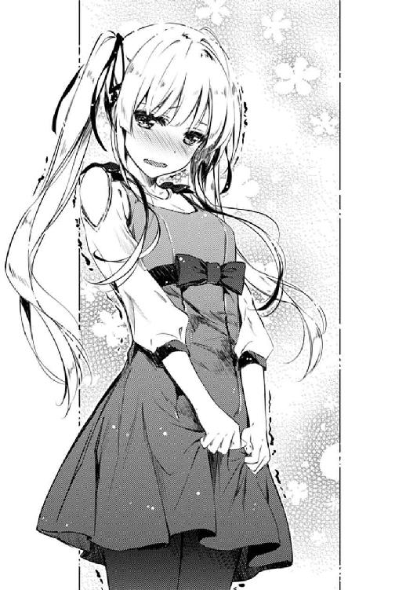

| 冴えない彼女の育てかた 05 | |
| 丸戸史明 | |
| Kadokawa / 富士見書房 (2014) | |

冴えない彼女の育てかた５
丸戸史明

富士見ファンタジア文庫
本作品の全部または一部を無断で複製、転載、配信、送信したり、ホームページ上に転載することを禁止します。また、本作品の内容を無断で改変、改ざん等を行うことも禁止します。
本作品購入時にご承諾いただいた規約により、有償・無償にかかわらず本作品を第三者に譲渡することはできません。
本作品を示すサムネイルなどのイメージ画像は、再ダウンロード時に予告なく変更される場合があります。
本作品は縦書きでレイアウトされています。
また、ご覧になるリーディングシステムにより、表示の差が認められることがあります。
口絵・本文イラスト 深崎暮人
プロローグ
放課後の視聴覚室にわずかに差し込む夕陽が、赤いくせに冷たさすら感じさせる一一月上旬......
「さってっと、それじゃシナリオ担当さんはお疲れさまでした～！」
......なんだけど、そんな陽光と同じように冷たくなりかけている教室内を、やたらとハイテンションで上機嫌な声が場を温める。
って、なんか今までのプロローグと違って第一声がえらく前向きだなぁ⁉
「というわけで、後はあたしたちに任せてラノベ新作の方に全力投球してくださいな♪ さよなら霞ヶ丘詩羽......永遠にね」
......などと感じたのも束の間。最後に、やっぱり晩秋の気温と同じような声で場を一瞬のうちに冷やしてくれたのは、金髪ツインテールというその髪のせいで、ツンもデレもわざとらしく見える女の子。
「その言い方、厄介払い感満々ね澤村さん。どうせ一月後には、ズルズルと納期を遅らせて涙と鼻水でぐちゃぐちゃの顔になりながら土下座して許しを請うのだから、今のうちは嫌味も控えめにしておいた方がいいと思うのだけど？」
んで、こちらは最初からいつも通り。
眠たそうな表情と口調でありながら、容赦なく真っ黒な言葉で場を凍りつかせてしまうのは、黒髪ロングというその髪のせいで、内に秘めているモノを裏読みせずにはいられない女の人。
「あら嫌だ、せっかく人が親切にあなたの仕事や体調を気づかっているというのに、そういう思いやりさえ素直に受け止められないなんて、小説家って偏屈で狭量で性格破綻者ばっかりってのは噂だけじゃないみたいね～」
「私はただ、自分の担当分はまだ終わらせていないのに、締め切り直前になるとアニメやゲームやコミックに現実逃避してばかりのイラストレーターという職種の人がそんな余裕かましてて、後でブーメランが返ってこないかと心配してあげているだけなのだけど？」
「だからあんたらせっかくのめでたい日にまで平常運転やめてよ⁉」
はい、毎度お馴染み、視聴覚室の窓側と廊下側に位置する二人の美少女紹介の時間だよ。
かたやアニメやゲームやコミックに現実逃避してばかりだけど、ギリギリになってからの速度とクオリティが目に余る......いや、凄まじいイラストレーター、柏木エリこと日英ハーフ金髪ツインテール同級生、澤村・スペンサー・英梨々。
かたや偏屈で狭量で性格破綻者だけど、本気になって書いてきた作品のストーリーやキャラ描写が恐ろしすぎる......いや、素晴らしい小説家、霞詩子こと黒髪ロング上級生、霞ヶ丘詩羽先輩。
そして、こっちもいつも通りの自己紹介。
この水と油にして、名水百選級＆も○みちのオリーブオイル級の二人を揃えてしまった驚異の無名同人サークル『blessing software』代表、安芸倫也。
この物語は、ある業界の衰退に戦いを挑んだ熱血オタクたちの記録である。
同人ギャルゲー界においてまったく無名の弱小サークルが、エロ全盛な風潮の中から健全な萌えと感動を培い、わずか数イベントでシャッターサークル昇格を為し遂げた奇跡を通じて、その原動力となった信頼と愛を余すところなくラノベ化したものである。
......まぁ、などという戯言はさておくとしてもだ。
今日はいつものミーティングとは違い、トラブル発生とかスケジュール遅延とか制作費使い込み発覚とかそういう生臭い議題もなく、それどころか、ついに詩羽先輩による『全シナリオ完全アップ』という、とってもめでたい区切りを迎えた記念すべき日だった。
なのに......
「そんなふうにあたしを挑発したって何も出ないわよ？ シナリオが完パケした以上、もうこのサークルにあんたの居場所がないというのは厳然たる事実なんだから、さっさとお帰りあそばせ霞ヶ丘詩羽......いいえ、霞ヶ丘セ・ン・パ・イ？」
それでもこの二人はっ、揉めるのをっ、やめないっ！
「本当にそれでいいのかしら澤村さん？ ここで私を追い払ったせいで、今以上にボッコボコに叩き潰されて、結局後で泣きながら助けを求めて来ても知らないわよ？」
「はぁ？ なに言ってんのあんた？ それってどういう状況......」
そして、そんな二人の緊迫度がますます高まってゆく夕暮れに......
「っはよ～、トモ！ 新曲作ってきたよ～」
突如、視聴覚室の扉を激しく開く音とともに、陽気で能天気なデカい声が響いた。
「み、美智留⁉」
「や～、やっぱ遠いわ豊ヶ崎。ガッコ終わってすぐ出たのにもう日暮れじゃんねぇ」
そこには、ここ豊ヶ崎学園のそれとは違う、大きなリボンが目立つ白い制服に身を包み、この寒いのに汗をうっすら浮かべ、ショートの髪を揺らしつつ、俺ににぱっと笑いかける、ギターを抱えた他校生。
「いや、それ以前にお前、なんで来たんだよ平日に！」
「や、だって昨夜すっごくいい曲浮かんだんだよ～。で、今すぐトモに聴かせなくちゃって思ったらいてもたってもいられなくなってさ～」
俺たちオタクとは対極のリア充（ただしモテるのは主に同性）でありながら、俺たちオタクの琴線を震わせる曲を次々と生み出す場違いな......いや、頼もしい作曲家にしてアニソン系ロックバンド『icy tail』のボーカル、ミッチーこと同い年のイトコ、氷堂美智留。
「そんなの音源送りゃいいだろが......」
「やっぱわかってないな～トモは。生演奏と録音じゃ同じ曲でもインパクトが全然違うんだって。さ、物は試しだよ。聴いた聴いた」
「いや結局ゲームに収録されるときは録音だろが......」
「細かいこと気にしなさんなって......よっ、と」
「こ、こらっ、美智留！」
そんな、身内意識丸出しで、無防備満載の我がイトコは、こちらの空気をまるで察する気もなく、ギターを構えると、椅子ではなく机の上にひょいっと座る。
......そう、いつもの癖で、あぐらで。
制服の短いスカートの裾から覗く、鍛え上げられた太股を隠すこともなく。
「......っ」
「......っ」
......その瞬間、一度は溶けかけた空気がまた凍った。凍った。凍った。さらに凍った。
「お前なぁ、ちゃんと立って弾け。せめて椅子に座って弾け！」
「え～、めんどくさ～」
「それと、曲作ってきてくれたのはありがたいけど、弾いたらさっさと帰れよ？ 遅くなったらまたおじさんたちが心配するぞ？」
「え～、今日くらい泊めてよ～。まだあたしの着替え、部屋に置いてあるでしょ？」
「ちょ、ちょっと！ 氷堂美智留！」
......そして次の瞬間、金色の針がダイヤモンドダストのように突き刺さる。
にしても、英梨々が相手のことをフルネームで呼ぶ基準ってつまり......
「あんた、ここまでどうやって入ってきたのよ？ そんな他校の制服のままで」
「あ～、『軽音楽部の合同練習』って言ったらあっさり入れたよ？」
美智留の奴、相変わらず悪知恵と度胸だけはトップクラスだな。
成績は進級ギリギリのくせに。
「だいたいさぁ、あたしだってあんたたちと同じサークルメンバーじゃん。邪険にされるいわれはないよねぇ......」
「なっ......」
「それにあたしの場合、オタクに興味なかったのに、トモに『どうしてもお前が欲しい』って言われたから仕方なく協力してやってるってのに、なんか話違くない？」
「そそそそんな台詞ならあたしだって言われたもんっ！」
え？ 英梨々にまで言ったっけ？
いや、それ以前にそこは論点じゃないだろと突っ込みたいけど手が出せないな今は。
「だ、だいたい、あんたの不法侵入のせいでサークルが活動停止でも食らったらどうするつもりなのよ？」
「なるわけないじゃんこの程度で。ま、ここで不純異性交遊でもしてたら話は別だけど」
いや、それ他校生でなくてもサークルも俺も終わりだから。
「非オタのくせして学園モノ純愛系エロ同人のシチュ思い浮かべてんじゃないわよ！」
そしてお前は世界が狭すぎんぞエロ同人作家。
「だいたい、あんたたちの文章や絵だってメールで送れるじゃん。なのに、なんでわざわざ顔突き合わせてんの？」
「そ、それは......同じ学校だし、家も近いし......」
「あたしなんて同じ一族だよ？」
「～～～っ！ ......か、霞ヶ丘詩羽ぁ～」
「......確かに警告はしたけれど、本当に泣きながら助けを求めてくることは想定してなかったわよ澤村さん」
と、なぜか思いっきりダメージを受けて涙目で引き下がるのび......英梨々にとって代わるように、今度はドラ......詩羽先輩が美智留の前面に立つ。
ていうかさっきまで口論してたはずなのに、いつの間にタッグ組んだんだこの人たち？
「氷堂さん、あなたのその熱意には感心するし、自分の節を曲げてまで私たちに尽くしてくれようとする姿勢には本当に頭が上がらないわ」
「別に、あんたたちのためにやってるわけじゃないけどね～」
「ええ、本当にありがたいと思っているからこそ、これ以上無理させてはいけないとも考えているの......だから弾いたらとっとと帰れ」
うわ、超低温は静止の世界だ......
「......それはあたしの勝手じゃん？」
「勝手......辞書を引くと、『他人のことは構わず、自分だけに都合が良いように振る舞うこと。また、そのさま』とあるわね」
「何が言いたいわけ？」
「いいこと氷堂さん？ サークル活動というのはね、団体行動が原則なの」
「そんなのあたしにだってわかってるよ。これでもバンドだってやってるしね」
「ええ、確かにあなたはバンドに参加している......ボーカルという、替えの利かない、そして何でもワガママの利く花形としてね」
「......いい加減、持って回った言い方やめたら？ センパイ」
「なら単刀直入に。あなたは確かにチームに属している......けれど、今まで自分を抑えてまでチームを立てるということをしたことがないのではなくて？」
「なっ......⁉」
英梨々のとっちらかった情緒的感情論とひと味違う、詩羽先輩の論理的感情論に、美智留は明らかに押され気味となった。
まぁ、どっちにしろ感情論であることに全然変わりはないんだけど、それを言っちゃあいけない。
しかし、その詭弁......いや論破で自らの足場を整えた詩羽先輩は、ここで一気呵成に出ようと......
「自分の都合で締め切り遅らせまくって編集を振り回すワガママ作家が何か言ってる」
「頼っておいて後ろから刺さないでよ澤村さん。負け犬イラストレーターのくせに」
......したけれど、まずは背後の火消しを優先せずにはいられなかった。
ああ、この二人って本当にいいタッグだな......試合中に仲間割れするところまで含めて。
「......なぁ、加藤」
「ん？ なに安芸くん？」
と、そんなふうに視聴覚室の中央で、さらに熱く冷たい口論が巻き起こっている最中。
彼女たちに気づかれないよう、じわじわと窓際まで避難した俺は、そこでさっきから余裕で高みの見物を決め込む......というより見物も参加もせずにスマホをいじっているもう一人のサークルメンバーに声をかけた。
「そのスマホ、いっつも何してんだ？ 最近話題だぞ俺の中で」
「あ、うん、今はパ○ドラ。ほら」
「うわ、すっごく意外性がない上にすぐ鮮度が落ちそうな答えをありがとう」
そこには、この視聴覚室に俺よりも早く一番乗りしておきながら、今の今まで、まるで申し合わせたかのように互いに不干渉を貫いていたポニーテールの女の子。
誰もが決していじめている訳でもないのにナチュラルにシカトできてしまうという、『我思う、故に我あり』という命題に従えば何も考えていないんじゃないかという疑惑まである同級生Ｂ。
我が『blessing software』の縁の下の......いや、メインヒロインにしてスクリプター見習い、〝ポニーテールは振り向かれない〟加藤恵。
「ほら、わたしも一応オタクサークルの一員だし。少しはこういうのに触れておこうと思ってさ」
「いや、ニッチなギャルゲーサークル的には、そんな誰もがやってるメジャー作品に手を出されても微妙なんだけど......」
いつも絶妙にツボを外すこの適当な語り口。
微表情、微感動なリアクションの中に、たまに混ざる微毒がまた中途半端に効いたりと、その微妙さは枚挙にいとまがない。
「ま、なんにしても、シナリオ全部上がってよかったね」
「これで、後は俺たちのターンだぞ？ ここから一月が勝負だ」
「間に合うといいね、冬コミ」
「間に合わせてみせるさ......なんとしてもな」
けれどまぁ、この不感症......いや不干渉が心地良く感じるときもある。
普通に、事務的にサークルの話ができる安定感とか、決して他メンバーへの牽制とかディスりとか当てこすりとかに行かない安心感とか。
「にしてもさ、これ、結構伸びたよなぁ」
「ん？ 髪？」
とはいえ、、この安らかさに安寧としてはいけない。
だって、俺がサークルを立ち上げるときに掲げた目標では、加藤を『胸がキュンキュンするメインヒロイン』にするはずだった。
こんな『振り返れば加藤がいる』的な安心、安全、安定な茶飲みヒロインに育てるはずじゃなかった。
「ショートポニーという属性も手放してしまったか......またキャラが薄まったな加藤」
「えっと、普通にポニーテールでも、その、なんだっけ？ 萌え記号？ ってのになるんじゃないの？」
「本人にそれを活かそうというあざとさがあればな......」
だから、今度のゲームのヒロイン......加藤をモデルにして造型した叶巡璃は、絶対に胸キュンヒロインに仕立て上げてやる、と決意を新たにする俺であった。
「だいたい、キャラクター性が定着する前に、こう何度も髪型変えてたら萌えるものも萌えないっての」
「えっと、安芸くんのわたしに対するあまりにもあんまりな言動はともかくとしてさ、あまりわたしの髪で遊ばない方がいいと思うよ？」
「尻尾にしてる奴が悪いんだろ。人間ってのはな、ひも状のものがあれば引っ張るようにできてるんだよ」
「そんなどう考えても個人の習性を人類の本能みたいに語られても」
「またこれが引っ張るのに適度な長さに伸びたのがいけない。ショートポニーなら我慢できたんだけどな～、っと」
「あ～あ」
そう、今の加藤の髪は適度に細長い束になっている。
これがまた、摑みやすいわ引っ張りやすいわ梳きやすいわで、ついつい弄らずにはいられない。
「知ってるか加藤？ 髪を根本から爪で挟んで引っ張るとくるくるカールされるんだぞ」
「......それはともかくさ、安芸くん。さっきの話を蒸し返すようでなんだけど」
「なんだよ？」
「みんなこっち見てるけど？」
「......ぇ？」
そう、俺は気づいていなかった。
「......女の子の髪を自分のモノみたいに扱うって、どうなの？」
「......あれが自称キモオタの所業かしら？」
「......リア充カップルだって恥ずかしくてやんないよあんなの」
「............ぇ？」
さっきまで騒がしかったはずの視聴覚室内が、いつの間にか静まり返っていたことに......
「いくらなんでも、気安さで済まされるレベルを逸脱してるような気がするんだけど」
「倫理を捨てた倫理君に存在意義はあるのかしら」
「なんかムカつく。異様にムカつく。これだから共学は......」
「い、いや待て！ これはだな！」
俺の、丸いものを目にした犬の条件反射みたいな行動を、リアル男の醜い欲望みたいに誤解した人たちが、俺に糾弾の視線を向ける。
そうか、冤罪事件ってこうして作られるんだ......
などと俺が恐れおののいたその瞬間......
「あ～、まぁいいや。ここはわたしがなんとかするよ安芸くん」
「か、加藤......？」
そこに助け船を出してくれたのは、意外や意外、俺と一緒に、当事者として巻き込まれつつあるはずの加藤だった。
彼女は、俺たちを取り囲む三人の前に立ちはだかり、いつものフラットな視線で皆に向き直ると、厳かに口を開き......
「え～と、確かこういうときって頰を赤らめながら『じょっ、冗談じゃないわよ！ 誰がこんな奴と！』って言いながら安芸くんに暴力振るえばいいんだっけ？」
「あ～、それは澤村さんね」
「うんうん、金髪ハーフ負け犬の台詞だね」
「どうしてあたしでオチってことになるのよ⁉」
なんか知らんが、綺麗にオチをつけてくれた。
第一章 最初からクライマックスって言ってても、大抵後でもっと大変なことになるよね
「............」
「............」
フロア一面に書棚が並ぶ広大な空間には、少しのざわめきと、紙のこすれる音だけが静かに響いている。
「............」
「............」
それら書棚の圧倒的な数、一つ一つの大きさ、高さ、威圧感。
そして、その中に押し込められた、ラノベやコミックとはまるで違う、地味で重厚な背表紙の群れ。
「............」
「......えっとさ、詩羽先輩」
「なに倫理君？ 読書中はなるべく話しかけて欲しくはないのだけれど」
「それについては悪いとは思ってるけど......」
そんな、無駄口を許さない荘厳な雰囲気に押されつつ、俺は目の前で椅子に腰掛けて読書に没頭している本の虫に、ほぼ一時間ぶりに声をかける。
「それで先輩さ、いつまでここにいるつもり？」
「そうね、この『司馬遼太郎全集』全六八巻が読み終わるまでかしら」
「......さすがにそれはネタだよね？」
「まぁ、負けに負けて、最初の話が読み終わるまでというところかしら」
「そんなギリギリ実現できるかもしれない嫌な冗談はやめてよ⁉」
その、詩羽先輩の微妙に途方もなくない発言に背筋を凍らせつつ、俺はついつい周りの迷惑も顧みずに大きな声で突っ込んでしまう。
「そうね、必死に頑張ればいけそうよね。何しろここは本屋なのに二三時まで営業してるし」
「そうだよね、ここ本屋だよね。本をタダで読ませるためじゃなくて売るためのお店だよね？」
......だって、さすがに自分の方に正義があると思える状況だったから。
詩羽先輩が、ここ池袋ジュ○ク堂書店に開店と同時に飛び込み、三階の文芸フロアで一冊も本を買うことなく座り読みを始めてすでに二時間になる。
その間俺は、書棚に並ぶ本のタイトルを見て回ったり、他のフロアへの冒険に出かけたり、店内のカフェで朝食を摂ったりと、頑張って時間を浪費しつつ彼女の現実世界への帰還を待った。
けれどもぅマヂ無理。どぉせゥチわ放ってぉかれたってコト。今堪忍袋切れた。
「そんなこと言われても、『どうぞお読みください』とばかりに椅子を据え付けてあるお店の方にも問題があると思わない倫理君？」
本当に、こういった大型書店のサービスの充実ぶりには頭が下がる......こんなモンスターカスタマーに浸食されてもビクともしないところとか。
「とにかく一度出ようよ。そろそろ昼飯時だし」
「仕方がないわね。なら読みかけのこの本、買っていくわ」
「......最初からそうして欲しかったという愚痴は言わないことにするよ」
というわけで、秋も深まった、とある土曜日。
俺と詩羽先輩は、朝から池袋で待ち合わせて、一緒にこの街をぶらついていた......まぁ午前中は一か所回っただけで潰れちゃったけど。
「ほら行くわよ倫理君」
「ちょ、ちょっと待って......一度カバンの中整理するから」
「まったく、荷物持ちとお財布を名乗り出たくせに、初手からどちらもギブアップなんて、とんだ大ボラ吹きね」
「初手でハードカバーの超重くて激高い本を五冊買われることはまったく想定してなかったもんで......」
「仕方ないでしょ。しばらく書くことにかまけてて、読む方が全然できていなかったんだもの」
先日、めでたくシナリオがアップしたお祝いに『何か欲しいものありますか？』と尋ねたところ、彼女が提示してきたのがこのデー......ショッピングだった訳で。
「まぁ、文学全集とかはプレゼントできないけど、次のランチは任せて。今日は『高校生にできる範囲で』精一杯頑張らせてもらうから！」
「そうね、『高校生の体力でできる範囲』で甘えさせてもらうわ」
「荷物持ちのことだよねそうなんだよね⁉」
相変わらず、いちいち紛らわしい表現が大好きだなこの女流作家様は......
※ ※ ※
「お待たせ、えっと......英梨々」
「遅い！ なにモタモタしてんのよ恵！」
「......三○分前にいきなり『○ュンク堂本店の前に来なさい。話はその後』と告げられた、まだパジャマ姿だった女の子にしては頑張った方だと思うんだけど」
「そんなこと言ったって、あなたが来るのが五分遅かったせいで、ついさっき二人とも出てっちゃったじゃないのよ！」
「二人って誰？」
「聞いて驚きなさい。あの霞ヶ丘詩羽と......」
「あ～、わかった。もう説明しなくていいから」
「......なんか言い方がいちいち引っかかるわね。あなたあたしに含むところでもある？」
「気のせいじゃない？ それで、出てったってどこへ？」
「だから、それを捜すのが今日のあたしたちのミッションなんじゃない！」
「もしかして英梨々、とてもめんどくさいことにわたしを巻き込もうとしてない？」
※ ※ ※
昼どきのイタリアンレストランは、家族連れに男同士に女同士にカップルに、とにかく色んな種類の客がひしめいていた。
そんな、『これぞ誰と入っても気まずくならない無難チョイスの最先端！』と自信を持って案内したその店で......
「ごちそうさま倫理君」
「......お粗末様でした」
「謙遜しなくてもいいわ。私は十分に満足したから。ポテトってお腹にたまるし」
「フォローありがとう先輩。俺も少し救われたかもしれない......俺たちが行ったのがピザ屋じゃなければね......」
「意外ね。結構メンツにこだわるんだ」
「ここまで潰されなければこだわりもしないんですけどね......っ！」
そんなシェー○ーズで、結局、三○分と戦うことなく、全然元を取れないままに俺たちのランチバイキングは終わってしまい、今はまた、池袋の街中を徘徊していた。
「仕方ないじゃない。今は食欲よりも性欲よりも知識欲なのよ」
「てか真ん中にさり気なく怪しげな欲求を潜ませるのやめてよ」
とは言っても先輩は、別に俺の店選びのセンスに呆れた訳でも、料理が口に合わなかった訳でもなく、ただ、今は食事をすることそのものに興味がないだけみたいだった。
何しろ、せっかく俺が取ってきたピザを『手が汚れるから』と目もくれず、テーブルの上に買ってきた本を広げ、店内の喧騒などものともせず、ふたたび読書に没頭し始めたのだから......
そして食事はフライドポテトを箸でつまむだけ......なんて奢りがいのない人だ。
「......んじゃ、次はどこ行く先輩？」
「そうね、寒くなくて静かで座れる、落ち着いて本が読める場所ならどこでもいいわよ」
「すいませんお願いですから俺をまるでいない人間のように扱うのやめてください」
しかしまぁ、いくらなんでもこのままじゃいけない。
今のところ、詩羽先輩の満足度は結構高いようで、お礼という目的は十分果たせてるっぽいけれど、それは俺の努力によるものではなく司馬先生の筆力によるところが大きいというのがなんとも微妙だ。
「あ、じゃあさ先輩、映画でも観ない？」
「映画......か」
というわけで、俺は少しでも自分のイニシアチブを取り戻すべく、目の前のシネマサン○ャイン池袋を指差した。
そこには、現在公開中の映画のポスターが所狭しと並んでおり、それもオタク系作品に絞ってさえ数点の選択肢が残るという、さすがシネマサン○ャインと言わんばかりのバラエティに富んだラインナップが広がっていた。
これなら、詩羽先輩の膨らんだ知的好奇心を満たすという点でも、二人とも楽しめるという点でも及第点を与えられるであろう、現時点でのベストチョイスに思えた。
「そうね、それはいいかもね」
そんな俺の予測を裏付けるように、しばらく一連のポスターを眺めていた先輩は、先ほどよりはよっぽど前向きな口調で、俺の選択を後押ししてくれた。
「よし決まり！ じゃあ何観ようか？ 一応俺にもオススメの作品あるんだよ。先週から公開始まってる......」
「せっかくだから、原作信者阿鼻叫喚の残念な実写化映画が観たいわね。何かそれらしいタイトル公開してないかしら？」
「そういう悪趣味な選択やめようよぅ」
にしても、一体、どんな知識欲を満たそうとしてるんだこの人は......
※ ※ ※
「............」
「......見つからないね」
「おかしい、絶対に半径二○○メートル圏内にいるはずなのに！」
「......その範囲にいる人間って、数万人レベルだと思うんだけど」
「それでも、倫也だったらすぐ見つけられるはず......っ」
「えっと、どうして？」
「それは......と、特徴があるっていうか、オタクオーラ強すぎっていうか」
「一番特徴あって、一番見つかりやすいのって英梨々だと思うんだけど」
「......ほっといてよ」
「そういえば、さっきは聞かなかったけど、前情報もなしにどうやってあの二人を見つけたの？ しかも地元じゃなくて池袋で」
「ぐ、偶然に決まってるじゃない」
「偶然かぁ......そういえば前に、六天馬モールでも偶然会ったことあるよね？」
「......あなたのような勘の良い女の子は嫌いだわ」
「あれ？」
「な、何よ？ 本当よ！ 誰が何と言おうと偶然ったら偶然......」
「ねぇ、あそこにいるの、安芸くんと霞ヶ丘先輩じゃない？」
「え？ どこどこ......？」
「ほら、映画館の入場列に並んでる二人。後ろから一○人目くらい」
「ほ、本当だ......さすが恵ね！ いつも美味しいところだけかっさらって行ったり、気のないふりして敵を油断させたり」
「え～と、わたしのことを実は黒キャラみたいに言う風潮なんとかならない？」
※ ※ ※
「絵作りや演出には見るべき所はあったけれど、物語として見ると、どうしても蛇足感がぬぐえなかったわね」
「そっかなぁ？ あの新キャラ、めちゃくちゃ可愛かったじゃん」
「それはキャラデザの勝利。設定的には、物語の裏設定を語らせる単なる舞台装置でしかなくて、彼女こそ、あの名作だったＴＶ版を台無しにしてしまった一番の戦犯よ」
「それに、ラストシーンもかなりグっときたし」
「そっちは演出の勝利ね。脚本としては陳腐もいいところなのに、画面効果や音楽で『なんだかわからないけれど凄い』みたいに押し切られているのよ」
「そういうのさぁ、脚本が悪かったって言うより、キャラや演出が良かったって素直に賞賛した方がファンとして幸せだと思うけどな」
「そういう盲目的な信者はいつしか制作者を堕落させるのよ」
「そんなこと言われても俺消費豚だし」
「仮にも私のシナリオを作品化しようとするディレクターにそんな無責任なこと言われたくないわね」
「う......」
そんなわけで、今は映画も終わった午後四時過ぎ。
休日の池袋の午後は、どこの喫茶店も満席で、辛うじて待たずに座れた椿○珈琲店のテーブルで、俺たちは今見てきた映画の感想を語り合っていた。
ちなみにその映画ってのは、『あの雪のプリズム劇場版』。
詩羽先輩の危険な嗜好から提唱された残念な実写化映画の誘惑に抗いつつ、結局、今自分が一番観たい作品をなんとかねじ込むことに成功した。
......その結果、こうして肩を縮こまらせて酷評と説教を聞くハメになってるけど。
「いい倫理君？ あなたも、いいものはいい。悪いものは悪いと言える目と勇気をちゃんと持つようにしなさい」
「目ってのはわかるけど......勇気って？」
「そう、例えば私の作品でも、悪いと思ったら容赦なく貶す勇気ということね」
「......そんなことして怒らない？」
「怒らないに決まってるじゃないの。本気で向き合ってくれるユーザーの意見ほどありがたいものはないわよ？」
「そ、そうなんだ......」
「まぁ、思いっきり拗ねるけど。一か月は口を利かない自信はあるけど。あとその意見が的外れだったりしたら一生口利いてやらないけど」
「やっぱ嫌だよそんな怖い賭け⁉」
まぁ、何にしても、これでやっとデー......ショッピングらしくなってきた。
何しろさっきまでは、二人の間にほとんど会話がなく、『一緒にいるのにスマホ弄ってて全然会話しない最近の若者気質』とか言ってマスコミに嘆かれそうな状況だったし。
「さてと、あっちも落ち着いた頃だろうし、そろそろ出ましょうか」
などと、そんないい雰囲気を嚙み締めていたのも束の間。
反省会は終わったとばかりに、詩羽先輩が伝票を手にしてさっさと席を立つ。
「あ、支払いは俺が......」
「見栄を張るのはやめなさい。このお店はプランに入ってなかったんでしょう？」
「......面目ないっす」
どうやら注文のときメニュー見て固まってしまったのをしっかり見られてたらしい。
確かに、本来ならこの時間はク○エかス○バかド○ールで済ませる予定だった。
ていうかコーヒー一杯千円ってなんなんだよ......さっきのランチとほとんど値段変わらんぞ。
「ま、その値段分、倫理君にはまだまだ頑張ってもらわないといけないし」
それでも詩羽先輩は、まだ今日の日を終わらせるつもりもないみたいだった。
午前中の、本に没頭しているときと同じように、退屈はしていなさそうな表情で俺と会話を続けてくれている。
俺は、そんな詩羽先輩の穏やかな態度に安堵しつつ、さっきの言葉の中の一節に、ほんのちょっとだけ引っかかっていた。
『あっちも落ち着いた頃だろうし』
あっちって、どっち？
※ ※ ※
「っ、ぅ、ぅ、ぅぅぅ......」
「そろそろ落ち着いた？」
「う、うん......ごめんね恵、みっともないとこ見せちゃって」
「いいよ別に......感受性豊かなんだね、英梨々って」
「だって、だって......まさかの麻里子エンドとか......っ！」
「あ～、あのラストシーンって、そういう解釈も成り立つんだ」
「だ、だって公平が羽衣のことを忘れて前向きに生きることを選択したのよ？ だとしたら隣にいるのは子供の頃からずっと彼を見つめてた麻里子しかいないじゃないっ！」
「......なのかな？」
「なのよっ！ よかった......ＴＶ版の最終回で切らなくて本当によかった......っ！」
「まぁ、それはいいとして、あの二人、そろそろ出て行くみたいだけど？」
「そんなことより今は『あの雪』よっ！ まだまだ語り足りないわ！」
「あ～、はいはい、よかったね幼なじみエンド」
※ ※ ※
「それじゃ、今日は一日お疲れさま」
「お疲れさま～......ふぅぅぅぅ～」
「さすがの倫理君も本気でお疲れのようね」
「......最後のショップ巡りでトドメを刺された」
時は流れて午後七時。
場所は、サ○シャ○ンシティのエスニックレストラン。
もちろん、スカイラウンジの方は予算的に無理なので、下のショッピング街の方にあるリーズナブルな店だけど。
とにかく、そのそこそこ庶民的な店内で、俺たちは今日のデー......ショッピングのお疲れさま会を執り行っていた。
「まさか今日一日で文芸だけでなく、オタク系も制覇するとはね......」
「だから言ったじゃない。今の私は知識欲の塊だって。絵も文章も、面白そうな作品ならなんでも吸収しなければ気が済まない状態なのよ」
喫茶店を出た後も、詩羽先輩の買い物欲はとどまるところを知らなかった。
と○のあなにアニメ○トにゲー○ーズ、池袋に現存するオタクショップを、男性系も乙女系も、同人も商業も分け隔てなく回りまくり、目についた新刊（それも世間から隔絶されていた数か月分の）を買いまくり、その荷物を全て俺の両手に押しつけた。
まぁ、それが今日の最初からの約束だったのは確かだけど、それでも今、コミケ帰りと同じくらいの重量が俺の両手にかかっているこの現状は結構笑えない。
「それにしても、ある程度はア○ゾン使えばいいのに」
「私、澤村さんと違ってそういうの駄目なのよね。なんとなく自分で手にとって確かめないと買う気になれないっていうか......貧乏性なのかしらね」
「はは......」
まぁ確かに、高校生にして数十万部単位で売れてる作家にしては、そういうところは庶民的と言えなくもない。
ていうか比較対象が個人と家庭含めてバブル過ぎるという話もなきにしもあらずだけど。
「まぁそれはともかく、今日だけでなく、シナリオアップお疲れさまでした、詩羽先輩」
「こちらこそ、予想以上に時間がかかってしまってごめんなさいね」
「その殊勝な態度は確かに一見の価値はあるけれど、そういった言葉は俺じゃなくて町田さんに掛けてあげてよ」
何しろ、趣味の同人作品が遅れることはほぼ自己責任だから仕方ないけれど、仕事の商業作品が遅れることは、商売をしている企業にとってどれだけの影響が出ているのかとか想像したくない。
不死川書店編集部の霞詩子担当である町田さんの、あのさばさばした笑顔の裏で、どれだけの栄養ドリンクと胃腸薬とカップ麵が消費されたことか......
まぁ向こうも作家が原稿遅らせるのを最初から想定して、ある程度のバッファを抱えつつ早めにプレッシャーかけてくるからおあいこだけどな！
「でも、こっちが遅れたせいで、きっと後の作業が地獄を見るわよ？ 主にスクリプト担当の倫理君が」
「の、望むところで！」
そう、実は確かに詩羽先輩のシナリオは遅れた。
何しろ、先月中旬に聞いた進捗状況では、『あとはエピローグを残すだけ』って話だったのに、そこから完成まで二週間以上もかかった。
で、どれだけ長いエピローグなんだよと、最終提出のシナリオに目を通してみたところ、追加分はテキストにして四キロバイト......原稿用紙にしても一○ページに満たない分量で。
......いや、クリエイターにとって分量を時間で計るのは意味のないことだ。でないと業界見渡しても辻褄の合わないことが多すぎる。具体例は挙げないけど。
「とにかく、これで私の担当分は終了ね」
「うん、今まで本当に......」
「今後はサークルにも顔出せなくなるかも。小説の作業もあるし」
「......そ、そっか」
その言葉を聞いたときの、自分の声のトーンが急激に落ちていくのがあからさますぎて笑える。
「それに、そろそろ進路のことも考えないとね。他の人たちより随分遅れちゃったけど」
「............そっか」
さらに追い打ちで、自分の表情が暗く沈んでいっているのが想像できすぎて呆れる。
「まぁ一応、今までの積み重ねがあるから推薦狙ってみるつもりだけど」
「そ、そっか、そうだよな！ 詩羽先輩の成績なら引く手あまただもんな」
けれどここで、すぐに自分のテンションが盛り返すのが現金すぎてちょっと自己嫌悪。
「今のところ、同命大の推薦枠がまだ余ってるって。多分ここなら間違いないだろうって進路指導で言われたなぁ」
「ど、同命大って......関西じゃん」
だけど、あっという間に冷水を浴びせられ......
「それともう一つが早応大。こっちは実家から通えるし、迷いどころよね」
「っ......」
......と、ここまで来たら、もう疑いようがない。
「......で、どうしたの倫理君？ もうすぐ冬だっていうのに、そんなに汗かいて」
俺、からかわれてる。
「ね、倫理君は......どっちがいいと思う？」
「ど、どっちって......えっと」
「文学部のランクで言えば、同命大の方が上なのよね」
「そ、そうなんだ」
「けれど、親元離れて一人暮らしってのもめんどくさいし」
「う、うん」
「そうは言っても、自由気ままな生活っていうのも興味ないこともないのよね」
「え......」
さっきから、青くなったり赤くなったり、息を吞んだりため息をついたり、俯いたり見上げたりを繰り返す俺の感情の浮沈を、詩羽先輩は頰杖をついたまま、上目遣いで見つめてる。
「ね、ね？ なんで？ どうしてそんなに慌ててる訳？」
それも、あきらかに楽しそうな表情でっ！
※ ※ ※
「ね、これなんかどうかな？ 英梨々に似合いそうだと思うけど」
「......ねぇ」
「ていうか、大抵のものは似合うよね。何しろ素材が素材だし」
「あの......」
「ほんと、肌は白いし、髪キラキラだし、スレンダーだし、コーディネイトのしがいがあるなぁ......あ、こっちのブラウスも試してみない？」
「って、ちょっと待ちなさいよ！」
「あ、今試着してるやつでよかった？」
「そういうことじゃなくて......ねぇ、恵」
「なに？」
「どうしてあたしたち、パ○コにいるのよ⁉」
「○武のほうがよかった？」
「だからそういうことじゃなくて、こんなところで何してるのよ！」
「だから、英梨々の普段着を買いにでしょ？ さすがにいつまでもジャージってのも」
「そんな吞気なこと言ってる間に見失っちゃったじゃないのあいつらっ！」
「見失ったのは、英梨々が映画の話に熱くなりすぎて......」
「ああいい過去のことは今さら蒸し返しても仕方ないから。とにかく今からでも捜しに戻らないと」
「別に、今日のところはいいんじゃないかなぁ？ そもそもこんなストーカーまがいのことしていいのかっていう根本的な疑問はさておいて」
「何言ってるの！ あの二人、放っておいたら何をしでかすかわからないじゃない！ これってサークル崩壊の危機よ？」
「だから、何もないみたいだよ？ まぁ、今日のところはって制限付きみたいだけど」
「だから、どうしてそんなことが言えるのよ！」
「さっき霞ヶ丘先輩からメールが来たから。まさに今わたしが言った通りの文面で」
「............はい？」
※ ※ ※
「あ、あのさ、詩羽先輩......」
「ん？」
時はちょっとだけ流れて午後七時半。
つまり、俺が思いっきりあたふたしてから落ち着くまでの数分間が経過しただけの、さっきと同じ場所。
「これはあくまで参考意見として聞いて欲しいんだけど」
「いいわよ、参考にさせていただきましょう？ もちろん、単なる参考だから決めるのは私だけど」
頰杖をついたまま俺を見つめる詩羽先輩を、やっと見つめ返すことができるほどに息を整えた俺は、それでもまだ頭の中をぐるぐる回転させつつ、ゆっくりと言葉を紡ぎ出そうとしていた。
......どれだけ参考だ、個人的意見だと断りを入れても、どう考えてもそれは、一人の人間の将来に影響を及ぼす、重要な言葉であることは間違いなくて。
しかも、その一人の人間ってのが、自分に近しい、自分が大切に思っている人間とすればなおさらで。
ていうか、なんだかんだ言い訳してるけど、とにかく重いっ！ 重いけど......っ！
「俺は......早応大の方がいいと思う」
「ふぅん」
その瞬間、詩羽先輩は、口調も表情も変えなかった。
「いや、あくまで俺個人の意見であって他の人の意見も参考にして決めた方がいいと思うし、ていうか俺みたいなガキよりも、もっと大人の意見に耳を傾けてですね......」
「どうして早応大の方がいいって思ったの？」
「......地元にいればさ、先輩が大学生になった後だって、また一緒にゲームとか作れるかもしれないじゃん」
またしても詩羽先輩は、表情を変えなかった。
「ほら、大学生って基本的に暇だって聞くしさ。しかも文系の、さらに文学部といえば普段何やってんだかわからないし」
ただ、今度は何も言葉を発しない。
「それに先輩はもう手に職をつけてるし、就職活動とかも必要ないし、四年間、ただ小説書いて、後は遊んでりゃいいわけだし」
ただ、じっと俺の顔を見て、俺の言葉に耳を傾けるだけ。
「......そりゃ、先輩の方から、俺と組むのなんか二度とゴメンだって言われたら引き下がるしかないけど」
それは多分、見透かそうとしてるから。
「そうなったら、今年が最後のゲーム作りになるかもしれないけど、結果として、そうなってしまうかもしれないけど」
だから俺は、そこに、噓偽りのない本気の言葉をぶつける。
信者としての、後輩としての、サークル仲間としての、クリエイター同士としての......
「それでも、自分から可能性をなくしてしまうのは、嫌だ」
そんな、色んな立場での感情が渦巻く中で、ただ一つだけ、絶対に間違っていないと胸を張って言える言葉を、告げた。
詩羽先輩は、俺の言葉が終わった後も、しばらくは頰杖を崩さず、俺の瞳をじっと見つめてた。
で、その姿勢がようやく動き、テーブルの上に腕を投げ出し、そこに自分の顔を乗せ、上目遣いの眠たそうな瞳で俺を見上げると......
「......そこまで直球に口説かれるとは思ってなかったわね」
「そういう解釈なんだ......」
俺の発言を、相変わらずヤバいニュアンスで解釈してくださる。
......まぁ、そう言われてしまっても否定しきれない内容と口調だったのは認めるけどさ。
「少しばかり大義名分が邪魔くさいけど、まぁ、よく頑張った方ね。ちょっとだけ褒めてあげてもいいかも」
「そりゃ、どうも」
そして、詩羽先輩の感想は、それっきりで終わった。
結局、俺の〝参考意見〟に対する彼女の個人的見解を伝えてはくれなかった。
まぁ、覚悟はしてたけどさ。
何しろ相手は、登場人物に思わせぶりな台詞を連発させるのが大好きな謎かけ作家、霞詩子だ。
「なら、ご褒美をあげましょう......ある意味罰ゲームかもしれないけど」
で、続く言葉とともに、詩羽先輩がポケットから何かを取り出しテーブルの上に置く。
「なに、これ？」
それは、飾りも何もないシンプルな......ＵＳＢメモリだった。
「トゥルールート第二稿。この間、提出したシナリオから、ほぼ全面改稿してあるわ」
「なっ......⁉」
けれど、そこに含まれているものは、相当に複雑で、ものすごい迷彩が施された......ていうか爆弾が仕掛けられていた。
「これが私たちの......私たちのゲームの、もう一つの可能性」
「せ、先輩......？」
「倫理君に選んで欲しいの。初稿と第二稿、どちらが面白そうか、どちらが受けそうか、どちらが売れそうか」
そして、それを俺に託す詩羽先輩の表情も、相当に複雑で、ものすごく迷彩が施され......まるで読めなかった。
「そして何より、倫也君は、どちらが好きか」
第二章 作者が全然考えてなかった物語の空白について大論争されるとモヤモヤするよね
「う～ん、何度チャイム押しても応答ないね。おっかしいなぁ、確かに今日の一○時、安芸くんの家に集合だったよね？」
「ま、まさか昨日の夜から帰ってないとか？ 今ごろ、ホテルの部屋で夜明けのコーヒー飲んでたりとかっ⁉」
「ええとね英梨々、想像力豊かなのは作家としては財産かもしれないけど、その妄想に付き合わされる側としてはちょっと困るというか、たまったものじゃないというか」
「と、とにかく、一度倫也の部屋に行ってみるわよ、恵」
「さすがに留守宅に勝手に入るのはまずいんじゃないかな？」
「本当にいないか確認するだけよ。だいたい、ここであたしたちが帰ったら困るのはあいつなのよ？ そろそろ進行状況ヤバくなってきてるんだし」
「それもそっか......じゃあ、わたし鍵取ってくるね」
「ちょっと恵！ あなたいつの間に鍵のありか知ってるのよ⁉ も、もしかして夜中に何度もおじさんたちの目を盗んで......っ？」
「......わたしの三つ前の台詞、ちゃんと聞いててくれたかな？」
※ ※ ※
「ぅ......ぅぅ、ひっ、ぅ、ぅ、ぅぇ......っ」
「............」
「......え～と」
というわけで、秋も深まった、とある日曜日。
まぁぶっちゃけ、今日の日は昨日の翌日。
「ふぇぇぇぇ......ぇぐっ、う、うわぁぁぁん......よぉぉ、お前ら来てたんだぁ」
「泣くか挨拶するかどっちかにしなさいよっ！」
「え～と、おはよう安芸くん。多分寝てないんだろうなぁというのはともかく」
扉を開けて、英梨々と加藤が部屋に入ってきたとき、俺は、ＰＣのディスプレイにかじりついて、徹夜明けと号泣で目を真っ赤に腫らしていた。
「ぐ、ふぇぇ......そ、そうか、もう集合時間か......悪い、チャイム聞こえなかった」
どうやら、昨夜からテキストの海に溺れてたせいで、まるっきり聴覚と時間感覚を失っていたようだ。
「で、倫也、一体なんなのよこの状態は？」
「ご、ごめん......ちょっと、感動しすぎて」
「何にっ⁉ ま、まさか昨日の池袋プ○ンスでの一夜を思い出してるんじゃ......」
「英梨々、場所まで特定しちゃったらブーメラン来るよ？」
「違うよ、お前らも読んでくれ、この魂のシナリオを......っ」
そして、当然ながら怪訝そうな表情を見せる二人に、俺は自分が見ていた文字だらけの無味乾燥な画面を指差した。
......池袋プリ○スとかブーメランとか、そういった不穏な言葉はよく聞こえなかったということにして。
※ ※ ※
「......何よこれ」
「......うわぁ」
そして三○分後。
俺の指し示したテキストファイルを読み終わった二人は、それを初めて読んだときの俺と同じように、口をぽかんと開けて、呆けたようにこっちを見た。
「な、な、凄いだろ？ それこそ悲恋の伝道師、切なさ炸裂作家、霞詩子こと詩羽先輩が魂を削った会心の......」
「この前のシナリオと思いっきり展開変わってるじゃないのよっ⁉」
「そこはひとまずグっと飲み込んでこのクオリティに感動してくれよぅ！」
「ええ感動したかもしれないわね！ あたしがこの作品の原画担当じゃなくて、今さら増えたり変更になったりした原画枚数が頭に浮かんでこなけりゃね！」
というわけで、俺の指し示したテキストファイル......まぁ要するに、詩羽先輩が昨日になって突然提出してきた第二稿シナリオを読み終えた英梨々は、入稿まで残り一月を切ったこの時点での、自分の作業量の激増に頭を抱えた。
う～ん、そういう周辺事情から目をそらして、まずはフラットな気持ちでこの神シナリオに目を通して欲しかったんだけど......
「これ面白いねぇ......最初のもよかったけど、これもすっごく面白いよ」
「加藤？」
しかし、そういう周辺事情に疎い、というか、多分、自分にこれから先、何が降りかかってくるかを理解していない〝メインヒロイン〟の方は......
「文字だけなのに、絵とか声とかが勝手に浮かんでくるみたい。最後の方、ちょっと鳥肌立ったよ」
「な？ な？ だろ？ そう思うだろ加藤！ さすがはフラットの申し子！」
「......そういう呼ばれ方を嬉しがる女の子がこの世に存在するとは思わないけどね」
まぁ、疑問を感じるのは俺の態度に対してだけで、詩羽先輩のシナリオの方には諸手を挙げて俺の意見に同意してくれた。
そう、詩羽先輩の修正シナリオは、何度読んでもガチ泣きするくらい、本当に面白かったんだ。
「これ、変えてるのってほとんど最後の方だけだよね？ なのにまるで違う話を読んでるみたい」
「そうなんだよなぁ......それがまた凄い！」
確かに修正量は多かったけれど、修正した部分については、最終章の後半とエピローグに偏っていて、決して広範囲というわけじゃなかった。
なのにこの、最初のシナリオとは圧倒的な〝違い〟を感じさせるそのテクニックには、舌を巻かざるを得ない。
俺が、初稿よりもこの第二稿に強く感動したのは、その、物語とは微妙に離れた部分での、言い方悪いけど『辻褄合わせ』のテクニックに感動したってのもあるかもしれない。
だってこれ、改変が絶妙すぎる。
展開が相当変わったのにも拘わらず、序盤からこつこつ蒔いてきた伏線を、初稿と同じく全部回収してる。
それも、全てがまったく同じ回収の仕方って訳じゃなくて、微妙に解釈を変えて。
......ええと、俺のつたない表現力じゃ説明しきれないかもしれないけど、例えば序盤でヒロインが『大丈夫、できるよ、誠司なら』と言ったとするよな？
で、終盤のクライマックスで、同じヒロインがこれと同じ台詞を言うんだけど、初稿では、そのシーンが主人公と一緒に生き残る希望の台詞だったのに、第二稿では主人公を庇って消滅する自己犠牲の台詞に切り替わってたりする。
そんな世界がひっくり返るような解釈の違いが、あらゆるところに散りばめられていて、『もうこれ最初は初稿で出してから、第二稿をディレクターズカットとか言って二度売りしちゃえばいいんじゃね？』などと生臭いことを考えてしまいそうなくらいに、整合性も面白さも保ったままの神改変が施してあった。
あまりにも凄すぎて、まるで、序盤の段階から二通りに解釈できるように作ってあったみたいに思えて............いや、まさかな。
「でも倫也、本当にいいのこれで？」
「英梨々......？」
けれど、そんな神様への信仰が昇華してアヘ顔......いやえびす顔でにやけていた俺に、英梨々の少し冷静で、少し悔しそうで、少し済まなそうな声が掛かる。
「恵も言ってたけど、これ、今まで作ってきたこの作品の解釈変わるわよ？ もしかしたらシナリオのテーマすらひっくり返ってるかもしれない」
「......うん」
「絵の方も、終盤だけ直せば何とかなるように思えない。もしかしたら序盤から使う立ち絵の表情すら修正加えないといけないかも」
「............そうだな」
「何より、トゥルールートのヒロインが変わった」
「..................わかってる」
そう、つまりそういうことだ。
あまりにも神改変過ぎるんだ。
「え？ そうかな？ わたしには今まで通り、巡璃がメインヒロインに見えるけど？」
「......うん、加藤の言う通りだよ」
「そうね、きっと恵の言ってることも正しいわ」
「？」
こういう、二つの解釈を生み出すところが神改変なんだ。
つまりこれ、メインヒロインルートと、トゥルールートが別という構造になってる......
キャラクター中心に素直に楽しむ人は、メインヒロインである巡璃のシナリオがこのゲームの本筋に見える。
けれど、俺や英梨々みたいに、今までギャルゲーで深読みとか考察とかしまくった人間なら、裏のヒロインである瑠璃のシナリオがこのゲームの本質に読める。
「ああもう、この喪失感、この切なさ、なのにこの爽快感......『恋するメトロノーム』の時の霞詩子臭がぷんぷんする」
「お前、やっぱ霞詩子のファンなんだろそうなんだろ」
「参ったなぁ、こんなの出されたら、下手すると完全に霞詩子のゲームになっちゃう......柏木エリの色なんて全部消される」
「手、抜けなくなったな」
「元から抜くつもりなんてない」
いつもなら『いや柏木エリの色が濃すぎると一八禁になるから！』とか突っ込みを入れるところだけど、そんな野暮なことはしない。
だって、いつもなら何があっても絶対に貶すはずの詩羽先輩の作品を絶賛するくらい本気のクリエイターになっている英梨々に、本気で応えないなんて許されない。
「というわけでさ、今日の作業に入る前に採決をとりたいんだけど......いいかな？」
そして、俺のそんな真剣な口調で絞り出した言葉を受けて、部屋の中に緊張が走る。
直球で王道で骨太なエンターテイメントである初稿。
拗くれてるけど深くて、作品としての強い色を持った第二稿。
多分、どっちへ進んでも、作る側としては厳しい戦いになるだろう。
そしてどっちへ進んでも、それはきっと、凄い作品になるに違いない。
それでも俺たちは選ばなくちゃならない。
一度決めたら、そのシナリオと心中しなければならない。
そんなわけで、今、まさに俺たちの目指す方向性が、決ま......
「いいわけないでしょ」
「え～」
......らなかった。
「そんな重くて難しくてカロリー使うこと締め切り間際の原画家にやらせようとか、あんたプロデューサーとしての自覚あんの？」
「け、けど今までだって、みんなで考えて、みんなで決めて、みんなで乗り切るってのが俺たち『blessing software』の......」
「ううん、今回だけはプロデューサーとディレクターで決めるべき。そして、その選択をメンバーは黙って受け入れるべき」
「プロデューサーとディレクターって......」
要するに、俺一人でなんとかしろ、と？
「あえてもう一人、採決に加えてもいいとすれば、書いた本人......なんだけど、今日は見当たらないわね？」
「それは......もう作業終わったし、小説の方の締め切りもヤバいらしいし」
「......一日中、男とイチャイチャしてる暇はあるのにねぇ」
「見てきたようなデマ飛ばしてんじゃねぇ！」
デマだよな？ 見てきてないよな⁉
「何はともあれ、霞ヶ丘詩羽がこの場にいないってことは、つまりそういうことなんでしょう？ 一任されたなら責任果たしなさいよ......〝倫理君〟？」
「う......」
英梨々のその拒絶は、決して無責任によるものじゃないってのは、わかってた。
それどころか、この決断に大きな意味を、責任を感じたからこそ、あえて自分の意志で退いたんだって、わかってた。
だから、その決断自体は尊いものではあると思ったりしたけれど。
その結果、俺は、完膚なきまでに逃げ道を塞がれてしまった。
......もちろんサークルの方向性についてだよ？
それ以外に選択することなんかないよ？
※ ※ ※
「ねぇ安芸くん、ちょっと大きめのファイルダウンロードしていい？」
「公序良俗に反しないものだったらな」
「大丈夫だよ、安芸くんのＰＣのブックマークに登録されてるサイトのファイルだし」
「なにその彼氏の行動を逐一監視してるヤンデレ彼女みたいな行動⁉」
二人が俺の家に来てそろそろ数時間。
昼飯後のまったりしたひとときに、加藤のリラックスした......というか、暇を持て余したような声が届く。
机の方では、食後の休憩もそこそこに切り上げた英梨々がタブレットと格闘する規則正しい音が響いている。
そんな中、俺は、加藤の緊張感のない質問に答えつつも、その視線は手に持った二種類の紙束を行ったり来たりしている。
そう、詩羽先輩の、結末の違う二種類のシナリオを。
「う～ん......」
「あれ？ これってどうやってインストールすればいいのかな？」
「解凍したフォルダの中に『はじめにお読みください』みたいな名前のテキストファイルがあるだろ」
「あ、本当だ。ありがと安芸くん」
「う～ん、う～ん......」
英梨々に見放され......いや、信頼され、決定稿のシナリオ選びを任された俺は、もう一時間以上も、こうして唸り続けている。
「よし、インストール終わり、と。それで、起動は......」
「大抵のケースは、タイトル名にexeの拡張子がついてるファイルをダブルクリック」
「あ、タイトル画面出た......さすがだね安芸くん」
「う～ん、う～ん、う～ん......」
しかも、そうやって頭をひねり回している間にも、加藤の呟きに、今みたいにいちいち反応してしまうせいで、思索も考察も決断も一向に進まない。
まぁ、けれどそのことで加藤を責める訳にもいかない。
何しろ、加藤にそんな暇を与えてしまっているのは俺だ。
俺が方針決定しないとスクリプト作業が動き出せなくて、加藤が暇になる。
加藤が暇になると、暇つぶしのためにちょこまかとハムスターみたいに動き出す。
その分、俺のツッコミが増え、そして俺の思考が捗らない。
「う～ん、う～ん、う～ん、う～ん......」
「ちょっと、倫也うるさい！」
「俺より加藤の方がよっぽど喋ってるだろ......」
「普通に喋ってるならともかく、意味のない雑音って気になるのよ」
「あ、そういうのわかる。テレビとかつけっぱなしでも平気で寝れるのに、蚊が飛んでる音が聞こえると全然眠れないもんね」
「おお、そうそう！ あとイビキとかな。ああいうのっていくら小さい音でも一度気になるともう駄目だよなぁ！」
「という訳だから黙れ」
「......ぁぃ」
そして結局英梨々まで苛つかせてしまうという悪循環。
というわけで、うなり声を極力抑えるためにも、三度ばかり深呼吸して、もう一度テキストの海へとダイブする。
真夜中から明け方の、呼び鈴すらも耳に入らなかった、あの境地へと戻っていく。
......う～ん、う～ん、う～ん、う～ん、う～ん。
そうやって集中して見返してみても、やっぱり無言で唸ってしまうくらい、初稿も第二稿も同じくらいよくできてる。
初稿が予備知識としてあったせいで第二稿のショックが大きかったけれど、読む順番を逆にしてみたら、多分、まるで逆の感想になるはずだ。
それくらい、どちらも抜群に面白く、甲乙付けがたく、そして互いが影響を及ぼしあっている。
「あ、そういえばさ安芸くん、今日の英梨々、どこか違うと思わない？」
「なっ......ちょ、恵？」
なら、何を基準に選べばいいんだ？
どっちが萌えるかと聞かれれば、それは初稿。
どっちが泣けるかと聞かれれば、第二稿。
全体としてのバランスは、やっぱり初稿。
トゥルールートの突き抜けっぷりは、間違いなく第二稿。
「ほら、英梨々って、ここに来るときはいつもジャージだったよね？ でも今日はちょっとバージョンアップというか、モデルチェンジというか......」
「だ、だかららめぇぇぇ！ 今日はそういうこと言わないって約束したでしょ！」
第二稿を読んだ後だと、初稿は、物語が少し浅く感じる。
確かに面白いんだけど、展開に意外性がなく、万人向けというか、薄味というか。
そして初稿を読んだ後の第二稿は、確かに物語が深く濃く、凄いって思ったけれど......
でも冷静に見返すと、マニアックでわかりにくく、元々、このゲームの企画を立ち上げたときの『メインヒロインを魅力的に描く』という基本コンセプトから微妙に外れてきている。
そう、第二稿は、英梨々も言った通り『剝き出しの霞詩子』なんだ......
「でも、せっかく昨日一生懸命選んだんだし、感想とか欲しいと思わない？」
「二次元キモオタに服の感想聞くとかそれってお互い不幸にしかならないし！ だいたい恵が選んだせいでキャラが立ってない普通のワンピースになっちゃったし」
「......頼まれたから選んだのに酷いってのと、結局キャラ立ちが一番大事なんだってので、二重に微妙な気分なんだけど」
確かに俺は、霞詩子の大ファンだけど。『恋するメトロノーム』の超ファンだけど......
けれど、俺のゲームに求めていたのは、そんな剝き出しの霞詩子だったんだろうか？
「安芸くん？」
「............」
もう一度、あの時の自分の気持ちを思い出せ。
あの時俺が求めていたのは、いまいち萌えない加藤......いや特徴の薄そうなヒロインと。
美麗で可愛くて、ちょっとエロくて激しく萌える柏木エリのキャラクターと。
そして、そんな可愛いキャラクターを、少しは酷い目に遭わせつつも、可愛く、愛しく、目の前にいたら抱きしめずにはいられないほどの魂を吹き込む霞詩子のテキストと。
そんなふうに、俺の理想を、萌えを、デレを、泣きを、笑顔を、皆の力で創り上げる、『blessing software』の物語だったんじゃ......
「........................っ、だらっしゃぁぁぁぁ～！」
「え、英梨々っ？」
「うわあああっ！ なんだなんだなんだ～⁉」
などと深く熱く頭を悩ませていた俺を、遠心力を持った金色の箒が、俺の手にあった紙束を次から次へとなぎ払う。
......久々に食らったぞ、ツインテ往復ビンタ。
※ ※ ※
「自分の作業を邪魔するなと言いながら、俺の作業を妨害するとは......」
「うるさいっ」
部屋中に飛び散った紙をやっと拾い集め、その加害者である英梨々に向き直ると、こいつはまったく悪びれることなく......というわけでもなさそうな感じで、ほんの少し気まずい表情を滲ませながら、俺から斜めに視線を逸らす。
「で、何だって？」
「な、なにって......」
「なんか用があったんだろ？ 話せよ」
「......もしかして、さっきの話、全然聞いてなかったの？」
「集中してたんだよ物凄く深刻に考えてたんだよ誰かさんが責任果たせって言うから」
「う......」
「そんなわけだから、悪いがもう一度最初から話してくれ。何だって？」
「う、う～ん、う～ん」
「普通に喋ってるならともかく、意味のない雑音って気になるよな？」
「め、恵ぃ～」
と、英梨々は、さっきまでの勢いはどこへやら、しゅんと萎んで、ちらちらと横を向く。
そこには、ＰＣに釘付けでマウスをクリックしつつ......
「あ～、ごめん英梨々、ちょっと今は話しかけないで」
「恵⁉」
ダウンロードしたゲームの体験版を必死にプレイしている加藤がいる。
確かさっきまで、英梨々ときゃっきゃうふふしてたとは思えないほどにフラットな反応でフラットな画面に集中している。
うん、本当、こいつの空気になるスキル......いや空気を読むスキルにはいつも辟易、いや感嘆させられる。
「あ～、え～と、つまり、要するに、結論だけ言うと......」
「さっきから結論だけ言ってないような気がするんだが」
「う～......」
というわけで、味方を失った英梨々の方は、完全に萎み切ってしまった。
一体、何を言おうとしたらこうなるんだというくらい、額に脂汗を浮かべ、俯き、手はいつものジャージではなく、スカートの裾をつまんだままもじもじと動き......
ん？ 待てよ？
「そう言えばさ......」
「な、なにっ⁉」
「気づかないうちに、英梨々と加藤って随分仲良くなったな。いつの間にか名前で呼び合ってるし」
「........................それ、もう一月近く前からだけど」
あ、なんか急に落ち着いた。
「そうだっけ？ しかしまぁ良かったよ。何しろ最初の出会いからしてお互いの印象悪そうだったもんなぁ二人とも」
「誰のセッティングのせいでそうなったかは検証する必要がありそうだけどね」
「しかし、これで加藤もやっと『クラスメートＢ』から『英梨々の友人Ａ』へとめでたく昇格......」
「下がってるそれ格下がってるから」
と、まぁ、会話の内容についてはともかくとして、どうやら俺は、この失敗が許されない場面において、見事に友好度の上がる会話選択肢を選ぶことに成功したらしい。
うんうん、やっぱり今までのギャルゲープレイ経験は無駄じゃなかった。
「ま、それはともかく、英梨々さ、これからも加藤と仲良く......って、あれ？」
「もう、今度はなによ？」
「そういえばお前、今日は加藤みたいな普通の服着てるな」
「時間差攻撃っ⁉」
今まで全然気づかなかったけど、今日の英梨々は肩の出た七分袖のワンピースという、お嬢様とも引きこもりとも言えないコーディネイトだった。
こいつが俺の部屋でスカート穿いてるなんて初めて......いや、八年ぶりくらいじゃなかろうか？

「こ、これは、その......昨日、恵と池袋のパ○コで......」
「へぇ、英梨々がパル○なんて珍しいよな。お前、オーダーメイドか学校指定服しか着たことないだろ」
「だ、だから、その......一応、初めて自分で選んだ服でもある訳だし」
「いや、どうせ加藤のセンス任せだろ？ だってあからさまに普通にハマってるし」
「に、似合ってる......っ⁉」
「似合ってるっていうか、普通に三次元美少女っぽいな」
「び、美......だ、だから、それって......」
「英梨々？」
「それって、その、さぁっ！」
と、俺の何気ない感想に、なぜか英梨々が摑みかからんばかりに迫ってきた瞬間......
「ちょ、ちょっと！ 二人ともこれ見てよ！」
「って、加藤？」
今日ばかりは、珍しく空気を読まずに、加藤までもが摑みかからんばかりに割り込んできた。
「め、恵！ どうして肝心なときに邪魔......っ」
「だって、だって......これ、出海ちゃんの絵、だよ......？」
「......え？」
「......え？」
けれど、そんな驚きは、その次に加藤がもたらした言葉に、あっという間にかき消されていく......
「この同人ゲームの体験版......間違いないよ、これ、波島出海ちゃんの絵だよ」
と、加藤が指差したディスプレイには、和服を着た少女が舞を舞っている幻想的なＣＧが映し出されていた。
そのＣＧは、デザインも、色使いも、描かれたキャラクターの美しさも可愛さも、同人レベルをあからさまに凌駕していることが一目でわかるほどのオーラに満ちていて。
けれど今、俺が目を奪われているのは、そんな画面の中央じゃなくて。
「出海ちゃん......何で」
画面の右下に小さく書かれた、同人のくせに商業を気取った、『©rouge en rouge』という、著作権表記の方だった......
第三章 そのうちこの二人大活躍するからね？ 本当だからね？
「や、久しぶりだね倫也君......それに、柏木エリ先生も」
そして数時間後。
「どういうことだよ......」
「それはこっちの台詞だと思うんだけどなぁ」
一一月ともなると、五時を過ぎれば途端に辺りは薄闇に包まれる。
そんな夕暮れに、俺たちは夏以来の再会を喜び合う......
「なんで、出海ちゃんじゃなくて、お前が来るんだよ......伊織！」
......などということは全然なかった。
そこは、ウチの結構近所で、かつて俺の通った嶋村中学校のごくごく近所の小さな公園。
そして夏に、三年ぶりに戻ってきた後輩の女の子と再会を喜び合った場所。
「なんでって......そりゃ、倫也君からお声が掛かったからに決まってるじゃないか」
「出海ちゃんをどうした⁉ 俺はお前なんか呼んでない！」
「いや、君、ウチのサークルのメアドに連絡くれただろ？」
「けど『波島出海様へ』ってメールの本文に書いたぞ！」
「それ、最初に目を通すの、明らかにサイト管理人である僕だよね？」
「なんだと？ お前のサークルはファンからのメールをクリエイターに渡さないのか⁉ スパムだったり叩きだったりストーカーだったりソーシャルゲーのイラスト依頼が一枚八千円とかナメた価格設定だったりしない限りはちゃんと本人に転送するのが同人サークル代表の矜持ってもんじゃないのか！」
「ちょっとちょっと倫也」
「いや、そういう話じゃ......もういいよ」
俺と英梨々の目の前で、まったく悪びれるそぶりもなくヘラヘラしているそいつの名は、波島伊織。
サークル『rouge en rouge』代表。元同級生にして現同人ゴロ。
俺より背が高く、俺より弁が立ち、俺よりほんのちょっとだけイケメンで。
フワフワの髪とか泣きぼくろとか、全身のパーツがとにかくあざとい、とても俺と同レベルのオタクとは思えないリア充野郎。
......そして、俺が本当に話したかった相手、波島出海ちゃんの兄貴。
三か月ほど前の話だ。
俺、というか俺たちは、三年前に名古屋に引っ越して離れ離れになったはずの、一人の後輩の女の子と再会した。
彼女の名は、波島出海。
俺より三つ年下で、俺に懐いてくれて、俺の影響でオタクに染まり。
そして今は駆け出しの同人作家として、細々と趣味の創作を始めていた。
俺は夏コミで彼女の同人誌に触れ、その秘められた才能に驚愕し、畏怖し、感動し......
だから、彼女のサークルとその作品を、少しでも多くの人の目に触れさせたいという想いを抱き、その傑作を必死になって宣伝した。
けれど、そんな嬉し楽しく甘酸っぱいグローリーデイズのすぐ裏で、黒くモヤモヤとした生臭い引き抜き工作が繰り広げられていたことを知る人は少ない。
出海ちゃんの兄にして、彼女と同じく三年ぶりにこっちに戻ってきた波島伊織は、元からの人脈と野望と人心掌握術を駆使して、いつの間にか超大手シャッターサークル『rouge en rouge』を自らの手中に収めていた。
そんな伊織が目指したのは、『rouge en rouge』初の同人ゲームソフト開発と、新たな看板絵師、柏木エリこと英梨々の獲得。
そう、それはまるで、俺たち『blessing software』とまったく同じ方向性を示し、そして、規模で数段劣る俺たちを潰そうとするかのような......
「ま、とにかく、メールを見る限りじゃ、『rouge en rouge』の冬コミ新作の体験版、早速プレイしてくれたみたいだね。ありがとう倫也君」
「伊織......っ」
あの時、英梨々の拒絶により、一度は潰えたかに思っていた伊織の野望。
「いや、思ったより反響が凄くてね......体験版のダウンロード数はもう一万を超えたし、一瞬だけどリアルタイム検索のトレンドにも顔を出したし、少なくとも出足は好調ってところかな？」
けれどその暗き炎は、冬コミ間近の今になって、いきなり特大の、そして冷たい火柱を吹き上げた。
それも、自らの妹を新たな生贄......看板絵師に据えることによって。
「いやぁ、今どき伝奇アドベンチャーなんて受け入れられるかちょっと心配だったけどね......やっぱり、泣きも燃えも萌えもふんだんに盛り込める定番の人気ジャンルは、時代を超えて強かったってところかな？」
『永遠と刹那のエヴァンジル』
数奇な運命に翻弄され、転生を繰り返し、何度も愛し合い。
何度も引き裂かれた男女の愛と戦いと生と死の物語......
それが、伊織が初めてプロデュースする、同人ゲームの概要だった。
「......どういうつもりなんだよ」
「夏にも言ったじゃないか。勝負だよ、って」
「だからって、こんなあからさまに仕掛けてくることはないだろ！」
「そんなにあからさまかな？」
「偶然とは言わせねえぞ......お前、俺たちのゲームの内容、知ってただろ？」
「だって、別に隠してなかったよね倫也君？ 夏コミの時からちょくちょく噂は流れてきてたよ？」
「っ......」
ジャンルも、作風も、何もかもが偶然と言うには、あまりにわざとらしく被ってる。
こいつ、完全に『ぶつけて』きやがった......
「い、いや、今は百歩、いや、七兆歩譲って、そのことは後回しだ」
「相変わらずオタクっぽいカウントするね倫也君」
それでも今は、そのド汚い策謀についてどうこう言ってる場合じゃない。
俺が今怒るべきは、こいつの目的の方じゃなくて、その手段だ。
「出海ちゃんを巻き込むのだけはやめろよ......」
......まっすぐで、芽生えたばかりで、けれど、とてつもなく大きな才能を持つ女の子の、バラ色に開かれていたはずの将来の話だ。
「あの子にはとてつもない可能性があるじゃないか......もっと自由に、時間を掛けて伸ばして......痛てっ？」
......あれ？ 何か今、俺のふくらはぎに誰かの爪先が当たったような気がしたが気のせいか？
「ん？ どうかした倫也？」
「いや......」
振り返ると、俺に足が届く距離には一人しかいなかったけれど、その容疑者は真横を向いたまま、あからさまに疑わしい態度を崩していなかった。
......いや、少しは真面目にしらばっくれろよ。
「お前、あのとき出海ちゃんは関係ないって言ったじゃないか」
と、一瞬すかされた勢いをなんとか取り戻して、俺はもう一度、伊織に向かって強い非難の視線と言葉をぶつける。
「お前の、醜くてどす黒くて最低な野望に、出海ちゃんだけは巻き込まないって言ってたじゃないか！」
そうだ、俺、本当は、最後の一線のところで、この元親友のことを信用してたんだ。
確かに、名誉と名声と名刺のためならどんな汚い手段も金も人脈も使う奴だけど、それは相手も悪人の時だけだって。
俺、それだけは信じてたのに......たとえどれだけレイヤー崩れや声優志望やトレス作家な女の子たちを食いまくっていても......ってああああやっぱムカつくこいつ！
「......いや、僕、君が想像するほど酷いことやってない気がするんだけど」
「人の心読んでる暇があったら言い訳の一つでもしてみろよ！」
......ほら、こいつの人心掌握術って侮れないだろ？
「いや、僕は別に違うジャンルでも良かったんだけどね？ やっぱりそこはほら、メインスタッフのモチベーションが最優先だからさ」
「それって......ライターチームのことか？」
「いや、実は原画家のたっての希望でね......」
「な......っ」
「おかげで大変だったよ。この短期間で伝奇ゲームを作れるライターを探す羽目になってさ......結局、有名ゲームサークルのシナリオチームまるごと引き抜いてきちゃったよ」
「い、いい加減なこと言ってんなよ！」
「僕、どれだけゲスいこと言っても噓だけはつかないのが自慢なんだけど」
「出海ちゃんを騙して自分の思い通りに操ってるくせに！」
「違うよ、本当に出海の方から言い出したんだ......君たちと同じ条件で戦いたいって」
「なんで！ どうして出海ちゃんがそんなことを言うんだよ？」
「だって、そうしないと澤村先輩と戦えないから......」
「え......？」
その問いの答えは、伊織の口からではなく、そのすぐ後ろ......
木々で覆われた、繁みの中から聞こえてきた。
※ ※ ※
「出海......ちゃん？」
繁みの中、まるで木陰から生えてきたかのように、すうっと顕現したその姿は、俺が知っている人物そのままのイメージではなかった。
けれど、それでも間違いなくその人影は、俺の知る波島出海ちゃんその人のものだと信じられた。
少し抑え気味だったけれど、彼女を特定するには十分なほど、少し高く、そして舌足らず気味の声。
さらには、小柄で、けれど一部分だけ強調された豊富なボリューム。
ほんと、ここに関しては同人イラストレーター界でも列強の一人に数えられるだろう。
少なくとも、ウチのサークルの原画家ではまるで太刀打ちできそうにない。
けれど今は、そんな厳然たる事実に残念な思いを抱いている場合ではなくて......
「お久しぶりです、先輩......」
彼女の、その、夏の時とはあまりにも違いすぎる雰囲気に飲まれそうになる。
まず目を引くのはその見た目。
夏コミのときの、可憐さや快活さが滲み出ていたシンプルな服装とは対照的......というか、明らかにキャラのジャンルからして変わってしまっている。
レースやフリルがふんだんに施された、真っ黒なのに派手な衣装に身を包み、髪には派手なリボン、そしてその装飾は靴にまで及び......
まさに頭のてっぺんから足の先まで、紛うことなきゴスロリ少女がそこにいた。
さらには、俺を見つけると『せんぱい～！』って全力で駆け寄ってきた、あの懐き系後輩の言動も行動も影を潜め、淑やかに慎ましやかに、そして無表情のまま、ゆっくりと歩み寄ってくる。
それはまるで、昼間の快活な出海ちゃんが消え、逢魔が刻の扉から、別の〝イズミ〟という黒い悪魔の少女が彼女の肉体をまとって顕現したかのような錯覚に囚われて。
だから、そんな黒い雰囲気に飲まれてしまった俺は......
「よ～久しぶりだなぁ出海ちゃん！ 元気にしてた？ ごめんな夏コミ以来連絡取れなくて。いやこっちも忙しくてさぁ！」
「そんなっ、先輩は悪くないです！ わたしの方こそ随分とご無沙汰しちゃって！」
「どう？ そろそろこっちの生活には慣れた？ 友達たくさんできた？」
「やだ先輩ってば、わたし、三年前まではずっとこっちに住んでたじゃないですかぁ。今さら戸惑ったりしませんよぅ」
「あ、そいやそうだったな、あはははは」
「あはははははっ、やだも～......って違います先輩っ！」
あ、やっぱり本物の出海ちゃんだ。
「そうじゃないんです先輩......わたしはもう、倫也先輩の知っている波島出海じゃないんです......」
しかし、一瞬だけそんな本質をさらけ出しそうになった出海ちゃんは、すぐにまた冷たく静かな態度を取り戻すと、少しだけ哀しそうな視線を俺に向ける。
「で、なんでわざわざ隠れてたんだ？ 俺、てっきり出海ちゃんにシカトされたかと思ってショックだったんだぞ？」
「そんなっ！ 倫也先輩を無視するなんて、わたしに限ってそんなことありえませんっ！ ただ、その......お兄ちゃんが『主役は後から登場するものだよ』って言うから」
「主役？ 誰が？」
「やっぱお前の企みじゃねえかよ伊織！」
背後で聞こえる小さな呟きは無視し、俺は出海ちゃんの隣で飄々としている伊織をふたたび睨み返す。
「いやぁ、ほら、僕はただ悪堕ちキャラの登場シーンをできるだけ忠実に再現しただけだよ。倫也君ならこの美学、わかってくれると思うんだけどな？」
「くっ......」
虚を突いた登場。全身黒ずくめ。静かな口調。
そう、これぞ悪堕ち黒化キャラ登場シーンのお約束。
言い替えれば、三クール目から登場する声でバレバレのシルエットキャラ。
まさに溢れんばかりの再生怪人臭......って、それだと弱体化してるからちょっと違うか。
「出海ちゃん！ 君は騙されているんだ！」
「先輩......」
しかし俺は、そんな禍々しくも美しい悪を語る伊織を、力の限り否定する。
「君はただ、好きな作品を昇華するために同人をやってたんじゃないのか？」
だってこんなの、俺の知ってる出海ちゃんじゃない。
「人気のためとか、金のためとかじゃなく......ただ、同じリトラプファンの人たちとの友情を深めたくて始めた同人活動だったんじゃないのか⁉」
俺が、たった一冊で信者になった天才同人作家の進む道にしては、あまりに哀しすぎる。
「思い出すんだ出海ちゃん！ 君の同人誌を読んで、心の底から笑顔を浮かべてくれた、あの人たちのことを！」
だから俺は、喉を嗄らさんばかりの想いを込めて、出海ちゃんの心の底に呼びかける。
たった三か月前の、あの純真な彼女の心を取り戻して欲しかったから。
けれど......
「ごめんなさい先輩......」
「っ......」
伊織の仕掛けた演出は、禍々しいほどに狡猾だった。
「この服とか演出とかを考えたのはお兄ちゃんだけど......でも、今度のことは、全部わたしが考えて、わたしが迷って、わたしの意志で決めたことなんです」
「い、出海ちゃん......」
そう、この状況は、悪堕ちキャラが、実は傀儡でも洗脳でもなく、自らの意志で敵に回ったときの黄金パターンに見事にハマってしまったんだ。
「ねぇ、先輩......わたしはもう、倫也先輩が知っている、先輩の後輩じゃないんです」
「先輩先輩言い過ぎだから」
「もう、あの、先輩のことが大好きで、先輩が大好きだった波島出海はいないんです」
「どさくさに紛れて都合のいいデタラメばっかり言ってるわね、この空気後輩」
「さよなら倫也先輩......わたし、あなたに本を売ってもらったあの夏が、一番幸せだったです......っ」
「出海ちゃぁぁぁぁぁぁ～ん！」
そう、あまりにもカッコ良すぎるせいで、別に泣くほどのことでもないのに、なんとなく涙が溢れてきてしまうくらいハマってしまったわけで。
「残念だったね倫也君？ あっはっはっはっは......あ～っはっはっはっは～」
そんなわけで伊織の方も、別に勝ち誇るようなもんでもないのに雰囲気に飲まれて不自然なまでにハイテンションでお前誰だよというくらいにキャラが崩壊していた。
「......それはそうと、あんたらやけに楽しそうね」
......あと、俺の後ろで逆転しない程度に反撃する奴がちょっと邪魔だ。
「そんなわけで、やっと勝負できますね澤村先輩？ いいえ、柏木エリ......っ」
「ふっ......」
そして、一人だけキャラ崩壊ギリギリのところで踏み止まっていたブラック出海ちゃんが、今度は俺の隣に向けて、敵意に満ちた視線を飛ばす。
と、それを受けて、つい今まで細かいツッコミだけを入れるモブ芸人に徹していた金髪ツインテールが、とうとう本領発揮とばかりに俺の前に進み出ると、その金色の尻尾をふわりと揺らした。
......痛いよツインテール目に入ったよ。
「そう、あなた『rouge en rouge』のメイン原画になったんだ......おめでとう。たった数か月でずいぶん出世したものね、出海さん」
そして英梨々は、そんなブラック出海ちゃんに対して一歩も引かず、スペンサーお嬢様モードで対峙する。
「......まぁ、お兄さんのゴリ押しでしょうけれど」
「っ......」
「英梨々⁉」
あれ？ なに？ どういうこと？ なんでこんなにギスギスしてんのこの二人？
確か夏コミの後、英梨々って出海ちゃんに謝って、プレゼントまで渡して仲直りしてたはずじゃ？
しかも、同じリトラプファンってことで、仲良く盛り上がっていたはずじゃ？
「冬コミでは手加減なしの真剣勝負でお願いしますね？ 柏木さん」
「まさか、手加減なんかできるわけないでしょ？」
「......ありがとうございます」
「だって、相手はあの『rouge en rouge』ですもの。レベルの違いを見せつけないと、サークルの格の差で負けてしまうわ」
「っ......サークルとか関係ないです」
「別にあなたが心配しなくてもいいのよ？ あたし、どれだけハンデがあっても全然負ける気しないから」
「っ......見くびらないでくださいっ！ わたしだって、あれから死にものぐるいで頑張ったんだから！」
「ま、楽しみにしてるわ......『rouge en rouge』の出海ちゃん？ せいぜい、看板に押し潰されないようにね？」
「～～～～っ！」
あれ？ あれあれあれ？
しかもなんか英梨々の方がよっぽど悪役臭漂ってるし⁉
「ちょ、ちょっと、おい、英梨々」
「何よ、今立て込んでるんだから邪魔しないでよ」
「いや、お前......なんでそんな喧嘩腰なんだよ？」
「先に喧嘩売ってきたのはあっちでしょ？」
「けど、夏の時には俺と一緒に謝っただろ？」
「あ～、あれね？ ............あんなの噓に決まってるじゃない」
「ええええええええええ～⁉」
うわ、すごく聞きたくなかったそれ。
あの時の、胸のつかえが取れたような爽快感はなんだったの？ 女って怖い。
「いえ、いいんです。わたし、澤村先輩の気持ちもわかりますから」
「い、出海ちゃん？」
と、そんなふうに俺が英梨々の豹変ぶりに恐れおののいても、当事者である出海ちゃんの方は、その裏切りを当然のことのように受け止める。
「だって、何の実績もない、ぽっと出の無名作家にいつの間にか追い抜かれるとか、澤村先輩でなくても、惨め以外の何物でもないですからね」
「雑魚がぁぁぁぁぁぁぁっ！」
「ひいいいいいいいいい～⁉」
怖っ！ 女同士の確執って超怖っ⁉
あ、伊織の奴、いつの間にか後ろを向いて耳を塞いでる。
あいつでも、さすがにこういう場面は苦手なんだな。
※ ※ ※
「............」
「............」
「............っ」
「............っ」
「え～と、そろそろ戻るぞ、英梨々」
「え～と、そろそろ帰ろうか？ 出海」
舌戦がやみ、静かな睨み合いに移行してから数分後。
やっと落ち着きを取り戻した部外者たちが、そろそろ撤収を呼びかける。
「......わかったわよ」
「ん、帰ろうか、お兄ちゃん」
と、当事者たち二人も、さすがにやりすぎたと思っていたのか、少しだけバツの悪そうな表情を見せると、俺たちの呼びかけに応えて距離を取る。
「え、え～と、それじゃそういうことで、伊織」
「あ、ああ、冬コミ、お互い頑張ろうな、倫也君」
それを受けて、最初のうちはえらく対立していた俺たちが、なんかスポーツマンシップにのっとったみたいな挨拶を交わして背中を向ける。
「なぁ、伊織」
「なんだい倫也君？」
「お前がどんな手を使ってこようとも、俺たち『blessing software』は負けないぞ」
だから俺は、最後にもう一度だけ、スポーツマンシップにのっとった宣戦布告をしてみせる。
「随分と自信満々だね」
「だってさ、ゲームってのは総合芸術だろ？」
今日のところは、原画家同士の醜い争い......いや熱いぶつかり合いばかりがクローズアップされたけれど、俺たちが目指す頂には、彼女たちの力だけでは登れない。
美麗な絵があり、その雰囲気を彩る音楽があり、それらを調和して見せるプログラムがあり......
そして何より、俺たちには、『rouge en rouge』にだって手の届く訳がない、さらなる切り札がある。
「お前も知ってるだろ？ ウチにはもう一人......」
「あぁ、霞詩子か。確かにそこは話題性のあるスタッフを上手く配置したよね」
「話題性なんてどうでもいい。ただ、俺たちのゲームは、シナリオでは絶対に......」
「でも僕は別に、そこに関しては負ける気がしないんだよなぁ」
「......は？」
その一瞬だけ、伊織が何を言っているのか理解できなかった。
だって奴は、妙にあっさり、まるで興味がないみたいに、五○万部ラノベ作家の存在をスルーした訳で。
「何言ってんだよお前......同人ライターで霞詩子に勝てる作家がいるとでも......」
「あ～、もちろんストーリーで勝てるとは思ってないよ？」
「じゃあ、一体どういう......」
「だって倫也君も言ったじゃないか......ゲームってのは、総合芸術なんだよ？」
「伊織......？」
伊織のその態度は、負け惜しみでも、粋がっているのでもなかった。
......かつて、一番深く理解し合えていた俺には、それがわかった。
でも、だったらどうして、伊織にそんな絶対的な自信があるのかがわからなくなる。
「それじゃ、今度こそ......おやすみ倫也君」
「お、おい......」
と、俺のそんな戸惑いを知ってか知らずか、伊織はもう話は終わったとばかりに、出海ちゃんを促して公園の出口に消えていこうとする。
「倫也先輩......ごめんなさい」
そして、出海ちゃんも、最後まで俺たちと和解することなく、少しの申し訳なさと、少しの決意を秘めた立ち振る舞いで、ぺこりと頭を下げ、俺の元から去っていく。
「......行こう、英梨々」
「倫也......」
そんな二人をもう引き留めることもできない俺は、英梨々とともに、彼らとは反対の道を、歩み去ろうと......
「あ、出海ちゃんもう帰るんだ」
「え？」
と、その次の瞬間......
俺たちのすぐ脇のベンチに座っていた女の子が、さらっと出海ちゃんに声をかける。
「冬コミ頑張ってね。出海ちゃんの作るゲーム、期待してるからね？」
「え......？」
それは、確かに俺や英梨々と一緒に家を出て、確かにこの公園まで一緒についてきてて、ずっと俺たちの側で佇んでいた......
「ご、ごごごごごめんなさい恵さんっ！ 今の今まで見落としてました！」
「倫也君、君、僕のこと言えないじゃないか。こんな巧妙にもう一人隠してるなんて」
「いや隠してないし隠す意味ないから！」
「だって恵ったら会話に全然参加しないんだもん。悪いけどすっかり存在忘れてたわよ」
「あ～、ごめん。ちょっとゲームの方が佳境に入っちゃってて......もう解散？」
加藤がすでに帰ったと、いつから錯覚していた......？
第四章 本物のアンチになれるのは熱狂的な信者だけだから
「う～ん......」
喧騒に包まれた昼休みの教室。
あの、夜の公園から五日経った金曜日。
......もしかして、授業時間内の教室を描写したのは今回が初めてなのではなかろうか、この学園モノ。
「うう～ん......」
とか、誰が言ってんだか相変わらずわかりにくい心の声を無視しつつ、俺は周囲で机を囲んで雑談に花を咲かせるグループから孤立し、ここ数日の恒例行事となった感のある読書に勤しんでいる。
もちろん、読んでいるのはちゃんと製本されたものではなく......
「また読んでるんだ、それ」
「......ああ」
そう、そろそろボロボロになりかけているプリンタ用紙の打ち出しテキスト。
「買ってきたよカレーパン。あとブラックコーヒーも」
「サンキュ。今小銭がないから立て替えといてな」
「え～と、これってわたし、安芸くんのクラスメイトＢから子分Ａに昇格ってこと？」
「......ごめん、払う。利子つけて今払うから許して加藤！」
最近の、加藤に対する扱いの雑さを猛省した俺の言葉に、やっぱり加藤は全然反応を示すことなく、俺の前の席の椅子にさっさと座り、自分のパンの袋を開ける。
そういえば最近、周囲の、俺たち二人に対する扱いがほんの少しだけ変わっているような気がする。
こうして二人きりで飯を食ってても空気みたいに意識されていないのは今まで通りだけど、今までみたいに、向こうに用事があったら遠慮なく割り込んでくるようなことがなくなり、そういう意味で誰にも邪魔されずに過ごすことが多くなってきている。
これってつまり、さすがにそろそろ俺たちの主従関係が周囲に認知されてきて......ああ、いや、その関係性はさっき否定したばっかだったな。
「で、結局、何かわかったの？」
「ああ、まぁな」
「へぇ、どんなこと？」
「やっぱ詩羽先輩のシナリオは神」
「あ、わたしこういうときの返し方覚えたよ？ 確か『はいはい、信者乙』でいいんだよね？」
「......確かにそうだけど、言われた方はイラっとするからそれも覚えておこうな？」
そう、相変わらず俺は、詩羽先輩の提出した初稿と第二稿のシナリオを、何度も何度も何度も何度も何度も読み返す日々を続けている。
それも特に、あの日曜日以来、今まで以上に目を皿のようにして。
『でも僕は別に、そこに関しては負ける気がしないんだよなぁ』
あの、伊織の、いつもよりも素の、まるで芝居がかっていない呟きが頭の中にこびりついているから。
だから朝の登校時、今みたいな昼休み、サークル活動時間、夕方の下校時、夜家に帰ってからのスクリプト作業の合間。
......あと、内緒だけど授業中。
少しでも暇を見つけては、あいつの言葉の真意を探していた。
「気にしすぎじゃないかなぁ？ わたしが見てもよくできてると思うけど」
「加藤の感想がどれくらい信用できるかはさておき、俺も気にしすぎだと思う」
「こういうところがオタクの傲慢さだよねって感想はさておき、だったらさぁ」
「でも、やっぱ気になるんだ......」
「......あれ？」
そう、俺だって気にしすぎだとは思う。
何しろ、こうして何度読み返してみても、詩羽先輩のシナリオは素晴らしい。
初稿のエンターテイメント性も、第二稿の物語性も、甲乙付けがたいほどに面白い。
そもそも、どうして伊織はあんなに自信満々なんだ？
こっちはまだ、体験版さえ公開していないのに、どうして自分たちの勝ちを信じられるんだ？
何で、こっちのシナリオが凄くないなんて見くびることができるんだ？
やっぱりこれって、単なる伊織の自信過剰な放言か、それとも俺を迷わせるための心理作戦なんじゃ......
「......いや」
違う、そうじゃない。
あのときの伊織には、噓も誇張もなかった。
......まぁ、それを一番信じられてしまうのが俺だという時点で詰んでるんだけど。
でも、そう思うんだから仕方ない。
あいつは創作に全然真摯じゃないけど。クリエイターが血と汗を流しながら創ったモノに触れても売れるかどうか以外の価値は判定できないし、する気もないクズだけど。
でも、だからこそあいつが『勝てる』と言ったら、その作品は必ず商業的に勝ってきた。
俺は今までも、そういう事例に何度も遭遇してきた。
「なぁ加藤、俺思うんだけど......ってあれぇぇぇっ⁉」
そんな考えを頭の中でまとめていたら、いつの間にか目の前の席から加藤が忽然と消えていた。
いや、別に雑に扱ってたつもりはなかったんだけど......やっぱステルス性能高すぎだろあいつ。
※ ※ ※
「......霞ヶ丘先輩？」
「っ⁉」
「どうしたんです？ 二年の教室に来るの珍しいですね？」
「か、加藤さん......」
「安芸くんなら呼びましょうか？」
「い、いえ、いいわ......倫理君に迷惑かかるし」
「まぁ、確かに騒ぎになるかも。でもそれ、安芸くんよりも霞ヶ丘先輩の評判に問題が起きそうだけど」
「......私は、別に何言われたって」
「そういえば、最近はサークルの方もご無沙汰ですよね。新作の方、忙しいんですか？」
「ま、まぁ、それもあるけど......それだけじゃないっていうか、待ちの状態っていうか、自分から聞くのが怖いっていうか、生殺しというか」
「あ、わたし知ってますよ。ここは『え？ 何だって？』って聞き返すのが正しい難聴主人公なんですよね？」
「......あなた結構間違った方向に染まりかけてない？」
「わたしに聞きたいこと、ですか？ 安芸くんにじゃなくて？」
「え、ええ......実はね」
「あ、はい」
「倫理君、どうしてる？」
「......わたしに聞きたいこと、ですか？ それが？」
「......悪い？」
「ん～、まぁいっか。そうですね、ずっと霞ヶ丘先輩のシナリオ読んでますけど」
「......あれってそんなに超大作だったかしら」
「ずっと悩んでるみたいです」
「な、悩んで......っ？」
「ええ、どっちを採用しようかって」
「そ、それで、結論は出たのかしら？」
「出ないから何度も読み返してるみたいですけど」
「そ、そう......ということは、まだ望みはあるってことか」
「え？ 何だって？ あ、今のは本当に聞こえなかったんですけど」
「あなたに言っても仕方のないことよ。というか、あなたに言ってしまったら何の意味もなくなること」
「それってわたし、軽く見られてるのか重く見られてるのか微妙なとこですね」
「......私にも読めないんだけどね、そこのところ」
※ ※ ※
「う～ん......」
そして時間は過ぎ、放課後の帰宅途中。
いつもの週末のサークル活動は、シナリオの終わった詩羽先輩と、原画が修羅場を迎えカンヅメ状態の英梨々の事情を鑑みて、今週は中止。
「うう～ん......」
そんなわけで、まだ日も暮れない夕方の通学路を、駅に向かってゆっくりと歩く俺と加藤。
とはいえ数時間経過したからと言って事態は好転している訳ではなく、どっちのシナリオを選ぶかという問題は何も解決しないまま。
あ、けどただ一つ、数時間前と違うことが......
「うぅぅぅ～ん」
「なぁ加藤、俺の役割を奪うのはやめてくれないか？」
「あ、ごめん安芸くん」
実は今、打ち出しのテキストを手にして唸っているのは俺じゃなくて加藤だったりする。
「どうしたんだ加藤？ なんで急にやる気になってんだ？」
「えっと、別に今までだってやる気がなかったなんて微塵も思ってないんだけど」
「いや、にしてもさ......」
昼休み終了ギリギリになって教室に戻ってきた加藤は、俺から原稿を奪うと、そのまま午後の授業の間中も読みふけっていた。
それをさすがに『今まで通り』なんて表現するのは無理がある訳で......
「ねぇ、安芸くん」
「なんだ？」
「霞ヶ丘先輩は、この二つのシナリオにどういう意味を込めたのかな？」
と、色々と疑問が晴れない中、今日の加藤はやたらと攻めてきた。
読み終わった初稿のプリントアウトを俺に返してよこすと、今度はさっさと第二稿の方に目を通していく。
「シナリオに込めた......意味って？」
「二つのうちの一つを選んだら、どうだっていうのかな？」
「どうって......」
そりゃ結局、選ばれた方が面白くて、受けそうで、売れそうな作品に......
いや、もう、そういうレベルの話じゃない。
結局、俺が何日掛けて読み返したところで、どっちも面白くて、どっちも受けそうで、そして、どっちも売れ......るかわからないけど、大きな差が出るとだけは思えなかった。
だとしたら、後は......
『そして何より、倫也君は、どちらが好きか』
そう、もうそこで判断するしかなくなっている訳で。
ポニテ巡璃の可愛さがバッチリ萌える伝奇エンターテイメントとして抜群の完成度を誇る初稿。
ぱっつんロングの瑠璃の想いの深さに涙する伝奇恋物語としてエッジの効いた深さを誇る第二稿。
でも、何度テキストで比較しても、ただ俺はわくわくし、涙することしかできなかった訳で......
「結局のところ......プレイしてみないと、わからないのかもな」
だから俺は、もう、そんな逃げ口上みたいな答えしか言えなくなってきていて。
「っ......それだよ安芸くん！」
「どれだよ加藤くん⁉」
けれど加藤は、もうその俺の逃げを許さない。
いや、そうじゃなかった。
今の加藤の瞳に宿る光は、逃げる俺を追い込む悪戯っぽいものではなく、ただ純粋に道を見つけたときの前向きな輝きに満ちていて。
......どっちにしても、なんかキャラ立ってんなぁ、今日は。
「プレイしてみないとわからないんだったら......プレイしてみようよ？」
「けど、まだゲームは未完成......って、お前、まさか？」
「うん、そうだよ安芸く......」
「未完成のまま強行発売してしまおうってことか⁉」
「............あ～」
その、加藤のあまりに恐ろしい計略に、背筋が凍った。
「ま、待て、その決断はまずいぞ加藤！ 考え直せ！」
そう、それは制作者として、決して手を伸ばしてはいけない禁断の果実。ユーザーへの背信。そして流通への完全服従。
もしそんなことをしたら、一時の売上は確保できるかもしれないけれど、その作品の悪しき評判が出回り、次作品の前評判に致命的な禍根を残してしまう。
「だから違うんだってば安芸くん。そうじゃなくて......」
「......ということは、製品マスターに間違って体験版のファイルを上書きしてしまったとか、あくまで事故を装う作戦に出る気か？」
「え～と、一度そっち方面から離れようね？」
でもまぁ、体験版を上書きってのは噓のような本当の話なんだけどな。
※ ※ ※
「......テストプレイ？」
「うん、それなら未完成でも問題ないよね？」
加藤の提案は、俺が想像していたものとは全然違ってて......というか冷静に考えれば違ってるのが当たり前なんだけど。
「そっか......シナリオだけなら全部揃ってるんだもんな」
ただ、今ある素材をかき集めて、とりあえず最後まで動くものを組んでしまおうという、かなり現実的な提案だった。
「読むだけじゃわからない何かがあるんじゃないかなって......素人考えかな？」
「いや......」
確かに、加藤の言うことは、しごくもっともだった。
絵とか、音楽とか、演出とか......
それらと組み合わせることによって、シナリオを読むだけではわからない、ゲームとしての機微が芽生える。
それこそが、〝ゲームとして〟どちらが面白くて、受けそうで、売れそうで、そしてどちらが好みかを確かめる唯一の手段なのかもしれない。
「そっか、そうだよな......加藤の言う通りだ」
「安芸くん、それじゃ......」
『ゲームは総合芸術』
偉そうに言っておきながら、結局、俺が一番それを信じてなかったのかも。
「ああ、遊んでみよう、ゲームで！」
本当に、なんなんだろうな。
結局、いつも本当に大切なことは、いつも自分で言っていて。
けれどその時になると、いつも自分では気づかずに。
そして、いつも同じ奴に教えられる。
「サンキューな、加藤......」
本当に、なんなんだろうな......加藤。
「えっと安芸くん、それ多分萌えイベントを意識してやってるんだろうけど、痛いよ？」
「肉体的に痛いのか行為的にイタいのかハッキリ言ってよ⁉」
と、流れでポニーをくいくい引っ張っていた俺に、加藤のあまりにも容赦のないフラットな攻撃が突き刺さった。
※ ※ ※
「そ、それじゃ俺、今日から作業に入るから......」
電車に乗り、加藤の最寄り駅まであと一つとなった頃。
やっと、さっき自分がしでかした行為の恥ずかしさを振り切った俺は、必死に勇気を振り絞って加藤に声を掛けた。
......いや、加藤と話すのにここまで緊張したのって実は初めてかもしれない。
「えっと、プレイできるようになるのってどのくらい？」
「そうだな......来週末くらいか」
「それ、遅いよ」
「仕方ないって。今からエンディングまでのスクリプト組むんだし」
「でもその間、澤村さんの作業も止まっちゃわない？」
「まぁなぁ」
このマスター間近の作業が立て込んでいる時期に、効率的には無駄ともいえる工程を入れるんだから、スケジュールに軋轢が出るのは当然だった。
「そっか、まずいなぁ......そんなにかかるんだ」
「とりあえず今夜は、どっちのシナリオでも使えるイベントＣＧを選んで英梨々に投げて、それからスクリプトの作業に入って......」
「でもそれだと、全体のスケジュールがさらに遅くならない？」
「大丈夫、なんとかする」
「安芸くん......」
多分これから一週間、俺にはほとんど寝る時間もない地獄が待っているだろう。
それでも、加藤のしてくれた提案には、そんな無茶をするだけの価値がある。
だからきっと、頑張れる。
俺たちの、夢のために。
「あのさ......」
「ん？」
電車が減速し、いよいよ加藤の下りる駅のホームが見えてきたとき......
「一週間って、安芸くんが一人でやったときにかかる時間だよね？」
「そりゃ、まぁ......」
下を向いてしばらく考え込んでいた加藤が、いつもよりちょっと厳しめの表情で口を開いた。
「ついでに、多分だけど、家で一人で作業するから、色んな誘惑に負けるところも含めてかかる時間だよね？」
「......何が言いたい？」
あと、そこから出てくる言葉も、表情と同様、ちょっと厳しめだったり。
「だから、ネットとか、アニメとか。あと気分転換に読み始めた昔のマンガをついつい全巻読んじゃったりとか」
「お前俺の部屋のどこに監視カメラ仕掛けてんだよぅ⁉」
いや、ちょっとどころか......え～。
「本当にサボらない？」
「こ、この期に及んでそんな逃避しねぇよ」
「絶対に誓える？」
「う......」
俺の脳裏を、土曜深夜から日曜朝までのテレビ欄が駆け巡る。
ええと、チェックしてるアニメが八本、特撮が二本、あと情報バラエティが......
「............」
「............」
などと考え込んでいる間に、電車の扉が開く。
「............」
「......え～と、うん、誓えると思う、多分」
そして、ホームのベルが鳴り響く頃、やっと喉の奥から弱々しい決意の声を絞り出した俺に対し、加藤は......
「これ、持ってって！」
「え......」
手に持っていた自分の鞄を、俺に押しつけた。
「急いで家に戻って、着替え持って安芸くんの家に行くから......だから荷物だけ持ってって。じゃね」
「あ、か、加藤......っ！」
と、ふたたび声を掛けたときには時すでに遅し。
すでに電車の扉は閉まり、手ぶらになった両手を振って全速力で階段を駆け上がる加藤の姿は、あっという間に俺の視界から消えていった。
そんな電光石火の、しかもキャラ立ちまくりな早業を見送るしかなかった俺は、両手に残された鞄を見つめ、ただ呆然と電車の中に取り残されていた。
......ネクタイ引っ張られて駅に引きずり下ろされるかと思ったけど、よく考えたらウチの制服にはネクタイなんかなかった。
※ ※ ※
「うん、第三章できたよ、安芸くん」
「よし、じゃあ動かしてみるか」
で、それから数時間後の金曜深夜。
「どうかな？ もうちょっとサンプルの音楽とか立ち絵とか切り替えた方がいい？」
「いや、今は演出は最小限でいいだろ。とにかくテキストを流し込んでゲーム形式で表示させること最優先で」
宣言通り、二日分のお着替えの入ったトラベルバッグを抱えてウチに上がり込んできた加藤は、挨拶もそこそこに部屋のＰＣを立ち上げると、慣れた手つきでスクリプトを弄り始め、今に至るまで休みなしで作業を続けていた。
「あ、落ちた」
「......まぁ、突貫工事だしな。じゃ、デバッグ済んだらまた呼んで」
「はぁい」
と、そんなふうに短い動作テストとミーティングが終わると、再び俺たちは互いのＰＣと向かい合い、キーボードを叩き始める。
......よく考えてみたら、今日は、初めて加藤の方から言い出した、しかも他に誰もいない二人きりのお泊まりという劇的なイベントが発生しているにも拘わらず、さっきからずっとこんな調子だ。
けれど仕方ない。今日ばかりは雑談とか、アニメ鑑賞とか、ゲームプレイとか、誰にも言えない秘密の行為とかで時間を無駄にする訳にはいかない。
何しろ、二人で決めた新たな目標は、今週末でのゲーム部分の完成。
そう、当初の予定から一週間も前倒しという、阿鼻叫喚の殺人スケジュール進行だ。
「あ、ここだ。背景の画像ファイルがないみたい」
「そこはダミーファイル突っ込んどけ。まずは動かすこと優先で」
「ん、わかった」
「この際、素材不足は割り切るしかない。気を使うのはテキスト周りだけ。特に選択肢分岐の制御のところとか」
「そっちも了解。でもまぁ、このゲーム、幸いなことに複雑な分岐はないからね」
「それを幸いと言うかは判断の分かれるところだけどな......」
「さてと、こっちの修正終わったよ安芸くん」
「よし、んじゃ再テストだ」
あ、ちなみに言っておくけど、今日はウチの親、ちゃんと家にいるからな？
まぁ、二階のこの状況をどう思っているのかは知らないけど。
「うあ、また落ちた」
「......頑張ろうな、加藤」
※ ※ ※
「......ふあぁぁ～」
「そろそろ寝とくか？」
加藤の眠そうな吐息に時計を見ると、土曜の早朝五時を過ぎていた。
カーテン越しの空は未だに真っ暗だけど、もう一時間もすれば空が白んでくる頃合いだ。
「いいよぅ、まだあんまり進んでないし」
「眠いと作業効率落ちて、余計に進みが悪くなるぞ。先も長いんだから、少し眠ってリフレッシュした方がいいって」
徹夜慣れしていない加藤には、ここからが辛い時間帯だろう。
「ううん大丈夫。こんなこともあろうかとブラックコーヒーのボトル買ってあるから」
「コーヒーって思ったより効かないぞ。カフェイン摂るならモカの錠剤がオススメだ」
「そうなの？」
「ああ、一錠でコーヒー三、四杯分のカフェインが摂れるから、この一シート一○錠をいっぺんに飲むと三日は眠らずに頑張れる」
※）用法、用量を正しく守ってお使いください。
「......それはすごい効き目だね。というか一○錠って飲み過ぎじゃないの？ 副作用とかない？」
「いや全然。ただ動悸がやたらと速くなったり、風邪でもないのに咳が止まらなくなったり、吐き気がしたり、三日徹夜した後に三日目覚めなくなるだけでさ」
「............やっぱりコーヒーにしとく」
※）効能、副作用には個人差があります。
※ ※ ※
「............」
「............」
「......っ」
「だから寝ろって加藤」
「ま、まだだいじょう、ぶ......」
時刻は、すでに午後三時三○分。
昇った太陽が、そろそろ西へと大きく舵を切った週末の午後。
カ○リーメ○トとボトルコーヒーだけを糧に、不眠不休で頑張ってきた加藤も、そろそろ眠気だけでなく、疲れの色も濃くなってきたように見える。
「なかなか終わらないね......」
「そりゃ、元々の目標からして相当ハードル高かったしな」
多分、自分が期待していたよりも作業が進まないことが、疲れをますます助長させているんだと思う。
まぁ、加藤の場合、こういう徹夜作業とか経験少ないだろうし、俺より挫折慣れしてないし。
だから、長時間ずっと同じペースで動けるって思い込んじゃうんだろうな。
......人間の体力には限界ってものがあるのにさ。
「やっぱり無茶だったのかな......たった二日で完成なんて」
「さあ、どうだろうな」
作業を始めてそろそろ二○時間。全日程の半分近くが経過した。
そして進行的には......全工程の三割くらい......
「空回りだったかな......まったくの無駄だったかな？」
「ま、もし間に合わなくても、今頑張っておけば、後が少し楽になるし」
「でもこれって、何の意味もないことかもしれないよ？」
確かに加藤の言う通り、もう少し素材が揃ってから始めた方が無駄が少ないのは事実だ。
『シナリオを評価するために無理やり一度ゲームを組んでみる』という工程を組み入れなければ、数日は短縮できる作業だ。
「ごめん安芸くん。昨日は勝手に盛り上がって、今は勝手に盛り下がっちゃって......」
そんなこんなで加藤の方からは、自分の立てた目標に押し潰されたかのような泣き言が次々と漏れてくる。
けれど......
「意味はある。無駄じゃない」
「え......」
「大丈夫だ、加藤の言ったことはひとつも間違ってない」
不思議と未だに眠気が訪れてこない俺は、静かに、けれど自信と確信を持って言い放つ。
『ゲームとしてプレイすれば何かがわかる』って......
「なんでそう思うの？」
「だってさ、そうでもなきゃ、紙芝居ゲーなんてジャンルがずっと生き残る訳がない」
せっかく乗せられて走り始めたんだから、今さらブレーキなんて掛けられるか。めんどくさい。
「シナリオだけじゃ成立しない、絵、音、そして何より、ユーザーが物語へ介入するためのプログラムがなくちゃ読むこともできない」
せっかく一緒に走る気になってくれた加藤を、今さら振り落としてたまるか。もったいない。
「全部の要素が絡まって、けれどそいつらはどれも突出しなくて、控えめに作用しあって、最終的にはシナリオへと没入させるための助けになる......それこそが、他のオタクメディアのどこにもない、〝紙芝居ゲー〟って文化だ」
「安芸くん......」
「そこでしか感じられない世界、加藤の言う通り、確かにあるんだよ。だから今でも生き残ってんだよ、このジャンルは」
「............」
やっぱり俺は信じる。
ゲームでしか得られない真実を、真相を、そして感動を。
そして俺は信じる。
伊織が......『rouge en rouge』が〝今は〟優位に立っていると言い放った、その自信を。
あの天才同人ゴロが言ったなら、絶対に何かがあるんだ。
俺たちが見落としている、大切なことが。
「だからさ、加藤......」
「............」
加藤は、すぐには反応しなかった。
ただ、ゆっくりと立ち上がると、ふらふらと部屋の隅に歩いていき、ずりずりと、崩れ落ちて......
「加藤......？」
そしてそのまま、ベッドに仰向けに横たわる。
「......ごめん安芸くん。二時間後に起こして」
「え～」
って、肝心なところでガス欠起こしてるし。
しかも......俺がそう突っ込もうとした次の瞬間には、もう安らかな寝息を立ててるし。
※ ※ ※
「すぅ、すぅぅ......」
「ぐぉぉぉ......」
「ねぇ、ちょっと」
「ん......んぅ」
「んぅぅぅ、ぐぁぁぁ......」
「トモってば」
「すぅぅぅぅ......」
「んぐぅぅぅ......」
「って、起きろぉぉぉぉぉ～～～！！！」
「うわっ？」
「ぐええええええええええ～～～ 」
」
えらくドスの利いた大声に鼓膜を思いっきり震わされたかと思うと、続いて首周りに過去のトラウマを蘇らせるようなチョークスリーパーの感触が襲ってきた。
「こういうことか、こういうことだったか～！ やっぱり二次オタってのは単なる隠れ蓑だったか～！ こぉ～の噓つきリア充め～！」
で、さらに背中に、つい最近のトラウマを蘇らせるような柔らかで弾力豊かな二つの感触が襲ってきた日には......
「ちょ、ちょ、ちょ......みっちゃんギブギブギブ！」
そりゃもう、その襲撃犯の正体は確定的に明らかなわけで。
「ん～......あれ、氷堂さん？」
つまり、いつも何の予告もなく来襲する美智留が、どうやら今日もその自分ルールを忠実に守ったということらしく。
「って、誰かと思ったら、あんた加藤さんじゃん？ なにこれ？ あんたたちいつからこんなコトになってたの⁉」
「えっと、昨日の夜からかな？ 学校から帰ってすぐこっち来たから......」
それはそうと、お前ら......
まずはお互いの認識の齟齬を埋めてから会話してくれ。
※ ※ ※
そんな訳で、時計を見たら午後七時。
二時間休憩の予定から、一時間半も超過した夜のこと。
「なるほど、ゲーム制作合宿ね～」
美智留は、俺たちの今日ここに至るまでの事情を聞くとあっさり納得して、いつものように加藤からベッドを奪還してその上にあぐらをかいた。
......その際、『まぁ、あのときのトモの意気地のなさを考えればそんなもんか』という嫌味を付け加えることも忘れなかったけど。
違うんやそれ意気地の問題やないんや矜持の問題なんや。
「で、結局間に合いそうなの？」
「それがかなり厳しい状況でな」
「結構寝過ごしちゃったもんね。二人して」
「......先に寝たのは加藤だったよな？」
「そうだね。安芸くんが起こしてくれるって信じてた自分が間違ってたよ。ごめんね」
「............わかればいいんだよ、わかれば」
ちょっと寝て回復したらすっかりフラットに戻ってやがんな、加藤の奴。
「ふ～ん、そっか～、あ～それは困ったね～、やんなっちゃうね～」
と、俺たちのやり取りを聞きつつ、美智留が心配そうなコメントとともに、ギターをかき鳴らす。
そのメロディは、どっかのウクレレ漫談のそれだった。
興味ないのあからさま過ぎんだろお前......
「けど本当に助かったぜ美智留......」
「ね～、あたしがいなきゃ、あんたたちきっと朝まで寝こけてたよ？」
だがな美智留、侮るなよ......？
何しろ今の俺は、加藤同様、手違いで十分に休憩を取ってしまったんだぞ？
「それどころか、俺には今のお前が、二次創作サイトの三流ＳＳ作家が自分のＳＳによく登場させてしまう、最強の勘違いオリジナルキャラに思えるぜ」
「......ごめん、言ってる意味全然わかんない」
「まぁ、ありていに言うと、元からある世界のバランスを崩すほどのチート級の能力を持ったヒーローって意味だ」
どうすればこの絶体絶命の危機を、しかもアドリブで乗り越えるのか......頭の中で、ものすごい勢いで再計算が始まってるんだぞ？
「そうだ、お前なら......お前がいれば、この絶望的なゲーム盤をひっくり返す、大逆転の手を打つことができる！」
「え、え～？ でも、あたしギター弾くか曲作るくらいしかできないよ？ さすがにそのカタカタは手伝えないって～」
「いや、大丈夫だ......お前はお前に相応しい役割がある......」
頭の中で、徐々にイメージが組み上がっていく。
俺と加藤だけで頑張るよりも、もうちょっとだけ建設的なビジョンが見えてくる。
「そうだ、お前には......ネゴシエイターになってもらう」
「ね、ねんごろ......何？」
「交渉役って意味だよ......お前のバンドメンバー......あのオタク三人娘とのな！」
「は、はぁ？ なんであのコたちが関係してくんの⁉」
そんな素っ頓狂な反応を無視しつつ、俺は、美智留が所属するアニソン系ロックバンド『icy tail』のメンバーを次々と思い浮かべる。
確かエチカにはプログラム経験があったはずだ......
学校の授業でもＰＣ関係だけは成績がいいって自慢してた。
それに、トキやランコも、かなりのゲーマーだったはず。
素材リスト作りとか、テストプレイとか......振れる仕事ならいくらでもある。
「いける......みんな、美智留よりも数万倍は役に立つぞ！」
「っ......やっぱりあたし帰る！」
「いいや帰さないぞ美智留！ お前があのコたちの協力を取りつけるんだ！ 家に作業環境があるか確認しろ！ なければここに呼び出せ！ できなければ今後一切『icy tail』のマネジメントはしない！」
「トモがあたしを引き留めるのって、こんなシチュばっかじゃん～！」
「あ～、わたし今のうちにお風呂入ってくるね」
※ ※ ※
それからの一日は、今まで以上の修羅場が繰り広げられた。
でも、トキもエチカもランコも快く協力してくれて、作業は劇的に進んだ。
特に期待通り、エチカの有能ぶりは際立ち、こんなことなら最初からサークルメンバーとして引きずり込んでおくんだったと思わせるほどの活躍を見せてくれた。
......まぁ、本当は日曜にデートの約束があったらしく、いちいち反応が絶望的というか毒々しかったけど。
そんな皆の、いつも以上の力が、最後の最後に結実し。
曜日が月曜に変わるほんの五分前......
とうとう、俺たちのゲームのα版が、完成した。
そして......
※ ※ ※
「そういうことか......」
皆が帰り、祭りの後の賑わいの、俺の部屋。
嵐のように過ぎ去った週末の、その翌日の朝。
「そういうことだったのかよ、伊織......」
一睡もせず、遅刻ギリギリまで粘って。
俺たちの夢の結晶を、とうとうコンプリートして......
そして俺は、ただ一言、その作品に相応しい感想を漏らした。
「なんだよこれ......クソゲーじゃん」
第五章 そういえば最終章の舞台まだ決めてなかったっけ
「倫也」
「......ん」
「おい、倫也ってばよ！」
「......んぁ？」
喧騒に包まれた昼休みの教室。
あの、激動の週末から数日後の木曜日。
一時間目の授業から堂々と机に突っ伏して、飯も食わずに睡眠を貪っていた俺を、誰かが遠慮なく思い切り揺り起こしてきた。
「なぁ、ちょっと聞きたいことがあるんだけどいいか？」
「......ちょうどいいところに来た喜彦。俺の貴重な睡眠時間を奪った罰として、お前には俺の昼飯のカレーパンを買ってくるという栄誉に与らせる」
「誇っていいのか恥じていいのかわからん任務だなおい」
と愚痴りつつも、男子クラスメイトＡこと上郷喜彦は、テーブルの上にメロンパンを置くと、俺の目の前の椅子に座る。
「で、なんだよ？」
というわけで、その献身に報いるため、俺は三○○キロカロリー分だけ会話に付き合うことにした。
「お前、今週に入ってからずっと寝てるな。最近お疲れか？」
「まぁな。ちょっと立て込んでて」
そう、あの激動の週末をくぐり抜けた後も、俺の忙しさは落ち着くどころか、どんどん激しさを増していた。
家ではほとんど寝ることなく、朝まで頭を振り回し、七転八倒し、胃を痛め、それでもキーボードを打つ手は止めず。
だから喜彦に指摘される通り、今週は学校に来ていても、ただ夜に奪われた体力と精神力を回復させるだけで手一杯で......
「なんてな、わかってるって！ 今年も色々と仕込み中なんだろ？」
「......何を？」
と、そんな俺の現状を知ってか知らずか、いや間違いなく全然知らないこいつは、イラっとするようなドヤ顔で俺の背中をバンバン叩く。
くそ、今のでもう一○○キロカロリーは無駄に消費したな。
「今年は何やるんだよ？ 俺にだけこっそり教えてくれよ」
「えっと、だからそれって何の話......？」
「学園祭の出し物だよ。もう明日からだろ？」
「あ、ああ......そっかぁ」
なんてこった......もうそんな時期になってたのか。
どうりで今週は、俺が授業中ずっと寝てても誰も突っ込まないわけだ。
......なんか取って付けた感が酷いなとか、ご都合主義にも程があるだろとか、そういうことは思っても言っちゃあいけない。
「去年と同じアニメ上映会じゃ芸がないしな。倫也のことだから、またみんなが度肝を抜くようなサプライズを考えてるんだろ？」
「いや、今年は何もする予定はないんだけど」
「またまた～、手伝えることがあったら協力するからさぁ！ 教えろよ今年の企画」
「えっと、だからな......」
去年の学園祭、まだ一○○パーセント消費型オタクだった俺は、事前準備と下交渉にものすごい時間と手間を掛け、学校公認で視聴覚室を占拠して、アニメマラソン上映会を開催した。
その、古今東西の俺の一押し作品ばかりを延々と上映し、幕間に俺のウザい解説を入れるだけのまったりイベントは、去年の教室開催イベントの中では最大の観客動員数を記録したらしかった。
けれど今年の俺は......
生産型オタクへの飛翔を目指し、今もずっともがき続けている俺は......
「ま、それはさておき、今年も色々と楽しみだよな学園祭！」
「え？ あ、ああ」
と、どう説明しようかと思い悩む暇もなく、喜彦の学園祭話は、とっくに『はい次行ってみよう次』になっていた。駄目だこりゃ。
こういう奴って、もし俺が本当に何かイベントを企画してても、口だけで絶対に手伝わないよな。
「今年のミス豊ヶ崎、下馬評じゃかなりの接戦らしいぜ？ まぁ、ディフェンディングチャンピオンの澤村が出場しない時点で、真のクイーンは不在なんだけどな」
「ほ、ほほう......」
そういえば去年の優勝者は、表彰台の上で金髪の上に金冠載せて、すっげーよそ行きの顔で薄ら笑いを浮かべてたっけ。
「でもまぁ、逆に澤村が出ちゃってたら、来年も含めて三連覇確実で面白みに欠けるしなぁ。難しいところだよな」
うん、三連覇はマズいな。そんなことになったら多分、今後の人生負け犬街道まっしぐらだ。いや一般論として。
「そういやお前、後夜祭のフォークダンスは誰と踊るんだ？ いや、抱き枕じゃなくて生身の女の子限定で」
「......その喩えが出る時点で俺が参加するという可能性を考慮するなよ」
「でもさぁ、女子の方から誘われたらどうしようって考えないか？ 確かこの学校じゃそれって『私と付き合ってください』って意味なんだろ？」
それはまた......鮮血の結末が待っていそうな言い伝えだな。
「そうそう、そういえば今年の演劇部、去年やった芝居の再演なんだってさ」
にしても話がポンポン飛ぶなこいつは......って。
「再演......？」
「去年の演目がやたらと評判良かったみたいでさ、なんか『伝説の舞台』とまで呼ばれてたみたいで」
「あ、ああ......」
確かにその話は、俺も聞いたことがある。
というか、実際俺も見たけれど、噂に違わぬ面白い芝居だった。
けれどそれは、別に人格破綻した部長の一人芝居が凄かったとか、そういう訳ではなく......
「噂じゃ、実は有名な作家が台本書いてるって話もあったんだよな。本当かどうか知らんけど」
そう、脚本が、全国大会で賞を取るくらいに素晴らしかったから。
そして多分、再演の本当の理由は、今年はその脚本家が忙しすぎて演劇部に新作を提供できないから......
※ ※ ※
「安芸くん」
「......ん」
「ねぇ、安芸くんって」
「......んぁ？」
と、下を向いて黙り込み、物思いにふけってしまった俺を不審に思ったのか、奴はまた肩を揺すって俺に呼びかける。
けれどもう、三○○キロカロリー分の義務は果たしたはずの俺は、不機嫌な表情を隠そうともせず、もう話は終わったとばかりに正面を見据えると......
「......あれ、喜彦？ お前、しばらく見ないうちに随分と影が薄くなったな」
「今の状況を全然把握できてないのにネタだけは忘れないんだね安芸くん」
俺のことをフラットに見つめるポニーテールの女の子と間近で目が合った。
そして周囲を見渡すと、夕暮れに赤く染まる教室には、既に俺とその少女......加藤以外の人影はなかった。
午後の授業、全部すっ飛んでるぞ俺の記憶......
※ ※ ※
そんなわけで、いつもより少し遅めの、駅へと続く帰宅道。
「けど久しぶりだな加藤」
「毎日顔は合わせてたけどね。安芸くんがいつも眠そうにしてたから、話はできなかったけど」
「寝てないわ～、今週に入ってから全然寝てないわ～」
「学校でわたしが見てるだけでも毎日六時間は寝てるんだけど」
「ってことはお前、一日六時間もずっと俺のこと見てるのか？」
「えっと、ちょっと待っててね。それ確か三ページ目に......『バ、バッカじゃないの～。なんでわたしがあんたのことなんか～』」
「その程度の台詞くらい暗記しろ。いつまでもカンペ見て確認するな」
あれから四日ぶりに会話する俺たちは、あの週末の盛り上がりはなんだったんだとばかりに、いつも通りのフラットな会話を繰り広げる。
もはや最近は俺の方も、加藤と話すときはテンション上げるの面倒になってきてるのは、いいことなのかそうでないのか......
「あのさ、それでさ安芸くん」
「ん？」
「ゲーム、完成したよね」
「まぁ、まだα版もいいとこだけどな」
「それで、最後までプレイしてみた？」
「ああ、月曜の朝にはコンプした」
「は、早いね。わたしは昨日までかかっちゃったよ」
「......ま、まぁ、ゲーマーとしての年季が違うしな」
と、軽く流してはみたけれど、加藤のその言葉は、俺にとってはかなり意外だった。
こいつ、本当にプレイしたんだ......
確かに先週の緊急合宿は、加藤の提案から始まったことだけど、あくまでそれは今まで通り、俺に協力してくれているというスタンスだと思ってた。
けれど今の加藤は、間違いなくサークルの中心スタッフとして、俺や英梨々や詩羽先輩と同じくらい、この作品を必死に良くしようとしてくれてる。
その本気っぷりには感動すら覚えるレベルだ。
......まぁその本気が見た目からは全然感じ取れないその表情が損をしてるけど。
「でさ、それで」
「うん？」
「プレイしてみないとわからないこと......見つけた？」
「......ああ」
「そっか......気づいたんだ、安芸くんも」
「ってことは、加藤も......？」
「ん......」
そして、その真剣さと同時に、その花開いたオタク力にも感動を覚える。
まさか、辿り着いたっていうのかよ......
あのシナリオに隠された、ゲームとしてプレイしなければわからない〝何か〟に。
「で、安芸くんはどうするの？ 答え、出さないといけないよね？」
「......わかってる」
そうだ、わかってる。
俺が、決めなくちゃならないって。
「そっか、選んだんだ......霞ヶ丘先輩のこと、答え、出すんだ」
そして、伝えなくちゃならないんだって。彼女に。
「ああ、だって俺は、サークルの代表で、ゲーム制作の責任者で......」
「それに、男の子だもんね」
「あ、ああ......？」
「それでさ......それで、安芸くんは」
と、今になって加藤は、さっきまでのフラットさが少しだけ消えて、ほんの少し上気し、ほんの少し緊張し、そして、ほんの少しだけ寂しそうな表情をする。
「巡璃と瑠璃......どっちを選ぶ？」
だから俺も覚悟を決めて、はっきりと宣言する。
「どっちも選ばない。そして、どっちも選ぶ」
「............え？」
俺たちの作品の根幹を為す、大事な大事な結論を。
「俺、わかったんだ......とうとう、気づいたんだよ！」
「あ、え～と、ちょっと待って......『お前が、お前たちが俺の翼だ』ってことに？」
「だからカンペはやめろと......」
加藤は、俺のその尊くも重い結論を聞くと、なぜか一瞬でフラットさを取り戻した。
ていうか、そのカンペに収録されている台詞って一体どんな基準で集めてんだよ？
「つまりさ、どっちのヒロインを選ぶべきかとか、そういう二択の問題じゃないんだよ。もっと本質的な、このゲームの抱える大きな問題に、とうとう辿り着いたんだよ！」
けれど加藤は、俺の世紀の大発見とも言える衝撃の事実の発露に、すごく微妙で居心地の悪い表情を返しつつ、恐る恐る尋ねる。
「えっと、その辺、もう少し詳しく教えてくれないかな？」
※ ※ ※
「うっわ～やなこと聞いた」
「何それどういうこと⁉」
加藤の望み通り、詳しく話した。
俺の選択と、詩羽先輩への答えと、そして、これから自分がすべきことを。
真剣に、心を込めて、何一つ偽りなく。
......すると加藤は、その表情と態度を、今度はフラットどころかドン引きレベルにまで引き下げると、俺の顔をまじまじと眺め、呆れたようなため息をついた。
うわ～、今すっごくヤな方向にキャラ立ってるなぁ。
「ええとね、何て言えばいいのかな......そうだなぁ、安芸くんの意見は、サークルの代表としては正しいかもしれないけど、ゲーム制作の責任者としては鋭いかもしれないけど、世の中それだけで上手くいく訳ないよねぇってこと」
「......えっと、その辺、もう少し詳しく教えてくれないかな？」
さらに、今度は言動までもが、いい感じの皮肉キャラとして覚醒してしまったようだ。
「ううん、もういいや。安芸くんは自分が正しいと思う方向に突き抜けていけばいいと思うよ？ たとえそれがものすっごく斜め上だとしても」
「えええええ～！ 何それっ、なんなのその反応⁉」
本気で悩んで、三日三晩徹夜して、どうすればいいのか、先の先まで考えて......
「いいってば、たとえヘタレとか鈍感とかクズとか最低主人公とか蔑まれても、きっとわかってくれる人もいるよ。うん、一部には」
「その一部に含まれてるの誰？ 誰なの⁉」
その結果、サークルにとって一番正しい選択をしたはずなのに......
「じゃ、わたし先に帰るね。ちょっと今後の身の振り方を考えておかないといけないし」
「だからどういうことなの⁉ それって俺たちのサークルどうなっちゃうの？ ねぇ！」
なのに、どうして、こうなっちゃうんだろう......
第六章 破壊と再生の学園祭
そして、その日がやってきた。
一一月下旬の金曜。
いよいよ今日から始まる豊ヶ崎学園の一番長い三日間......豊ヶ崎学園祭の日が。
体育館での開会式が終わると、各教室から景気のいい呼び込みの声が響き始め、校内はたちまち賑やかな雰囲気に包まれる。
ここ豊ヶ崎学園は、わりと自由な校風を誇る、そこそこ人気のある私立ということもあり、学園祭においても地域や他校からたくさんの一般客が訪れ、賑わうことでも有名だ。
なのでこの、ちょっと過剰な喧騒は最終日、後夜祭のフォークダンスまでずっと続くことになる訳で。
「おい倫也、お前、今年の上映会って何時からなんだよ？ パンフレットに載ってなかったぞ？」
「だから今年は何もやってないんだって......悪い、急いでるんで行くな」
そんな中を、俺は一人、お祭り騒ぎには目もくれずに廊下を走る......と校則に触れるので早足で歩く。
すでに四日徹夜した目は腫れぼったく、全身はだるだるで、とてもじゃないけど祭りを楽しめるコンディションじゃない。
そして何よりも今は、他にやらなくちゃならないことがある。
絶対に、今日中に見つけ出して、明日中に話をつけて、明後日中に終わらせないといけないひとがいる......
けれどその、俺が見つけるべき相手は、午前中ずっと捜し回ったにもかかわらず、学園内のどこにも見当たらなかった。
電話は繫がらない。メールも返事が来ない。そして、自分の教室にも顔を出してない。
そんなこんなで、完全に俺の前から姿を消していた。
「あれオタっ君？ 恵と一緒じゃなかったんだ。あのコ、今日に限って見当たらないんだよねぇ」
「あいつはいつだろうが注意しないと見つからないだろ」
あ、念のため言っておくけど、その相手って今の会話に世間話っぽく出た奴のことじゃないから。
まぁそれはともかく、そんなふうに午前中を無駄にしてしまった俺だったけれど、そんな、どれだけ求めても彼女に会えない焦燥感と徒労感の中でも、頭の片隅では、意外なほどに落ち着いていた。
だって、わかっていたから。
時が来れば、必ず会えるって。
嫌でも、決着を付けなくちゃならないって。
ただ、その時期が、ほんのちょっとだけ先なんだって。
そう、きっと、あの場所には来るはずだ。
だって、たとえ再演だったとしても、あのひとが、自分の子供の晴れ舞台を見逃すはずが......
※ ※ ※
午後三時から、一五分だけ過ぎた体育館。
幕間の休憩時間、ほんの少しのざわめきだけが響く館内は、その静けさにもかかわらず、一種異様な熱気を孕んでいた。
それはきっと、このすぐ後に始まる演目に対する期待が、多分、ものすごく大きいから......
「......ここ、空いてますか？」
「......ええ」
そんな中、幸運にも、最前列に一つだけ空いた席を見つけた俺は、隣の席に座る長い髪の女性に、静かに声をかけた。
「久しぶり、ですね」
「そうね」
舞台の上では、間もなくの開演に向けて、急ピッチでセットの設営が進められている。
今日は、有志のライブみたいな軽薄な演目は一つもなくて、文化祭という本来の目的に相応しい、文化部の成果発表がメインだった。
「なんて、ほんの二週間くらいなのに、随分時間が経っちゃったみたいだな」
「そう、ね」
そして今から始まるのは、その中でも今年一番の目玉と評判高い、演劇部の発表......
「そういえばさ......」
「なぁに？」
「去年も一緒に見たよね、これ」
「......そんなことも、あったかしらね」
と、いよいよ全ての準備が整ったようで、館内の照明が一斉に消え、スポットライトを浴びせられた舞台上に皆の意識が集中する。
そしてタイミングを合わせ、スピーカーから開幕を知らせるナレーションが流れ始める。
「お待たせいたしました。ただ今より、演劇部による舞台『和合ラプソディ』を開演いたします。脚本、霞ヶ丘詩羽、演出......」
そう、この劇は、去年の学園祭での初演で大喝采を浴び、その後の演劇コンクールでも脚本賞を受賞した、詩羽先輩の演劇デビュー作にして、今のところ唯一の脚本参加作品。
......そんな伝説の劇を小説執筆の片手間にさらりと書き上げた脚本家は、今、俺の隣の席で、無表情のまま舞台を見上げている。
※ ※ ※
去年の学園祭、俺が企画したアニメマラソン上映会は三日間ずっと開催していたけれど、実は初日の午後三時からの二時間だけ、主催者の都合で休憩が挟まれていた。
だってその時間、俺は今のこの場所で、今の隣のひとと一緒に、今のこの劇を見ていたんだから。
「相変わらず、初っ端からハイテンションだよね、この芝居」
「台詞が多すぎて、台本の分厚さが大変なことになったって、部長に泣かれたわ」
「いや、多分演劇部が泣いたのってそれだけじゃないから......」
実は学園祭前にも、先輩に連れられて一度だけ舞台稽古を見学したことがあった。
それは俺が、詩羽先輩の、いや、霞詩子という作家の恐ろしさに初めて触れた瞬間でもあった......
その日の三時間の稽古で、結局俺が見たシーンは全体の一割ほど、上演時間にして五分くらいの部分しかなかった。
......けれど、そのたった五分間の芝居に三○回ほどのＮＧを出して、最終的に三人の部員を逃げ出させたのは、鬼脚本家の『違う......っ』という静かな怒りの呟きだった。
詩羽先輩は、決して大声で怒鳴ったり、大げさな身振り手振りで演技指導したりとか、そういう派手なパフォーマンスはしなかった。
ただまぁ、ほんのわずかなニュアンスの違いとかテンポのずれを決して許すことはなく、自分の意図通りの芝居になるまで、執拗に稽古を繰り返させた。
そのあまりの細かさ、強情さに部員たちがキレ気味に反論してきても、決して折れることも謝ることもせず、演技上の問題点や、脚本に対する読み込みの浅さ、そもそもの実力の足りなさを、小声ながら事細かく、毒々しく、次々と氷の刃のように繰り出した。
そうなると、たかが高校の部活程度のキャリアしかない役者たちは、出版社の新人賞まで取った商業作家の語彙にかなうはずもなく、心を折られては次々と撃沈していった......
「でもまぁ、何度見ても面白いよね、この脚本」
「......面白いのは役者の力よ。もしそう感じるのなら部員たちを褒めてあげて」
で、今演じている人たちは、そのときの地獄の稽古をくぐり抜け、一年間もこの芝居と付き合ってきたドＭ......精鋭揃いだから、そりゃもう褒めないわけにはいかない。
ついでに言えば、あの地獄の稽古が終わった後、さらに追加で三時間、鬼脚本家の愚痴に付き合わされた当時の俺も褒めて欲しい。
さらに言えば......その鬼モードの詩羽先輩にマンツーマンでしごかれておきながらも耐え切ったメインヒロインなんて奴もいたな。
あいつ、そう考えるとめちゃくちゃ心の強い奴なのかも......まぁ、何も気にしてないだけだろうけど。
「......それで？」
「え？」
「話が......あるんでしょう？」
「あ......」
「結論、出たんでしょう？ だから、私に会いに来たんでしょう？」
「でも、今は......」
目の前の舞台は、どんどん台詞回しが早く、テンションが高く、アクションが熱くなり、ますます盛り上がってきていた。
元からレベルが高かった上、一年の間に洗練され、熟成されたその芝居に、他の観客は完全に引き込まれている。
こんな、目を離すのが勿体ない光景が目の前にあるのに、俺たちは......
「いいわよ、もう何度も見たもの」
「本当に？」
だったら、どうしてわざわざ最前列に陣取って......
「それに......どうせ、倫理君の答えを聞くまでは、集中なんか、できないもの」
「え......」
はっとして、詩羽先輩の横顔を見つめる。
今まで自分のことばかりで全然気づかなかったけれど......彼女の頰は上気し、額にはうっすらと汗が浮かび、全身はガチガチに硬直し。
それに、お馴染みの貧乏揺すりも超健在で、どう見ても緊張していた。
「いいわよもう、覚悟できてる。死刑宣告なら早くしなさい」
「死刑って......」
と、軽口混じりに否定しようとして......
けれど、次の瞬間、俺のしようとしていることの残酷さを思い知る。
そう、詩羽先輩の言っていることは、決して大げさなんかじゃない。
だって、先輩にしてみれば、渾身の力を込めて書き上げた二本のシナリオのうち、一本をこの世から消されるんだから。
クリエイターにとって、自分が創作したものが世に出ないっていうことは、自分の身を切られるよりも辛いのかもしれない。
「倫理君は、どっちを選んだの？ 初稿？ それとも第二稿？」
「っ......」
今になって、今まで以上に緊張する。
その選択の重みはわかっていたはずなのに。
けれど、俺の想像以上に詩羽先輩が重く受け止めているのがわかってしまって、ますます、激しいプレッシャーに襲われる。
だって、俺の選択は......
「巡璃？ それとも......瑠璃？」
そんな二択よりもさらに酷い、全否定のようなもので。
もしかしなくても、そこまで覚悟を決めている先輩をすら、深く傷つけてしまうかもしれなくて。
「リテイクだよ......作り直し」
そう、それは、死刑宣告よりもさらに重い、強制労働の刑......
「............」
「............」
体育館は、割れんばかりの拍手と歓声に包まれている。
ちょうど舞台の第一部が終了し、その幕切れへの衝撃と、そこからの第二部への期待で、多くの観客たちが、異常なテンションで盛り上がっている。
そう、拍手をしていないのは、笑顔を見せていないのは、会場内でたった二人なんじゃないかってくらい、盛り上がっているんだ......
「......どうして？」
「詩羽先輩......」
だから、詩羽先輩のその小さな呟きが聞こえたのは、客席の大きなうねりがようやく収まった、数分も後で。
「何が駄目だった？ あのシナリオのどこがいけなかったの？」
「神でした。二つとも」
そう、めちゃくちゃ面白かった。
初稿は楽しくて、面白くて、清々しいほどに上質のエンターテイメントで、しかも巡璃が可愛くて。
第二稿は辛くて、苦しくて、胃が痛くなるほどにものすごく読ませる物語で、しかも瑠璃が切なくて。
「だったら......だったら、どうして」
「でも、あのシナリオには、ゲームとして致命的な問題がある」
本当に、神だったんだ......
もし、あれが小説だったら。
ただ、紙芝居ギャルゲーでさえなかったら......
※ ※ ※
体育館を出て、俺たちは、中庭に来ていた。
辺りは、焼きそばとか、タコ焼きとか、何をトチ狂ったのか一一月にしてかき氷の屋台とかが並び、呼び込みの学生や、立ち食いの一般客でそこそこ賑わっていた。
「俺が悪いです」
「............」
その、中庭のベンチに、体育館から抜け出してきた俺と詩羽先輩は、ほんの一○センチだけ距離を置き、並んで座っていた。
俺の差し出すタコ焼きに、先輩は手を出さず、ただ、膝の上に置いた自分の手をじっと見つめているだけだった。
「今まで、詩羽先輩を信じすぎてきた、疑いもしなかった俺のミスです」
「......っ」
その手が、俺の今の言葉に反応する。
強く、自分の膝に爪が食い込むほどに、握りしめる。
「ゲームじゃ駄目だ、あれ......ゲームにしちゃったら、全然面白くなかった」
だって今、詩羽先輩は、俺に否定された。
自分の創作物を、多分初めて、自他共に認める一番の信者に貶されたんだから。
結局のところ、詩羽先輩の物語は、ゲームとしては、筋が通りすぎていた。
初稿にしても第二稿にしても、正解はたった一つ。
そしてその正解には、一から読んでいけば、最終的に必ず辿り着いた。
物語の緩急も、展開も、伏線も、全部そのラストのためだけにあった。
俺が指示した、頼んであったはずのサブシナリオやサブヒロインのエンディングも、決して本筋を邪魔しない添え物に『なりすぎて』いた。
あれじゃ、サブヒロインのファンは生まれない。
サブシナリオを記憶に留めるユーザーなんていない。
「今の詩羽先輩は、やっぱりさ、小説家の霞詩子だったんだ」
さらに問題なのは、そんな一本道シナリオが二つあること。
さらにさらに問題なのは、詩羽先輩の中では、その二本が両立せず、どちらかを捨てるしかなかったこと。
二つの、嬉し涙を流せる物語と、号泣できる物語は、今のままでは、一つのゲームに収まる姿が見えなかった。
「ゲームシナリオライター霞ヶ丘詩羽には、なりきれてなかったんだ」
二本の小説を、一本のゲームに作り上げることが、できなかった。
今のままでは、どれだけ文章が綺麗でも、ゲームを作るプロの連中に、ゲームでは敵うはずがない。
「だから、ごめん、俺......今から、先輩のシナリオを、ぶち壊す」
瞬間、世界から音が消えたような錯覚に陥る。
刺したはずの俺の方が、とどめを刺されたように、世界と繫がる感覚を失う。
相手を否定するのって......しかも、自分がずっと追いかけて、絶賛して、信じてきたひとを否定するのって、こんなにも辛くて、悔しくて、苦しいものなんだなぁって、今さらながらにわかってしまう。
「............」
詩羽先輩は、ここに来てからは、まだ一言も口を開いていない。
けれどお互いわかってる。ずっとこのままではいられないって。
だから彼女は、きっともうすぐ動き出す。
俺は、そのとき自分が取るべきリアクションを必死で思い浮かべるしかない。
そのためには、まず詩羽先輩が取るべき行動を絞り込まないと。
そして、最適な行動をシミュレートしないと......
一．ひっぱたく
 驚いて彼女を見ると、彼女は泣いていた俺はたまらず彼女を抱きしめるいつしか二人は見つめ合うイベントＣＧ：ヒロインのキスシーン（主人公の顔を画面に入れるかは要判断）暗転ＳＥ：スズメの鳴き声。
驚いて彼女を見ると、彼女は泣いていた俺はたまらず彼女を抱きしめるいつしか二人は見つめ合うイベントＣＧ：ヒロインのキスシーン（主人公の顔を画面に入れるかは要判断）暗転ＳＥ：スズメの鳴き声。
二．逃げる
追いかける捜し回るやっとの思いで捕まえる振り向いた彼女は泣いていた俺はたまらず彼女を抱きしめる以後の流れは一と同様。
三．泣く
俺はたまら（ry
四．病む
おしおきが必要ですねこれでもう、ずっと一緒ですね。
......あかん、ギャルゲー的思考はあかん。
またどれもハッピーエンドに見えるところが罠だ。
というかそれ以前に、こういう展開に進めるのは安曇誠司であって俺じゃないし。
「なるほど......ね」
「う、詩羽先輩......っ？」
そんな誰得シリアスイベントの闇に取り込まれそうになっていた俺を現実に引き戻したのは、さっきまでずっと待望していた、詩羽先輩のかすかな反応だった。
「──が言ってたことは本当だったのね」
「え？」
「私、また──のね......しかも今回は大義名分つきで」
「あの、すいません、詩羽先輩......？」
けれどその反応は、なんか俺の予想していたものとは微妙に違ってて。
というかそもそも、一つ一つの言葉の断片がすごく嫌なキーワードだらけなんだけど、それらをつなぎ合わせて一つの結論に持って行くには少しずつこっち側の情報が足りないという、恐るべき高度な心理戦が繰り広げられている気が......
「いい加減にしろよこの──野郎......私の────やがってぇ......っ」
「ハッキリ喋るか完全に黙るかどっちかにしてよ⁉ いややっぱり黙っててよ！」
言っておくけどこれ難聴主人公じゃないからな？
向こうが意図的に音量調整してるんだからな？
「倫理っ！」
「呼び捨てるなら倫也にしてくださいっ！」
そして、黙らずハッキリ喋り始めた詩羽先輩は、その顔をキっと上げると、ようやくしっかりと俺の顔を見つめ返して......いや睨み返してきた。
「私のシナリオに文句があるって言うのね？ いい度胸だわ。なら私、今からあなたを叩き潰してあげる」
「え、えええええっ！」
一．土下座する
二．逃げる
三．泣く
「この一年間、積もりに積もった個人的恨みつらみもひっくるめて、あなたを完全論破してあげる。クリエイターとして再起不能に追い込んであげる」
「ちょっとちょっと先輩⁉」
と、俺の中に浮かんだ三択すら選ぶ時間を与えずに、詩羽先輩が、キャラ崩壊とともに、次々と彼女らしからぬ......いや、本質的には実に彼女らしい暴言を放ってくる。
ダウナー化だけは確定事項だと思ってたのに、なんでこんなアッパーになるんだ？
......けど、まぁ。
「さあ、覚悟をなさい倫理君......今すぐにでも、始めましょう？」
「......いいんだね？ 俺、詩羽先輩に喧嘩売って、いいんだね？」
これはきっと、詩羽先輩が俺にくれた、千載一遇のチャンスだ。
「......私が買ってもいいと思えるほどの内容だったらね？」
「けど今の俺、ディレクターだよ？ ライターや原画家より権限上だよ？」
「それが何？」
「もし、二人のどっちも正しかったら......俺の意見が通るんだよ？」
「......余裕ね。自分が間違っていたら引き下がるって言うの？」
「そりゃそうさ、だってゴリ押しじゃいい結果は出ない。俺はただ、できる限りいいゲームを作りたいだけなんだ」
これは多分......あの霞詩子とモノを作る、最後のチャンスなんだ。
だから、ファンに戻る前に、思いっきりワガママをぶつけてしまおう。
「なら私のすることは一つね......私のシナリオが正しいって、あなたを納得させてみせる。追い込んでみせる。最終的には、土下座させてみせるわ」
「......舞台稽古のときの演劇部員たちみたいに？」
もしかしたら俺も、いつか先輩や英梨々の後を追って、クリエイターを目指すことがあるかもしれない。
「あの程度のしょぼい抵抗しかできずに、私をガッカリさせないでね？」
「霞詩子の一番弟子をなめるなよ......？」
「弟子と信者は違うでしょ。ただのフォロワーのくせに」
「俺が一番先輩の作風をわかってるんだ......」
その時、偉大なる先輩たちに少しでも笑われないようになっておきたいから。
「凄いところも、弱点も......霞詩子よりも、わかってるんだ」
さあ、世紀の師弟対決を始めよう......
※ ※ ※
「実はもう、ある程度リテイク案は練ってあるんだ......ちょっとこれを見て」
中庭から場所を変え、校舎内へと移った俺たちは、テーブルの上に資料を広げ、早速打ち合わせに入った。
「こんなもの作ってあったの？ 随分と用意がいいのね」
「以前の過ちを繰り返すわけにはいかないからね」
この作品で詩羽先輩と意見の食い違いが起きたのは、これで二度目になる。
以前の、プロットレベルでのダメ出しのときは、俺は『何がいけないのかわからないけど駄目』なんて、能なしディレクターの典型みたいな真似をやらかした。
だからこそ今回は万全を期して、現行のシナリオの問題点、そして対案を四日間かけてこうして資料にまとめてきた。
「......何よこれ」
すると詩羽先輩は、その資料の一ページ目を見ただけで、今さっき地獄の底から這い出てきたような声を上げた。
霞詩子、新作ゲームシナリオの問題点
１．二種類のメインルートを、一つのゲームの中に収められていない
２．派生するＩＦルートの弱さ
サブシナリオが短く、エンディングも余韻がない
サブヒロインの描写が弱く、メインヒロインと比較して格段に萌えない
各派生ルートの横軸での繫がりがなく、一本道感が強い
３．選択肢とゲーム性の関係の希薄さ
選択後、すぐに共通テキストに戻ってきてしまう
一発選択のみ。一つ選択肢を変えるだけで別ルートに分岐してしまう
選択後のリアクションがどれを選択しても似たり寄ったり
４．ゲームテキストとしてのバランスの悪さ
心理描写が全てテキストで表現され、絵や演出の入り込む余地がない
台詞が少ないため、特徴的な言い回しによるキャラ立てができていない
キャラクターの思考を追ってばかりで動き（アクション）が書けていない
「まぁ、一言で言ってしまうとさ、詩羽先輩は、まだゲームシナリオに自分の作風を合わせられてないんだよ」
「......っ」
「何本かゲームを書いて、あと、小説家としてのプライドをちょっとだけ捨てれば、すぐに一流のシナリオライターになれると思うんだよ。いや、大げさでなく」
「............っ」
「経験の方はすぐ対応できるとして、問題はプライドだよな......デビューと同時に売れて、しかも評価されてるから、なかなか人の意見が聞けなくなってると思うんだ......担当の町田さん以外は」
「よくぞそこまで上から言ったわね......この消費豚が......っ」
と、今度は声だけでなく、表情まで地獄の住人っぽくなってくる......
「じゃあ、自分は上だって言えるの？ ゲームのシナリオライターより、面白いゲーム作れてる自信ある？」
「......そんなのは、やってみないとわからないでしょう？」
「そうだよ、やってみようよ！ プレイして他のゲームと比べてみようよ！ そしたらわかるよ！ 自分たちの作ったゲームが、どれだけ歪で、一本調子で、ゲームとしての楽しさなんか微塵もない、クソゲーだってことがさ！」
睡眠不足の頭が、心とともにずきずきと痛む。
間違ってるとは思ってないけれど、言っていいこととも思っていない罵詈雑言の羅列を、俺の一番大切な人に放っているという現実は、やっぱりかなりキツい。
「元々ゲーム性なんかないノベルゲーじゃない......誰もそんなものに、ゲームとしての楽しさなんか求めてないでしょう？」
「ノベルゲーなめんな！ 電脳紙芝居の本当の魅力も知らずに適当なこと言ってんな！ 今までそんな意識で作ってたのかよ！ そんなんで面白いゲームになるわけないだろ！」
「っ！ 訂正しなさい......っ！」
「やだね！ ノベルゲーバカにされて黙ってられるか！」
「今、私をバカにしてるのは倫也君の方でしょう⁉」
けれどこれで、詩羽先輩は、もう完全に本気モードだ。
その証拠に、ほら......
〝倫理〟じゃ、なくなっただろ......？
「私は本気でやった......あなたのために何日も捧げて、魂を削って、血反吐を吐きながら書いたの......今さらそれを否定しないで......っ！」
「努力なんか関係ないって、結果が全てだっていつも言ってんのは先輩の方だろ！」
彼女が勝ったら、二度と俺たちは仲直りできない。
俺が勝ったら、下手をすると彼女はもう立ち直れない。
それでももう、俺たちは前に進むしか......
「あ、あの～......霞ヶ丘さん？ ちょっといい？」
と、そんな俺たちの世界に、何故かメイド服姿の女性が、泣きそうな表情で割り込んでくる。
「話しかけないで......今は大事な話の最中なの」
「あなたがクラスの成功を少しでも祈ってくれるなら、今すぐこの教室を出て行って欲しいんだけど......彼氏ともども」
「............」
「............」
えっと......中庭から場所を変え、校舎内へと移った俺たちは、打ち合わせ場所として、詩羽先輩のクラスである三年Ｃ組の教室を選んでいた。
その教室は本日『メイド喫茶三─Ｃ』として絶賛営業真っ最中だったから。
......まぁ、俺たちの大激論のせいで、今はお客が誰もいないんだけどな。
※ ※ ※
そして、校舎の時計が午後七時を指す頃。
窓の外は、晩秋の夜の闇に包まれ、あれだけ賑やかだった廊下も教室も、いつもの放課後の静けさを取り戻し。
......いや、それでも校庭や一部の教室では、まだ居残りで明日の準備をする生徒たちの放つ音が、ほんの少しだけ収まらず。
本来の校則では、こんな時間まで学校に居残るのは違反行為ではあるけれど、まぁ、この豊ヶ崎においては、学園祭の期間中くらいは教職員も結構気を利かせてくれるのが定説だった。
「どう？ 面白い？ 詩羽先輩」
「............」
と、そんな状況に甘えて、こうして暗く狭い部屋の中、肩を寄せ合う二人きりの男女なんかもいたりして、本当にそれでいいのか豊ヶ崎学園、と思わないでもないけどな。
「言っておくけど、適当に作ってないよ？」
「......わかってる」
「加藤と俺と、あと、他にも色んな人たちの助けを借りて、まる二日間かけて、それこそ魂削って、血反吐を吐きながら作ったんだよ？」
「わかってるって、言ってるでしょ？」
とはいえ今の俺たちは、そんな危ない状況に置かれても、色っぽい会話ができるような状況じゃなくて。
......いや、普段ならできるのかと聞かれても答えようがないから突っ込まないでいただけるとありがたいけどな。
「さっきプレイした、『rouge en rouge』の新作体験版と比べてみてどう思う？」
「............」
「つまんないだろ？ いやストーリーは面白いけど、ゲームとしての見所はないだろ？」
「......っ」
視聴覚室の隣。視聴覚準備室、兼、放送室の中。
電灯を消した薄暗い部屋に、ディスプレイの明かりだけが灯り、壁に薄暗い二人の影を映し出す。
俺と詩羽先輩は、夕方からこの暗く狭い部屋に籠もって、備品のＰＣでずっとゲームをプレイしていた。
「どう？ わかった、詩羽先輩？」
プレイしているのはもちろん、俺たちの作っているゲームのサンプル版。
俺が今週始めにプレイして頭を抱えた、神ゲーになるはずだった、失敗作。
「今の先輩が、商業ゲームのライターはおろか、同人ゲームのライターにすら劣るってことがさ」
「やめて」
「これが今の、ゲームシナリオライター霞詩子の立ち位置なんだよ。これを認めないと先に進めないんだよ、俺たちのゲーム作りはさ」
「やめて！」
それは、詩羽先輩とは思えない、激しい拒絶の意志をはらんだ怒声。
......とはいえ、今日に限っては、何度もそんな辛い声を聞いてしまっている。
「こんな未完成品じゃ、何もわからないわよ」
「......本当に、そう思う？」
確かにこれは、未完成品だ。
イベントＣＧはほとんどなく、立ち絵も一部は塗ってない。
音楽も、たった三曲を色んなシーンで使い回してるだけ。
ましてや、エフェクトなんかあるわけない。
「もっと演出とかしっかりやれば......感じ方も全然変わってくるはず」
「色々と調整しようとしたんだよ......でも、できなかったんだよ」
それでも、マウスをクリックすると、ちゃんとテキストは流れ。
自分の意志で物語を進められ、
自分の選択で展開が変わり、
自分の選んだエンディングへと辿り着く。
たとえ未完成だろうがなんだろうが、それは間違いなく、ゲームになっていた。
「なんで調整できなかったか、わかる？」
「......時間が、足りなかったんでしょ」
「ううん、あったよ......だって俺、今週もずっと弄ってたんだよ、スクリプト」
そう、ずっと弄っていた。
最後の最後まで諦めきれずに、シナリオをなんとか変えないまま、演出だけで調整しようと頑張ってた。
「でもさ......完成しちゃってんだよ、これ」
テキストが、悪い意味で完全だった。
文字で何もかも語ってて、だから何もできなかった。
「小説になっちゃってんだよ、これ」
スクリプトが入り込む余地がなかった。
絵がテキストを補足する場面がなかった。
音楽が、物語を盛り上げる必要がなかった。
本当に、何もかもが完全で。
だから、何を足しても、新しい盛り上がりを得ることはできなかった。
......紙で読むのと、差別化できなかった。
「そもそもさ......そうやって駄目な理由を探す時点で、本当はわかってるんだろ？」
「うるさいわね......」
「自分でも、ゲームじゃないって、思っちゃったんだろ......？」
「うるさいって、言ったわよ......っ」
それは、霞詩子だけの作品だった。
辛うじて、柏木エリの画集と、氷堂美智留のサントラがついた、同人小説だった。
「何度も言ってるけど、これは別に、詩羽先輩が悪いんじゃなくて、ディレクターである俺のせいなんだ」
詩羽先輩は、純粋な創作者で、完全な小説家だ。
正しく独りよがりで、愛される傲慢で。
自分一人で無理やり読者を引っ張っていける才能があり、そして、今はまだ、その才能しかなかった。
それが、ゲームの世界では思いっきり食い合わせが悪かっただけ。
絵も音も演出も、それぞれの持ち味を活かし、さらにはゲームの媒体としての特徴も考慮に入れ。
そうやって、違う文化に沿って行かなくちゃならなかったんだ。
そしてその役割は......シナリオを書き始める段階から、俺が、きちんと制御していなくちゃならなかった。
「だから別に、今の段階で先輩が落ち込む必要はないんだ」
その代わり、俺は猛省する必要があるけどな......
だってこの時点で、俺は伊織に負けてた。
負けてたどころか、敵に敗因まで分析してもらって、さらには助言までしてもらった。
『rouge en rouge』の体験版をプレイしてみて、俺はあいつの自信の根拠を知った。
あいつがディレクターとして最初から正しいことをやってたって、思い知った。
あいつは、ゲームの経験があるシナリオライターを、チームごと連れてきていた。
それでいて内容をしっかりチェックして、適度に口を出し、自分が信じるに足るゲームを作り上げていった。
スタッフを信じるってことは、盲従するってことじゃない。
信じる作家の出してきたものを自分の目で見て、それが作品として素晴らしいと判断して、初めて信じているって言えるんだ。
まさかあのゴロが、俺よりも格段に作品と向き合ってたなんて......
本当、馬鹿だな、俺。
「俺たちにはまだ、失点を取り返すチャンスがある。作り直す時間はあるんだ」
マウスに置かれた詩羽先輩の手は、完全に止まっていた。
「今、詩羽先輩に必要なのは、直す必要があるって、認めることなんだよ」
俺の言葉が、一見慰めているようでいて、実はちっとも慰めになっていないことを、俺自身が一番よく知っている。
けれど今は、そう言うしかないし、それしか方法がないと思ってる。
でも......
「嫌よ、認めない......認めるわけにはいかない」
彼女はまだ、すがっていた。
小説家霞詩子のプライドに。ステータスに。
だってそれは、俺なんかと関わらなければ、ゲーム制作なんかに関わらなければ捨てる必要のない、とても強い礎で。
「だって、私がそれを認めたら、私が倫也君に認められなかったことになる」
「え......」
「あなたの期待に、信頼に、応えられなかったことになる」
「詩羽、先輩......」
いや、もしかしたら......？
彼女がすがっていたのは、プライドでも、ステータスでもなく......
「あなたに〝いらない〟って言われた......ことになるっ」
〝いらないわけないじゃん！〟
〝俺が、詩羽先輩のこと、どれだけ必要としているか〟
〝今だって、今まで以上に、必要としているか〟
〝これからも、ずっと、ずっと、必要としているか......〟
「直させてください......このシナリオ」
でも今は、敢えてそれらの言葉を封印し、畳みかける。
「多分、純粋な物語としては、今よりも格段に質は落ちるけど」
詩羽先輩と、そして、ずっと彼女を信じ続けてきた俺を、抉る。
「それでも、直す許可をください」
そして潰す。
担当ライターと、無能なディレクターのプライドを、ズタズタに引き裂く。
「ゲームのシナリオとして、組み直させてください」
もう一度、ゼロから始めるために......
※ ※ ※
「よし、じゃ次はこっちのファイルの印刷、と」
ＰＣのリターンキーを押すと、部屋の隅のプリンタが騒々しい音とともに次から次へと紙を吐き出していく。
そんな今は、部屋の時計が長針も短針も真上を指している真夜中。
さすがに学校に残るのは憚られる時間帯になった頃、俺は放送室を抜け出し、誰にも見つからないよう、こっそり廊下や校庭をくぐり抜け、こうして自宅へと戻ってきた。
「......うるさくない？」
「............」
......あれから一言も喋らなくなった眠り姫を連れて。
結局、詩羽先輩は俺のリテイクの申し出に、最後まで返事をしなかった。
ただ、俺が促すまま、自分の家の方向とは違う電車に乗り、俺の家の玄関をくぐり、俺の部屋のベッドに潜り込んだ。
それから一時間近く経つ今も、眠るでもなく、話すでもなく、自らの表情と感情を消したままだった。
そんな、先に進めるかもわからない状況で、俺は、今の自分にできることに全てのリソースを注ぐ。
......いや、今の自分にできることと言っても、『違うって～、そんなつもりじゃなかったんだって～、だから機嫌直してよ、ねっ？』とかチャラい慰めの言葉とともに、ベッドの詩羽先輩に覆い被さるとかそういうことじゃないぞ？
俺がしているのは、あの、昼間に詩羽先輩に提出した裏切りの資料『霞詩子、新作ゲームシナリオの問題点』をさらにブラッシュアップする作業......
もう一度、冷静にプレゼンして、問題点を共有し、できればシナリオ修正にＯＫをもらうための、地道な作業だ。
これで、先週の金曜から一週間連続の徹夜だ......いや昼寝はさておき。
そろそろキーボードを叩き過ぎて、指先の感覚がなくなってきたような気もする。
でもまぁ、どうせ今は眠れないから、ずっと作業を続ける。
ゲームの完成度に対する危機感。
このままで冬コミに間に合うのかという焦燥感。
そしてもちろん......俺の後ろで、ベッドに横になっている人に対する、一言どころかラノベ一冊にさえまとめられる気がしない色々な感情が相まって、今はまるで眠くなる気がしない訳で。
時計を見ると、とうとう日付が変わってた。
というわけで今日は、学園祭二日目。
土曜日だから一般客もさらに増え、体育館ステージも有志ライブなんかで一気に厨くさくなり、昨日とはまた違う豊ヶ崎学園祭の顔を見せてくれるだろう。
けれどもう、多分、その喧騒の中に、俺たちはいない。
きっと明日から、俺たちの最後の戦いが始まる。
この作品の、最後の骨組みを構築する作業が始まるから。
「っ......ぅ、ぅぅ......っ」
「～～～っ」
......それはそうと、後ろの方から何かをすするような吐息が聞こえてきたとしても、そっちは必死に聞こえないふりをする方向でよろしく！
※ ※ ※
「......んぅ？」
ふと気づくと、いつの間にか窓の外が白んでいた。
雀の鳴き声は都会だから聞こえないとして、どこかから、鳩の、あの独特のノスタルジーを感じさせるぽぽーぽーぽーが響いてくる。本当に都会......？
それはともかく時計を見ると、すでに七時を過ぎている。
どうやら俺、机に突っ伏して......いや、ほんの少しぼうっとしていたらしい。
「ふあぁぁぁ～」
そんな訳で俺は、溜まった疲れに抗うように、大きくあくび、いや、伸びをする。
「あら、起きたの？」
「いやだから寝てないんだってば」
そうだよ？ 寝てないよ？
ていうか俺、朝っていつもこんなことばっか言ってるような気がする。
自分でも時々疑問に思うけど、俺って本当に徹夜してんのかな？
もしかして寝てないわ寝てないわ詐欺なんじゃ......
っと、いかんいかん。そういうデリケートな問題を真面目に考察してはいけない。
本人が徹夜していると言ったらそれは徹夜なのだから。
決して原稿が一ページも進んでいなかったり、ラフすら上がっていなかったり、そんな状態なのに翌日のイベントでコスプレしてたりしても、その努力は認めて締め切りを考慮してあげる親心が必要だと思うんだよ俺は。
あと『いや努力してそれって最悪じゃね？』という突っ込みもしちゃいけないんだぜ？
「え～と、どこまで進んだっけ？」
「一応、全体通してチェックしておいたけれど......」
「ああ、ごめんよ詩羽先ぱ......？」
なんか変な思考の迷宮に落ち込みそうな頭を振り、手元のディスプレイに集中しようとして、俺は、その瞬間、わずかな違和感を覚える。
目の前の机には、夜中に打ち出しておいた資料のプリントアウトが広げられている。
いやそれ自体は、確かに自分が今日のために用意したものだから何の問題もないのだけれど......
「詩羽......先輩？」
その資料に、いつの間にか書き込まれた赤ペンの筆跡と、さっきから聞こえてきていた、いつものダウナーな声が、俺を一瞬のうちに現実へと引き戻す。
「おはよう」
「あ......」
そう、いつものダウナーな声。
そして、いつもの少し眠そうな表情。
「おはよう？ 倫理君」
昨日の、負の感情を露わにした彼女じゃなく、本当に、いつも通りの......
俺が知っている、俺がほっとする、俺が──な、詩羽先輩、だ。
※ ※ ※
「それで倫理君、起きてすぐで悪いんだけど、ちょっと相談できない？」
「だ、大丈夫、別に寝てた訳じゃないし」
「もうその言い訳はいいからとにかく聞きなさい」
「はい......」
テーブルを挟んで差し向かいに座らされると、早速いつもの師弟関係というか、女教師と男子生徒みたいな構図が始まる。
詩羽先輩は、声や表情だけでなく、態度もすっかりいつも通りだ。
ただ、ほんのちょっとだけ目が赤いような気がするけど、それは寝不足の俺もきっと同じだから、深く考えないことにする。
「まずは、これに目を通して？」
と、詩羽先輩が差し出したのは、目覚めたとき......いやいつの間にか俺の机に置いてあった、赤ペンの入ったプリントアウト。
「倫理君の意見は意見として拝聴したけれど、まだ納得し切れてない部分や、明らかにあなたの方が間違っている部分、それに誤字脱字、用法の誤り等、できる限り校正しておいたから、これを叩きにして議論を始めましょう？」
「こんなに......？」
その、数ページの紙は、これでもかとばかりに真っ赤に染まっていて、俺の一週間の努力をたった数時間で叩き潰してやろうという情熱というか偏執的な何かを感じさせた。
「こんなの大したことないわ。私の初めての商業出版なんて、町田さんは三〇〇か所以上、赤を入れてきたわよ？」
「あ、あのさ、先輩......これって......」
でも、ここまで偏執的な直しが入っているってことは、つまり......
「それが三○か所に減るのに二年かかったわ。ほんと、物書きって厳しい商売よね」
「い、いや、もうその話はよくて......」
「......なのに、初めて作ったゲームシナリオがノーリテイクなんて、そんな都合のいい話なんてあるわけないのにね」
「あ......っ！」
くすっと、悪戯っぽく......
眠り姫から魔女へ、さらにいつもの彼女へと変貌を遂げる詩羽先輩。
「さあ、始めるわよ倫理君......最低限、『rouge en rouge』のシナリオを上回るものだけは作っておきましょう？ でないと澤村さんに、『負けたのはシナリオのせい』って言い訳を与えることになる」
「はは......」
口調も言葉も、黒くて、自信過剰で、黒くて、前向きで、そして黒くて。
「それと......これが終わったら、覚悟しておきなさい？ 私を──した罰、受けてもらうからね？」
「......覚悟しときます」
ついでに黒くて、意地悪で。
「まぁ、少しだけ前渡しでいただいたから、その分は引いておくけれど」
「前渡しって？」
「寝顔、また撮らせてもらったわ。ごちそうさま」
「それ写ってるの俺だけだよね⁉」
そして、黒くて。
最高の、先輩。
※ ※ ※
「どっちも選ばなくて、どっちも選ぶって......どういうこと？」
俺たちがまず取り組んだのは、最初にして最大の課題......
『１．二種類のメインルートを、一つのゲームの中に収められていない』
詩羽先輩の気まぐれ......いや、変幻自在の創作意欲により生み出された、二つのメインルートの取り扱いだった。
「つまりですね、初稿も第二稿も、どっちも本編に入れた上で、どっちもメインルートにするんです」
「でもそうすると、テーマがぶれるわ」
多分、その俺の提案は、詩羽先輩としても十分予測して、しかも自分の中では既に検討した上で結論が出ていたんだろう。
だから特に驚いたということもなく、けれど眉をひそめ、淀みなく反論する。
「あの二つのシナリオは、方向性が全然違うもの。一つのゲームに入れてしまうと、ごった煮になってしまう」
そして俺の方も、詩羽先輩のその反応は、十分予測されていた訳で......
初稿と第二稿。
冒険活劇伝奇モノと、輪廻転生悲恋モノ。
平和な世界への帰還と、時空の狭間への永遠の旅。
巡璃との正真正銘幸せな結末と、瑠璃との哀しくも幸せな結末。
想いを昇華して消える瑠璃と、永遠に帰ってこない誠司を待ち続ける巡璃......
そんな、同じ世界観の同じキャラクターが、まるで違う展開、結末に向けて疾走していくストーリーは、同じ役者が違う役柄を演じている二つの芝居のようだった。
本当、よくもまぁ同じプロットからこんな違う解釈ができるなってくらいに、別モノになっている。
これを一緒のゲームにぶっ込んだら、確かに整合性の面でも色々と矛盾が生じたりするのは想像に難くない。
けれど......
「いいじゃんごった煮で。それのどこが悪いの？」
「え、悪くないの？」
そんな俺のきょとんとしたリアクションに、詩羽先輩もきょとんと応える。
「だってさ、そういうとこも含めて、ギャルゲーって面白いんじゃん」
学園恋愛モノのはずがヒロインが未来人だったり、月で最終決戦したり、主人公が怪獣に変身したり......
古今東西、名作と呼ばれるゲームだって、最初にその展開に遭遇したときに『は？』と頭を抱えたことは枚挙に暇がない。
「堅苦しく考えるのやめようよ？ これ、ギャルゲーで、しかも同人だよ？」
「そういう考え方だから、たかがギャルゲーって馬鹿にされたりもするんじゃないの？」
「〝たかがギャルゲー〟って、俺にとっては褒め言葉もいいとこだけどなぁ？」
「......倫理君」
完成度の高い一流作品よりも、二流作品の持つ、未完成か大傑作か最後までわからないドキドキ感や、不完全さからくる期待感や、どこに飛んでいくのかわからないスリルいっぱいの展開や......
やっぱり俺、そんな馬鹿みたいなこのジャンルが、大好きなんだなぁ。
「もっとさ、面白いこと楽しもうよ。一緒にスリル味わおうよ？」
「締め切りに関しては、とっくに凄いスリルを味わってるけどね」
「もうちょっと、『ルールに縛られない』っていうルールを守ろうよ？」
「......つまり倫理君が目指しているのは、物語のルールに縛られず、トゥルーエンドすら二つある、そんな自由な作品なの？」
「いいや、違うよ詩羽先輩」
「じゃあ、どういう......」
「トゥルーエンドは、三つだ」
※ ※ ※
「......馬鹿じゃないの？」
「馬鹿だね、ほんと」
部屋の時計が長針も短針も真上を指している、土曜の真っ昼間。
今日になって三度目の、詩羽先輩の『馬鹿じゃないの？』が出た。
一度目は、今さら新シナリオを作ると言い出したことに。
二度目は、既存シナリオの、あまりのリテイク箇所の多さに。
そして三度目は......
「明日までに上げる、ですって？」
「だって月曜には英梨々に最終稿を渡さないと、もうイベント絵が間に合わないよ？」
「そういうこと、能天気な顔してさらっと言わないの」
それだけの作業量を提示しておきながら、たった一日半しか見積もらない、そのスケジュール感に。
「ねぇ倫理君、あなた疲れているのよ」
「いや確かに疲れてるけど、宇宙人の幻影とか見えてないから」
「今からどれだけのテキストを弄ると思ってるの？ 私の感覚だと、これ全部直すんだったら二週間は......」
「......詩羽先輩、何か勘違いしてない？」
「どういうこと？」
「これ、小説の校正じゃないんだよ？ ゲームシナリオの修正なんだよ？」
「えっと、それの違いってなんなの？」
「どっかの作家様の作品に対するこだわりって名前のワガママは二の次ってこと」
「......なんか嫌味ったらしいわね」
「芸術性よりも納期。自分よりも後工程。限られた時間の中で、出来うる範囲で作り込むことが一番大事なんだよ」
そう、共同作業で一番大事なのは、納期なんだ。
そのためには、逃げたライターの尻ぬぐいで、六人のライターが集まって三日で一本のゲームシナリオを上げたりもするし、それが音声つきのゲームとかだと、先に台詞部分だけ全部作って収録だけ済ませて後からモノローグをパズルみたいに追加したりもする。
しかもそんなサルベージシナリオが間違って評価されちゃったりすることもあって、そうなると逃げたはずのライターがいつの間にか戻ってきて、自分のブログとかで書いてもいないシナリオの解説をドヤ顔で始めたりとか......いや全部噂だけどね？
「そんな作り方で名作になるとでも思ってるの？」
「俺が確実に言えるのは、出ないと絶対に名作にならないってことだけ」
「それは......」
発売を遅らせまくっても、納期通り出しても、それどころか納期を一か月前倒ししても名作になった作品はある。
そして逆に、どんなに余裕のスケジュールで作ってもクソゲーになった作品だって枚挙に暇がない。
だから、時間と作品の質との関係に、確率はあっても正解なんてない。
「それに......この作品は、今度の冬コミに出さないと、もう永遠に出ない」
「............」
だって、俺たちに......
詩羽先輩と俺たちの間に残された時間は、多分、もう......
「でもね、倫理君......」
しばらく俯き、考え込んでいた詩羽先輩は......
今度は『馬鹿じゃないの』とは言わず、真剣な表情でもう一度俺に向き合った。
「やっぱり、どれだけ納期優先で頑張っても、私だけでは物理的に無理」
「そう、ですか」
だから俺も、その真剣さに応え、真剣に見つめ返す。
その瞳の中に宿る、突き刺してくるような視線を、強く感じ取れたから。
「だから、あなたには、一つだけ覚悟を決めてもらう」
きっと、こういう流れになるって、わかってた。
とんでもないことになるって。大それたことになるって。
「書きなさい、倫也君......」
そして、とんでもなく面白いことになるって、わかってた。
「三つ目のシナリオだけでいい。あなたがゴリ押しした、その物語だけでいい」
「......いいの？」
春になればきっと、今と同じ時間は、もう過ごせない。
どれだけ今に近い状況になれたとしても、まったく同じ時間は過ごせない。
「詩羽先輩のテキストに割り込んじゃっていいの？ 俺......」
「だって、あなたが一番私の作風をわかってるんでしょう？」
「は、はは......」
「霞詩子よりも......わかってるんでしょう？」
だから今は、この祭りを、もうひとつの学園祭を......
最大限に、楽しんでやろうじゃないか......二人で。
※ ※ ※
「ところでさぁ、先輩」
土曜、午後三時。
方針を決め、作業を始めてから三時間。
とにかく何も考えずに、『まずは書け、とにかく量を書け、立ち止まるな』という詩羽先輩のアドバイスに従い、感情の趣くままテキストを垂れ流していた俺は、本当に久しぶりに後ろを振り返る。
「なに？ こっちも忙しいんだから質問は手短にね」
視線を向けた先のテーブルでは、ノートＰＣを広げ、俺以上の手の早さでテキストを量産し続ける詩羽先輩が、俺の方を向くことなく、作業に集中したまま返事をした。
「どのくらい書けばいいの？ 俺」
「そうね、分岐箇所は結構後の方になるから大した量じゃないわ。プレイ時間にして一時間程度かしらね」
「......それって文章量にすると？」
「ラノベ換算で、一冊の半分くらい？ 余裕よ」
ええと、残りが一日半だから、つまり......
「って、それって三日でラノベ一冊書けるペースじゃん！ 詩羽先輩、本当にそれってできるの⁉」
「私にはできる訳ないわよ？ もし書いたとしてもクオリティがた落ちだし。誤字も誤用も全然拾いきれないわね」
「だ、だったら俺なんか......」
「倫理君、あなたの哲学によると、ゲーム制作で一番大事なのは？」
「............納期」
「そう、あなたならできるわ。スピードだけでも師匠を越えてみせなさい」
「あはは、はは......」
つまり、それは霞詩子ですら達成し得なかった、俺の世界の中での前人未踏の領域。
俺、たった今からその領域に飛び込んでいくわけか......
「ははは......あははははははは～！」
「やかましい！ 黙って書け！」
「はひぃっ⁉」
今は、午後三時。
俺のテンションだけでなく、そろそろ詩羽先輩の方も、クリエイターモードが発動しつつあった。
※ ※ ※
「......ねぇ、先輩」
「............」
「先輩ってば」
「......なに？」
詩羽先輩の方に振り返りついでに時計を見ると、もう午後八時を過ぎていた。
外はいつの間にか真っ暗になっていて、しかも部屋の中にまで冷気が浸入してきて、気がつけばかなり肌寒い。
「お腹空かない？ 何か買ってこようか？」
「............」
部屋のエアコンのスイッチを入れると、ついでに休憩も入れようと背筋を伸ばす。
とたんに背中から響くバキバキという音が、この数時間の戦いの激しさを物語る。
「それとも、ピザでも取る？ でも今だと一時間待ちくらいになりそうだしなぁ。やっぱコンビニ弁当の方が......」
「............」
先輩は、なかなか答えない。
多分、集中しすぎてまだ現実に戻って来れてないんだろう。
ぼうっと焦点の合わない目を向け、珍しいものでも見るような表情で俺を眺めている。
「......倫理君」
けれどようやく、ぼそりとその唇が動き出し......
「なに？ やっぱピザのがいい？」
「創作中に他事に気が行くなんて......あなた、やる気あるの？」
「......え？」
続いて、その表情が鬼のそれに変わる。
「締め切りまであと二日を切ってるのよ？ それなのに食事とか、なに甘っちょろいことを言ってるのよ？ 二日くらい飲まず食わずでも死ぬわけないでしょう」
「で、でも腹が減っては戦が......」
「食べるものなら爪があるでしょう？ あと指の皮とか、頰の内側とか、それでも足りなかったら舌とか......っ！」
「最後の食べたら逆に死んじゃうよぅ⁉」
うわ、これあかんやつや......
バーサク、いや創作モードの先輩は想像の斜め上を行く危なさを孕みすぎている。
「自分から無理難題を振っておきながら自分から休もうだなんて、私どころか人生舐めてるようね？ 倫理君」
「い、いや！ えっと......そう！ 俺よりも先輩のことが心配なんだよ！」
そんな、明らかに誤魔化しと疑われても仕方のない俺の言葉にも、先輩は......
「私のことなら大丈夫......この戦いが終わったら、溜まりに溜まった生理的欲求を一気に解放させてもらうから......っ」
「ひぃぃぃぃっ⁉」
全然、逃げ道を与えてはくれなかった。
「それこそ三日三晩、サバトのように......っ、ふ、ふふ、ふふふふふっ」
「いや戦い終わったら次の日平日だから！ 学校あるから！」
というかそんな儀式、参加するには恐ろしすぎるだろ！ 食い物も生のニワトリしかなさそうだし！
「いい？ そんなわけで、今から食事はおろか、眠るのも禁止よ？ 時間の無駄は極限まで切り詰めなさい」
そう言って舌なめずりをする詩羽先輩は、もはや鬼や悪魔すらも凌駕する凄絶さを醸し出していた。
「じゃ、じゃあ、シナリオが上がるまではお風呂も入らないの先輩？」
「........................それは特例として一五分だけ認めるわ」
あ、急に凄絶さが消えた。
※ ※ ※
「あのさ先輩、ギャルゲーのヒロインが大抵は複数いる理由、知ってる？」
「感覚的にはわかってるわよ。要するに、救済措置よね」
「うん、言い方悪いけどそういうことだよ」
とうとう日付が変わり、日曜日。
締め切りまで、あと二四時間を切った真夜中。
部屋の真ん中のテーブルで向かい合い、熱く議論を重ねる詩羽先輩と俺。
「たとえメインヒロインがユーザーの琴線に触れなくても、サブヒロインが当たればその人はついてきてくれる。けれどメインヒロイン特化ゲーは、そういう一度外れたユーザーを二度と拾えない。結果的に、支持数で負けることになるんだよ」
議題は『２．派生するＩＦルートの弱さ』について。
「でも私、どう考えても他のヒロインと誠司が幸せになるイメージが湧かない......」
サブヒロインルートのシナリオ修正を進めようとした先輩は、まだその方向性や必要性について迷いを重ねていた。
「まぁ、本筋があまりにも芯が通り過ぎてるからね。まさに霞詩子作品！ 選ばれなかったヒロインの不遇さでは他の追随を許さない！」
「......それって本当に褒めてる？」
けれどそれは、きっと彼女が優秀な作家だからこそ、陥ってしまう罠。
たった一つの冴えたやりかたであればあるほど、他の可能性が陳腐に見えてしまうというジレンマ。
「でもさ先輩、『ついてこれない奴は放っておけばいい』......って訳にはいかないんだ。特にギャルゲーではね」
「どうして？」
「そんなの決まってるだろ......ギャルゲーは元々のユーザー数がラノベに比べて少ないからだよ！」
「......身も蓋もないわね」
詩羽先輩の物語をもってすれば、メインヒロインの支持率を九○％くらいに持っていくことは可能かもしれない。
けれどそこから上......一○○％に限りなく近づけていくのは、もはや不可能に近い。
だって、作り手がどれだけ頭をひねったところで、千差万別な受け手の嗜好や考え方までは変えられない。
「詩羽先輩......俺たちが突き詰めるべきは『どれだけたくさんのユーザーを楽しませたか』だよ！」
だから、残り一○％の受け手を拾うために、俺たちは、笑わせるためならどんな汚れ仕事でも平気でやる芸人を目指す。
「ちょっとくらい陳腐でも、あからさまにあざとくてもいいじゃないか......もっと、たくさんの可能性を作ろうよ！ 媚びようよみんなに！」
※ ※ ※
「だから、そこはそうじゃないんだって！」
「............」
「あのさ詩羽先輩、三択ってのはさ、その三つの選択肢に、ちゃんと別々の意味を持たせないといけないんだよ」
「わかってるわよそんなこと」
「いやわかってない！ 全然わかってないよ先輩！」
「......っ」
「先輩の作った三択、正解以外の選択肢のリアクション超つまんねぇ！」
「それって、そんなに問題かしら？」
「ユーザーに『別の選択肢も選びたい』って思わせなきゃいけないじゃん！ でなきゃ負けじゃん！」
「じゃんじゃんうるさいわね......」
「例えばヒロイン選択だったら、そのヒロインごとのキャラ立てに繫がるイベントを書くべきだし、主人公の行動だったら、三つそれぞれに面白いリアクションを用意しなくちゃならないんだよ！」
「そんな労力使うくらいなら、もっと本編をブラッシュアップすべきじゃないかしら？」
「そうやって派生するエピソードが面白ければ面白いほど本編の面白さが際立つんじゃん！ 俺と先輩の目指してるとこ、結局のところ同じなんだよ！」
「だったら別に本編進めてもいいでしょ！」
「でも俺の趣味的には選択肢なんだよ！ ディレクター権限なんだよ！」
「そんなことよりあなたは今はライターやってなさい！ 自分の本編シナリオに注力してなさい！」
「仕方ないじゃん手が止まっちゃったんだから！」
「そういうのを現実逃避って言うのよ負け犬君？」
「あああああっ！ 言ったね先輩？ 今の俺に一番言っちゃいけないこと言ったね⁉」
「うざっ、倫理君うざっ！」
......え～と、そんなわけで午前三時。
眠気と疲れと空腹と、そして、完全におかしくなったテンションが、俺たちを、創作の闇へと誘う。
※ ※ ※
「だから、ここはそうじゃないでしょ？」
「............」
「あのね倫理君、シナリオっていうのはね、ただ自分のテンションをそのままぶつければいいってものじゃないの」
「わかってるってば」
「いいえわかってない。全然わかってないわねあなた」
「......っ」
「倫理君の書いたこのシーン、完全に読者置いてきぼりで超つまらない」
「......あのさ先輩」
「なに？」
「これってさっきの意趣返しなんだよねそうなんだよね⁉」
さらに、そんなわけで午前五時。
初めて書いたシナリオを、初めて人に見てもらって。
そして今、初めてけちょんけちょんに貶されて、そんなの当たり前だとわかっているのに、思いっきりショックを受けている最中だ。
「そんな狭量なことするわけないでしょう？ 八割がた見当違いよ」
「ということは残り二割は......」
俺たちは、狭いテーブルに隣り合い、互いに体を寄せ合い、ノートＰＣの小さな画面を指差しながら、一文一文推敲を重ねる。
湯上がりで濡れ髪の詩羽先輩は、シャンプーの香りがほんのり漂ってとても色っぽく。
「まぁ、敢えて褒めるとすれば、文章量と、それを為しえたスピードだけね。そこだけは本当に私を越えていたわ」
「そ、そう？」
「まぁ今のところ、ゴミの大量生産でしかないけど」
「あぅ」
......けれど言っていることは全然色っぽくないどころか、かなりどぎつい。
「でもね倫理君、ゴミでも量産できるってことは大事なのよ？」
「ほ、本当に......？」
「もちろんよ。だってどれだけ駄目で救いがなくて読むに堪えない文章でも、とにかくありさえすれば、それを鍛え上げることはできる。でも、元から存在しない文章を鍛えることはできないわ」
「フォローしながら同時に攻撃するのやめて」
でもやっぱり、ドキドキする。興奮する。
「だから書き始めて間もないうちは、とにかく考えるよりも書く。そして推敲は全部書き上げてから。途中で戻ったりすると、いつまで経っても完成しないわよ？」
「うん......わかった」
その女性としての魅力よりも──いや、それもさることながら──
その作家としてのオーラに、クリエイターとしての熱さに、師匠としての頼りがいに。
俺、やっぱり、このひとの信者で、仲間で、弟子でいてよかった。
「さあ、それじゃ第二稿、行ってみましょうか」
「じゃあ、まずはどこを直せばいい？」
「このスピードならできるわ......全部捨てて、一から書き直しなさい」
「うげええええええええ～⁉」
まぁ、それはともかく。
やる気とか能力とかって、ときどき自分に突き刺さるよね。
※ ※ ※
「なんか......やっぱり陳腐」
「うげ」
「それに、無理やり感が凄い」
「ぐえ」
「ついでにバランス悪い。無駄なテキストが多い割に、必要なところに欲しい文章がない」
「はひぃ」
日曜、午後○時。
それは俺が、生まれて初めてシナリオというものを書いてから、ちょうど二四時間が経過した記念すべき瞬間で。
「そんなわけで、第三稿行ってみましょうか。もちろん最初から」
「はいよ～、っと」
そして、フルリメイクしたシナリオが、あえなく撃沈した瞬間でもあった。
「......へこたれないのね？」
「そりゃ、まだ慌てるような時間じゃないって」
「............」
けれど俺は、その決定に対しては理不尽さも、不満も感じてない。
だって、さっきまでの一○分間、詩羽先輩は、息をすることも忘れたかと思うくらい、俺のテキストを必死で読み、歯ぎしりして、貧乏ゆすりして、ケタケタ笑って、突然怒鳴りだして......
そんなふうに、俺の文章に本気でトランスしてくれていたのだから。
「......ねぇ、倫理君」
「ん？ なに？」
そんな訳で、俺がまた新しいテキストファイルを開き、『第三稿』と名前をつけてセーブしたとき......
詩羽先輩は、まだ自分でボツにしたはずの第二稿に目を通していた。
「本当に、こんなエンディングが成り立つと思ってるの？」
「そっかぁ、やっぱそこに至るまでの展開が説明不足かなぁ......もうちょっと主人公の心理描写を増やすか、それともヒロインとの会話で語らせるか......」
「ううん、そういうことじゃないの。技術的な話をしているんじゃないのよ」
「どういうこと？」
いや、目を通していた、なんてレベルじゃなかった。
「本当に......こんな、何の憂いもないハッピーエンド、あると思ってるの......？」
その表情は、さっきまでの、出来の悪い学生を諭す教師のそれとは違ってて。
「前世であまりに過酷な運命を背負わされて、現世でも酷い目に遭って。
友達や家族や、いろんな人たちを巻き込んで不幸にして。
最後だって、脅威が全て去った訳じゃなくて、ただ来世に先送りにしただけなのに......
それでも、残された人たちが全員、こんなふうに幸せそうに笑っていられると思う？」
「詩羽先輩......」
「......まぁ、そんな酷い設定にしたのは私なんだけど」
完全に、創作しているときの、クリエイターモードの目に戻ってた。
つまりそれって......とうとう、俺の拙いシナリオの、内容に踏み込んできてくれたってことで。
「......あっても、いいじゃん」
俺の書いている第三のトゥルーエンドってのは、まぁ、要するに『完全なハッピーエンド』だ。
必死に整合性を取って、全力で違和感をなくそうと頑張ってはいるけれど、そりゃもう、見方を変えると今までの話を全否定してると言われても仕方ないかもしれない冒瀆で。
ＰＣゲーをコンシューマー移植するときによく叩かれる『別ライターによる微妙な追加シナリオ』の典型とも言える改変だ。
「言っちゃ悪いけど、瑠璃って、幸せになる権利ないと思う」
「生みの親がそれ言う？」
「だって、想いが強すぎて、誠司を危険な目に遭わせたりするし」
「そんなの結果論じゃん」
「それどころか、誠司を手に入れるために、巡璃や他のヒロインたちにまで危害を加えようとするし」
「まぁ、近年まれに見るヤンデレだよな。それでも可愛いと思えるところが詩羽先輩と英梨々の力だけど」
「そんな瑠璃を、巡璃が許すなんて思えない。彼女を受け入れるなんて思えない」
「俺は思えるけどなぁ。巡璃だったら、さらっと流しそう」
「......プレイヤーに、愛される資格ない」
「でも俺、瑠璃のこと好きだよ？」
「......じゃあ、巡璃とどっちが好き？」
「そんなの、どっちも大好きに決まってんじゃん。だって、俺たちが作り上げたメインヒロインなんだよ？」
「そういう意味じゃ、なくってね......」
詩羽先輩は、そんな俺の妄想と暴走に呆れたのか、疲れた表情と意味のない質問で受け流す。
頰杖をつき、ぷいっと横を向くその仕草は、失礼ながら少し可愛く映った。
「蛇足かな？」
「それも一〇〇本くらいね」
「でも俺、その足がどうしても欲しかったんだよなぁ」
「まったく、これだから萌え豚は」
「詩羽先輩は、見たくない？」
「............」
「巡璃と瑠璃が、誠司を取り合って可愛く嫉妬して、みんなが呆れて笑うような、そんな能天気なエンディング......見てみたくない？」
一つの肉体に二つの意識を持っていた巡璃と瑠璃を、どうやって別の人間にするかとか。
今までの凄惨な展開にどう結末をつけるのかとか。
その辺、結構無理やりな新設定の後付けでやらかしちゃった気がするけど......
「ありえないと思う私と、見てみたいと思う私が、確かに存在してる」
「それって、まるで瑠璃と巡璃だね」
「............」
でも、やっぱり、そういうシーン見てみたいって、思うよなぁ......
※ ※ ※
「どう、かな？」
「............」
とうとう、日曜の午後六時半。
もうすぐ、日本全国でサ○エさん症候群が発症し始める時間帯。
つまり、俺たちの戦いも、いよいよ最終盤......
「その、一応、全部の力を使い切ったつもりはあるんだけど」
「............」
たった今書き上がった俺の第三稿を、詩羽先輩はタブレットに取り込んで読んでいた。
なお、どうしてさっきまでのノートＰＣからタブレットに切り替えたかというと......
「......詩羽先輩？」
「............」
「大丈夫？ やっぱりベッドで寝たら？」
「ちゃんと読んでるわよ。まだ意識あるから大丈夫」
「そ、そう？」
もう、座っていることもままならず、床の上に寝転がりながら読むしかなかったから。
ときどき画面をスクロールする指が止まりかけるので、熟読しているのか熟睡しているのかわからず、こうして数秒おきに声をかけている。
「やっぱり駄目かな？」
「............」
でもまぁ、俺より先に限界が来るのも当然だ。
なにしろ自分の方も殺人的な量の修正をこなしつつ、こうして俺のシナリオの監修も手を抜かず、ずっと全力疾走を続けてきたんだから。
「時間的には次の第四稿がラストチャンスになりそうだから、とりあえず先に始めといていいかな？」
「............」
まぁ、そのおかげで詩羽先輩の担当分はほぼ終わり、結局、初心者の俺のシナリオが、こうして最後のネックになっている訳で。
「ダメ出しは、思いついたときにしてくれればすぐに対応するから。そんな訳で俺......」
「......倫理君」
「悪い、うるさかった？」
と、詩羽先輩は、ゆっくりした動作でタブレットの電源を落とし、暗くなった画面で顔を覆う。
そして、ため息とともに、決定的な言葉を紡ぎ出す。
「もういい、これ以上は何も言わない」
「......それって、呆れたってこと？ もう面倒見きれないってこと？」
「いいえ、認めたってこと。もう、直すところはないってこと」
「え......」
詩羽先輩のその、想像と真逆の決定的な言葉に、一瞬、反応が返せなかった。
だって、彼女の答えを待っている間、俺はずっと、駄目と言われるであろう箇所のことだけを想像し、そこを指摘されたらどう直していこうということばかり考えていたから。
「後は、スクリプトのときに微調整すれば大丈夫ね。音声入らないからギリギリまで弄れるし、余裕よ」
「......いいの？」
だから、そんなふうに直すところを言ってくれなかった日には、どう応えていいかなんて、わかるわけなくて......
「本当に、いいの？ 俺のシナリオ、ＯＫなの⁉」
「本音を言えば、とてつもなく気に入らないけどね......」
「っ⁉」
と、詩羽先輩は、この期に及んでも、持ち上げてから落とすという、作家の機微を忘れない。
「でもそれは、どう考えても私の趣味の問題だから......純粋に出来を見れば、かなり熱くて楽しいお話ね」
そして、落として救い上げるという方の、作家の機微も忘れない。
「あ、はは............あれ？」
そんな、ちょっとひねくれた合格通知を受けて、目の前がくらくらと揺れる。
視界からＰＣの画面が消え、壁の本棚が見えたかと思うと、すぐに天井に切り替わり。
「っ⁉」
ごつんって音とともに、目の中を星が煌めき、闇が広がる。
......やべぇ、思いっきり仰向けに倒れた。頭打った。なのに痛くない。
ついでに、全身に全く力が入らない。立てねぇ。
「せ、先輩......なんか、俺......」
「落ち着きなさい。修羅場明けにはよくあることよ。今まで張り詰めていた糸が切れちゃうと、体どころか腕を上げることすらできなくなるの」
「そ、そうなの？」
「ええ、たとえば今の私みたいにね」
「......なるほど」
「もう、本当に痛恨よ......今なら倫理君を好き放題にできるっていうのに」
「それって俺のことボコろうとしてんだよねそうなんだよね......？」
そんな訳で、二人して仰向けに倒れたまま狭い天井を見上げる。
これで見えるのが本物の星空だったら、少しはギャルゲーのイベントＣＧみたいに萌えどころもあったんだろうけど、これじゃ単なるオタク仲間同士の雑魚寝に過ぎない。
まぁ、実際その通りとしか言いようがないけど。
「ま、それはともかくさ......ありがとう、詩羽先輩」
「別に、冷静に見て内容が及第点だっただけ。手心なんか加えてないわよ」
両者ノックダウンによる同時優勝を為し遂げた俺たちは、激しい充足感と疲れで、もはや口しか動かない。
「ただ、ちょっと水を差すようで悪いけれど、最後に残念なお知らせが一つ......」
「なに？」
そんな、唯一動く口を必死に動かして、詩羽先輩が、裏学園祭の閉会の言葉を綴る。
「この作品に、霞詩子の名前はクレジットできない」
「そ、か」
「だって、こんなの、私の作品じゃないもの」
それはある意味、衝撃的な告白かもしれなかった。
「あなたは、私が創り上げたはずの世界とキャラクターを、自分の勝手な判断で、勝手に動かした」
「うん」
けれど俺には......
この二日間を、詩羽先輩と激しく戦ってきた俺には、彼女の言いたいことが、どうしても理解できてしまっていた。
「中には性格が変わっているキャラもいる。設定が変わっている部分もある」
「......ごめん」
あれだけ作品のことでやり合って、ぶつかって、時には感情をむき出しにして。
納得のいかない方針に従わされて、なのにそのゴリ押ししてきた馬鹿を導かなくてはならなくて。
「ううん、あなたは謝らなくていい」
「でも俺がやったことって、結局はディレクターのゴリ押しで......」
だから、この壊れた、改変された作品を、〝あの『恋するメトロノーム』の霞詩子の新作〟などと呼ばれたくないのは当然だろう。
サークル的には、大きなウリを一つ手放すことになるけれど。
でもそれは、彼女のこれからのキャリアのためには、許されることじゃ......
「だって、そんなふうに変わってしまった世界にいる、変わってしまったキャラクターなのに......あのコたち、全然死んでなかった」
「え......」
「生きてた。本気で泣いて、笑って、恋してて......読んでて、ううん、プレイしていて嬉しかった。楽しかった。ドキドキした」
......なんて、俺の悲壮な覚悟を、詩羽先輩はえらく楽しそうに笑い飛ばす。
「だからこれは、霞詩子の世界の中で、安芸倫也が創り上げた、たったひとつのストーリー」
いや、笑い飛ばすどころか......
「他の誰にも......あなた一人でも、私一人でも創れない、私たちの、完全オリジナルシナリオ」
そこに最大級の、弟子に対する愛情を添えて、俺のデビューをこんなに祝福してくれる。
甘い、甘すぎるよ師匠......
「だからね倫理君、こういうのはどうかしら？」
そして詩羽先輩は、一つのペンネーム案を口にした。
それは霞詩子でも、霞ヶ丘詩羽でもなく、誰もが知らない、初めて聞くシナリオライターの名前だった。
「......いいの？ その名前で」
「あなたさえよければ」
「いや、俺は......畏れ多すぎるっていうか、光栄にも程があるっていうか」
「じゃあ、決定ね。もう二度と変更は認めないわよ？ 倫也君......」
そう呟くと、詩羽先輩は、そっと俺の手を握った。
第五・五章 二周目以降からは、五章と六章の間に読んでください（丸戸）
学園祭初日、午前一○時──
「えっと、朝からこんなところに呼び出してすいません、霞ヶ丘先輩」
「......いいわよ別に、どうせ今日は午後に演劇部のお芝居観るだけだから」
「あ、そっか、そういえばあれの脚本書いたのって......」
「そんなことより、何の用かしら、加藤さん？」
「あ、え～と......実はですね、その、大変言いにくいことなんですが」
「今になってウジウジ系内気キャラを確立したとか？」
「さらっと冷たいこと言いますね」
「言いたいことがあるなら要点だけにして。こっちも忙しいんだから」
「けど今日は午後からしか用がないって」
「............」
「......え～と、話を進めますね」
「要点だけね」
「多分、今日、安芸くんから話が出ると思うんですけど......」
「それって......」
「ええ、シナリオのこと。初稿と第二稿のどっちを選ぶかって」
「ふ、ふぅん」
「それで今、そのことを伝えるために、一生懸命先輩のことを捜してると思うんですよ。まぁここにいるからどうせ無駄足に終わるんだけど」
「さらっと冷たいこと言うわね、あなた」
「それで、安芸くんの出した答えなんですけど」
「それは本人から聞くから。別に、教えてくれなくてもいいわ」
「いえ、それだと色々とめんどくさいことになるかな～って」
「......どういう意味？」
「それがですね、えっと、面と向かってこんなこと言うのもなんなんですけど」
「あなた、やっぱりウザ系眼鏡キャラを狙って......」
「その、先に謝っときますね。ごめんなさい霞ヶ丘先輩」
「............どうして、加藤さんが謝るのかしら？」
「それは、だから、そのですね......」
「なぜ、私と倫理君〝だけ〟の問題に、あなたが介入してこようとしているのかしら？」
「あ、やっぱりあれって個人的な問題だったんだ。どっちのシナリオがよくできてるかとか、単なる大義名分だったんだ」
「............っ」
「あ、ごめんなさい。また怒っちゃいました？」
「......ええ、意図的に挑発してる誰かさんのおかげだと思うけど」
「そういうつもりじゃ......まぁいいや。めんどくさいから要点だけ」
「だから、さっきからそうしろと何度も言って......」
「安芸くん、斜め上の方向に飛んでっちゃいました」
「......え？」
「多分、霞ヶ丘先輩の求めてる答えと全然違う方向に行っちゃいました」
「............」
「あ、でも話を聞いてもキレないであげて欲しいんです。本人あれでも一週間くらい悩んだんですから。たとえ方向性を激しく間違えていたとしても、その無駄な努力だけは買ってあげて欲しいな～と」
エピローグ
とっくに夜を迎えている校庭には、人々の笑い声と、スピーカーから流れるちょっと懐かしめの音楽が響いていた。
やっとのことでシナリオ修正を終わらせ、四八時間ぶりくらいに訪れた豊ヶ崎学園は、三日間続いた学園祭のフィナーレである後夜祭の真っ最中。
ここから見上げる校舎の中はほぼ真っ暗だったけれど、この校庭のど真ん中には赤々とキャンプファイヤーが燃えさかり、校舎を追い出された祭りの後の生徒たちで大いに賑わっている。
最近じゃこういう行事って、安全面とか環境面とかで色々ハードルが高いはずだけど、豊ヶ崎学園の学園祭実行委員会は、どう頑張ってるのか知らないが、今もこうして古き良き伝統を守りきっている。
......いやまぁ、〝良き〟の方はリア充にとってだけのような気もするけどな。
そんなわけで今も、火の周りに集まり、思い思いに踊っているのは、周囲の非モテから『お前らそのキャンプファイヤーに引火して爆発しろ』などと思われているに違いないカップルばかり。
そもそも、最初に言い出したのは誰なのか知らないけど、うちの後夜祭のフォークダンスは、女子が本命の男子を誘うという古くからの伝統があるらしい。
なので、逆パターンの修学旅行と並んでカップル成立数を誇る、お見合いおばさんもニッコリのイベントだ。
「......よう」
「......よぅ」
で、そんな火の周りから少し外れた校庭の隅。
相手がいないけれど後夜祭を楽しんでる男同士、女同士の雑談組や、寂しく火を眺めつつ、今にもハーモニカでも吹き出しそうなぼっちに交じって一人、ベンチに腰掛けてスケッチブックを広げている女子の前に、俺は立った。
「この暗いのに描けるのか？ だいたいお前近眼だろ」
「景色だけ見えてれば大丈夫よ。手元は見なくてもどんな絵になってるかはわかるし」
「......俺には絵描きのその感覚はいつまで経ってもわかんねぇ」
英梨々の手にあるスケッチブックには、校庭の真ん中の火が激しく燃えさかる様が、活き活きと描かれている。
......こいつの本当の姿を知らない同級生たちには、これがまさか美術部用の風景画ではなく、同人ギャルゲー用の背景スケッチだなんて思いもよらないんだろうな。
「学園祭、楽しんだか？」
「今さらシナリオ追加するとか言い出して絵描きの仕事を劇的に増やして、この二日間一歩も家から出られなくしたディレクターが何か言った？」
「ごめんなさいごめんなさいごめんなさい」
どうやら俺たちが修羅場を迎えている裏で、同時進行的に色々と激しい戦いが進行していたらしい......
「おかげでさっきまで質問攻めよ。『どうして今年は、ミス豊ヶ崎にエントリーしなかったの？』って」
「そっちは謝らんぞ？ 『いい言い訳ができた』って思ってるだろ絶対？」
「確かにそんな感じだけど、それが堂々と口に出せない理由だったのが微妙でね」
「それだって謝らんぞ？ それを秘密にしてんのはお前の勝手だ」
「......だいたい、こんなたくさんの人の前であんたがあたしに話しかけてるのだって、本当ならものすごいルール違反なんだけどね」
「その辺は、伝説さまさまだな」
今日のルールは、『女子が男子を誘うこと』だから、いつもみたいに英梨々待ちの取り巻きはここにはいない。
遠くからこちらを窺う気配をちらちら感じるけど、まぁ、二次オタ（真性）が金髪ツインテールお嬢様（偽装）に痛々しく萌える構図に危機感を抱く男はいるまい。
「......そういえば、霞ヶ丘詩羽は？ あんたたち二日間ずっと一緒だったんでしょ？」
「言っておくが、何もなかったぞ？」
「そんなのわかってる。あの口だけの超ヘタレ女に何をどうこうできるわけないし」
「相変わらず酷いねお前。というか俺たちはそういうんじゃないんだよ。熱い同志の絆なんだよ、麗しき師弟愛なんだよ。お前にはわかんねぇよ」
「......あの女もわかりたくないと思ってるはずだけどね」
「ま、それはともかく、詩羽先輩ならあっちの方だよ」
と、俺たちの正反対、中庭の辺りを指差す。
「なんか、加藤に話があるんだってさ」
※ ※ ※
「そっか、結局、そんなに修正したんだ......お疲れさまです霞ヶ丘先輩」
「今も何喋ってるのか半分わかってないから。変なこと言ったら聞き流してね」
「えっと、それで、その......」
「なに？」
「先輩にとっての〝本題〟の方は、どうなったかな～って」
「進む訳ないじゃない。こっちはシナリオ修正で手一杯だったわよ」
「えっと、その、わたし、何とコメントしたらいいか......」
「ノーコメントでお願い。何言われても惨めになるから」
「あ、あはは......でもそれって、半分以上は自業自得なんじゃないかなぁ」
「っ、どういう、意味よっ」
「......霞ヶ丘先輩って、安芸くんに、大事にされ過ぎてるんですよ」
「............」
「誰といても優先するくらい......ちょっとでも気になったら、いきなり玉崎から和合市に飛んでいくくらい、大事にされ過ぎちゃってるんですよ」
「そうか......やっぱり私って、『瑠璃』ってことなのかしらね」
「えっと、それって？」
「どれだけ大事にされても、妹だとか、憧れだとか、師匠だとか、いつも特別扱いされて、結局、普通に側にいられない」
「やっぱり、霞ヶ丘先輩が選んで欲しかったルートって......」
「ねぇ加藤さん、『思い出の宝箱と手元に置いとく道具箱』の話を知ってる？」
「すいません全然知りません。そもそもメジャーなたとえ話なんですかそれ？」
「......どうかしらね」
「そういえば......もうひとつだけ、ちょっと変なこと聞いていいですか？」
「なに？」
「瑠璃って......結局のところ、沙由佳ですよね？」
「......加藤さん」
「間違ってたらごめんなさい。でもわたしだって、『恋するメトロノーム』全巻二周したんですよ？」
「......そっか」
「ビジュアルは全然似てないんだけど、その考え方っていうか、行動パターンっていうか......まるでこっちが本当の瑠璃の転生みたいだなって」
「そのことに気づいたの、あなたが初めてかも」
「それは......だって、他の人はまだ瑠璃を知らないから」
「でも、一番のファンには、気づかれてなかった」
「あ、あはは......」
「沙由佳はね、私が書いた初めてのキャラクターだったから」
「デビュー作、ですもんね」
「あの頃の私は、全然キャラ造型の経験がなくて、腕もなくて、ついでに言えば人付き合いも苦手だったから......」
「苦手『だった』ですか......」
「他の女の子のこと、何も知らなかった。だから、いちばん身近なところからサンプルを取ってくるしかなかった」
「霞ヶ丘先輩......」
「だから、だからね......今度こそは瑠璃に勝たせたかった......」
「あの時、本当は沙由佳に勝って欲しかった私としてはね」
※ ※ ※
「で、今度こそ、シナリオ上がったの？」
「ああ、けど......」
目の前の喧騒をよそに、英梨々は相変わらず、凄いスピードで筆を走らせている。
「けど、なに？」
「内容に関しては保証はしないぞ？ 何しろ一部、俺が書いたからな」
スケッチブックには、校庭とキャンプファイヤー以外にも、周囲で踊るモブ......いや、生徒たちも描き加えられ、あとはここに踊るヒロインと主人公を描き加えたら、あっという間にイベントＣＧの完成だ。
「きっとキモい文章のオンパレードなんでしょうね。いかにもオタクが喜びそうな厨設定で強い主人公に、やたらと萌えばっかりアピールする都合の良いヒロインたちが惚れまくって、戦って勝ってらぶらぶでみんな能天気にハッピーで」
「......まだ見てないはずだよな？ 俺のシナリオ」
「シナリオは見てないけど、あんたの頭の中はずっと昔から見てきた」
自分だってそういう展開が大好きなくせにいちいち突っかかりやがって。
お前の頭の中なんざずっと昔から見てきたっての。
「まぁ、そんな訳だから、詩羽先輩の作品を、駄作に貶めてしまう可能性は否定できないけどな」
嫌悪する同族は、趣味嗜好とも怖いくらい似ていて。
憧れの異才は、作風や思想が恐ろしく違う。
世の中って、難しいよなぁ。
「それでも......」
「ん？」
「前のシナリオより、ウケる可能性は増えたのよね？」
「ああ」
「『rouge en rouge』に、波島出海に、勝てる可能性が上がったってことよね？」
本当は『競争なんかどうでもいいだろ』って、言ってやりたい。
相手のことなんか関係なく、どれだけ自分たちが満足する作品を創れたかが重要だろって......
今、やり遂げたばかりの、賢者モードの俺には、そんな正論ばかりが頭に浮かぶ。
「......ああ！」
でも、それが英梨々のモチベーションだというのなら。
そして翻って、出海ちゃんのモチベーションだと、いうのなら。
「なら問題なし。霞ヶ丘詩羽なんていくら貶めても」
「いやそれは......」
俺たちは、不俱戴天の敵として戦おうじゃないか、伊織......
「それは聞き捨てならないわね澤村さん」
「別に撤回する気はないけどね」
「っていつの間に......」
......などと、少し格好良く締めようかと思ってもそうは行かないのが、この『blessing software』のメンバー間のコミュ力の高さというか酷さというか。
気づかないうちに、俺たちの背後に回っていた詩羽先輩は、さっきまでの睡眠不足による妙なテンションを絶妙に封印し、いつもの凍るような美声で英梨々に襲いかかる。
「だいたい、少しくらい異物が混じったからって評判が落ちるほど、私のテキストは弱くないわよ？」
「別に、そんなに気張らなくてもいいのよ？ もし売れなかったらサブライターのせいにすればいいじゃない。それがゲームライターの処世術なんだし」
「駄目よそんなの、何があっても倫理君の評判を落とす訳にはいかない。だって、せっかく私が精魂込めて筆下ろしをさせてあげたのに......」
「させたのはライターデビューでしょ！ 妙な意訳するな！」
※ ※ ※
「はぁぁぁぁ......」
二人の、あっという間に身も蓋もなくなった言い争いから、俺はそそくさと逃げ出した。
けれどその逃げた先でも、飛んで火に入る夏の虫......まぁ、本物の火の近くだった訳で。
そう、そこはリア充の巣窟......フォークダンスの輪の中で。
「お兄様」
さっきの修羅場と比べてもヒケを取らない居心地の悪さに、俺は周囲の男女の隙を縫って、けれどぶつからないよう、ゆっくりと歩く。
「お兄様......」
とにかく、今は早くここを抜けないと。
他の生徒たちにも迷惑だし、なにより他の奴らが激しく俺の迷惑だし......
「もう！ お兄様ってば！」
「えっ？」
と、その時。
ずっと、意識の外に置いてきたはずの声に、思わず反応してしまう。
『お兄様』なんて......それはどう考えても、俺にとって馴染みのない呼ばれ方で。
だから、その単語にどれだけブヒれる要素があろうとも、普段なら、その声が俺を呼んでいるなんて誤解するはずもなくて。
けれど......

そこには、一人の見知らぬ少女が、間違いなく、俺だけをまっすぐに見つめてた。
長く自然に伸ばされた黒髪が艶やかな、儚くも美しい、謎の少女。
「瑠璃......？」
いや、違う。
その名も、その姿も、ほんの少しだけ、俺の記憶の淵に残ってる。
そう、それは設定画とか、設定資料とか、そういう二次元データの中にだけ......
「瑠璃はずっと呼んでいたのに......何年も、何十年も、ずっと、ずっと......」
丙瑠璃。
現世にて、叶巡璃の体を借りて、過去に失った命と恋を取り戻そうとする、ちょっと、いやかなりヤンデレの入った、お兄様ラブラブ妹。
「いや、だって今の俺は......誠司だし」
そして配役は......叶巡璃と同じく、加藤恵。
「......嬉しい、お兄様」
「............」
燃えさかるキャンプファイヤーの灯りから、ちょっとだけ離れた場所。
「もう一度、お兄様に触れることができた。手と手を、重ねることができた」
「......あのさ」
少し人気を避けるようにぎこちなく踊る俺たちは、ほんのちょっとばかり周囲の注目を集めていた。
「ただそれだけのことが、いいえ、そんなに大それたことが、瑠璃には、嬉しくて、嬉しくて、嬉しくて......」
「いや、だから加藤......」
「駄目だよ安芸くん。ちゃんと最後まで演技しきらないと脚本の人に怒られるよ？」
「やっぱりあの人の差し金なわけ......？」
たとえば向こうのベンチ、こっちを睨みながら不機嫌そうにスケッチブックに筆を走らせている金髪の女の子。
その隣、嬉しそうだったり、悔しそうだったり、応援してるみたいだったり、悪態をついてるみたいだったりと、忙しなく表情を変える黒髪の女性。
「せめて今日だけは、瑠璃でいて欲しいって......頼まれちゃった」
そりゃ、俺だって頼み込みたい気持ちはわかる。
「彼女をね、成仏させてあげたいんだって。想いを、遂げさせてあげたいんだって」
今の加藤......本気で瑠璃だ。
あの、ヤンデレで、甘えん坊で、でもめちゃくちゃ可愛い、双真寵愛の妹だ。
ここまでくると、英梨々のデザイン能力が凄いのか、加藤が実はものすごい美少女なのかわかんなくなる。
「だからまぁ、安芸くんも今日くらいは『双真の記憶が蘇り、瑠璃にひかれていく誠司』をしっかり演じてくれないかな？」
「けど、そんなことしたら俺たち、明日から噂になるかもしれないぞ？」
ふたたびの髪型変更。
そして〝伝説〟のフォークダンスで踊る二人。
「大丈夫だよわたしと安芸くんだし」
「自虐も板についてきたな加藤......」
だけど、そんな重要フラグてんこ盛りの二人は、相も変わらず身も蓋もない会話を交わし続ける。
手を、繫ぎ続けながら。
自然に、体を寄せあいながら。
※ ※ ※
「......ＴＡＫＩ ＵＴＡＫＯぉ⁉」
「いい名前でしょ？」
「ちょっと霞ヶ丘詩羽......あんた正気？」
「いいじゃない別に。単なる今度のゲーム限定の合作ペンネームよ」
「......全っ然、そんな軽い気持ちじゃないくせに。執念深さも程々にしなさいよ！」
「小学生の頃から引きずってる人に言われたくないわね」
「あたしはそんな痛々しい妄想で自分を慰めたりしないもの」
「だから単なるペンネームって言ってるじゃないの。別にこれでクリエイターとして結ばれたとか、作家としての絆は二度と切れることがないとか、そんなメンヘラっぽいこと考えたりしてないわよ？」
「してるしてる思いっきり浸かってる代償行為のくせに！」
「まぁ、それはともかく、これで私〝たち〟のやるべきことは終わったわ」
「複数形強調しなくていいから。だいたい倫也の方はまだやること山積みだから」
「これで残るは、あなたの絵だけ......最後の、そして一番大きな戦いね」
「......わかってる」
「シナリオの方、ギリギリまで引っ張っちゃって迷惑かけた。そのことに関しては本当に申し訳ないと思ってる」
「あんたが遅らせた訳じゃないし、別に......」
「でも、もし私たちの物語を貶めるような仕事をしたら......許さない」
「......言われなくても、その覚悟でやってる」
「さて、そんな訳で、私、そろそろ行くわね？」
「もう、帰るの？」
「何言ってるの？ これからが学園祭本番なんじゃない」
「でももう、後夜祭しか......って、え？」
「ええ、今から倫理君と踊るのよ。そろそろ加藤さんと交代の約束してるから」
「なっ......⁉」
「何しろ、これが目的で、わざわざ眠いのに学校まで戻ってきたんですもの」
「ちょ、ちょっと！ 霞ヶ丘詩羽っ！」
「私の後であなたも踊る？ 多分、倫理君は嫌とは言わないはずよ？」
「............」
「まぁ、あなたの場合、今まで積み重ねてきた偽りの仮面があるから、そういう訳にもいかないんでしょうけど」
「............」
「でもね澤村さん......そういうの、身動き取れなくなる前に、なんとかした方がいい」
「......っ」
「じゃあ、ね......頑張って。澤村英梨々」
※ ※ ※
「負けるか......」
「誰にも、負けてたまるか......っ」
「............ふぇぇぇぇぇん」
あとがき
どうも、丸戸です。
『冴えない彼女の育てかた』五巻を手にとっていただきありがとうございます。
今まで読んだことなかったけれど、表紙を見て思わず手に取ってくださった方、手前味噌ではありますがその気持ちわかります。僕も今回の表紙ラフが届いたときには思わずため息が出ました。
そして一巻から追いかけ続けていただいた読者の方、おわかりかと思いますが、今巻から表紙を飾るヒロインが二周目に入りました。
安定の加藤外しもさることながら、今回はとうとう一巻を飾った英梨々ンゴ......英梨々すら追い抜いて、二周目にして戦闘に......先頭に立った詩羽先輩がマジで殺しに来ています。具体的には丸戸を。
そんなわけで、今回は正真正銘の完全無欠詩羽先輩回となりました......なってるよね？
二周目にして装具を外した（色んな意味で）感がありますが、この辺の判断はだいたいイラストの深崎さんと編集の萩原さんの暴走......いや判断で、丸戸は蚊帳の外からハラハラしながら見守っております。
作者的にはこれだけヒロイン出したんだし、各ヒロイン均等に人気が出ればうまいことハーレムラブコメとして延々と続けられないかな～とか、四ヒロインで二周回して八巻まで引っ張れないかな～とか、色々といやらしい算段をかましたいところなのですが、もはやこの作品の展開は個人の判断だけでは何も決められず、イラストさん、編集さん、そして読者の皆さん全員の政治力によるところが大きくなりそうな気がぷんぷんしています。
いや、マジでこの作品のエンディング誰になるんだよ......どんな結末を迎えても、誰かしらに恨まれそうで今から完結が怖いです。あと昔から僕の作品を知る方は『お前がそれを言うか』などと思っても決して口に出してはいけません。
ま、でも、それだけこの作品に能動的に参加して下さる方がたくさんいるというのは、元から共同作業のゲーム作りに携わってきた人間としては感覚的に馴染みますし、そういう空気の中で力を合わせてモノづくりができて楽しいという面もあります。
何しろ色んな人と飲む機会増えますしね。しかも相手が仕事の取引先だったりすると飲み代が向こう持（以下略
あと、五巻そのものの内容についても少し。
この作品を、ほんの少しでも真面目に読んでいる読者の方々がもしいらっしゃったら（嫌味なまでの自虐）、今回の内容について『なんだよこれって二巻のループじゃん』とか思うかもしれません。
実際書いてて『こいつらいつまで経っても同じことばっか繰り返して進展しねぇなぁ......』と思うことしきりでしたが（なら進展させろよ）、そんな中でも、ほんの少しばかり成長した倫理君の創作魂とか、かなり進行した詩羽先輩のヘタレ病とかを感じ取っていただければ幸いかなと思ってます。いや本当どうしてこれでフラグが立てられないんだよ先輩......。
さて、そんなわけで次は六巻です。
この作品を立ち上げたとき、『打ち切られると決まったら、その巻のエピローグは唐突にこのシーンに飛ばそう』と決めていた冬コミに、普通に辿り着いてしまいました。
いよいよゲームの完成、イベント参戦、ライバルとの対決と、展開はなんちゃってクライマックスを迎えます。
物語的にも宣伝的にも（希望）、大きく動き出す回になるかと思います。
そんな超重要な六巻で中心的役割を果たすのは、一巻で華々しく表紙デビューを飾っておきながら、今や張りぼてポンコツヒロインとして皆に生温かい目で見守られるようになってしまった澤村・スペンサー・英梨々ということになりそうです。
果たしてテンプレ金髪ツインテールの復権なるか（主にイラストさんや編集さんの扱い的に）を注目しつつ......いやいやそういうふうに読者の皆さんの感情の振り子を大きく揺らせるよう、全力で頑張っていきたいと思います。
え？ 加藤？ ......いや彼女はなんだかんだ言って結構毎巻美味しいところ取ってってるから別に今のままでいいんじゃない？
では、最後にお馴染みの謝辞を。
......というか、いつものお二方に関しては既に色々とネタにしまくったので、これ以上挨拶してもなぁ。
そんなわけで、これからも一緒に頑張っていきましょうね。深崎さん、萩原さん。
では、次はあの霞詩子でさえも未知の領域である、六巻で。
二○一三年、ホ○イトアル○ムの季節
丸戸 史明
冴えない彼女の育てかた５
丸戸史明
平成25年11月25日 発行
発行者 佐藤 忍
発行所 株式会社ＫＡＤＯＫＡＷＡ
〒102-8177 東京都千代田区富士見2-13-3
03-3238-8745（営業）
http://www.kadokawa.co.jp/
企画・編集 富士見書房
03-3238-8585（編集）
http://www.fujimishobo.co.jp/
(C) Fumiaki Maruto, Kurehito Misaki 2013
本電子書籍は下記にもとづいて制作しました
富士見ファンタジア文庫『冴えない彼女の育てかた５』平成25年11月25日初版発行